Domain 1
Security and Risk Management
CHAPTER
1
Security and Risk
Management
This chapter presents the following:
- Security terminology and principles
- Protection control types
- Security frameworks, models, standards, and best practices
- Computer laws and crimes
- Intellectual property
- Data breaches
- Risk management
- Threat modeling
- Business continuity and disaster recovery
- Personnel security
- Security governance
The only truly secure system is one that is powered off, cast in a block of concreteand sealed in a lead-lined room with armed guards—and even then Ihave my doubts.
—Eugene H. Spafford
In reality, organizations have many other things to do than practice security. Businesses exist to make money. Most nonprofit organizations exist to offer some type of service, as in charities, educational centers, and religious entities. None of them exist specifically to deploy and maintain firewalls, intrusion detection systems, identity management technologies, and encryption devices. No business really wants to develop hundreds of security policies, deploy antimalware products, maintain vulnerability management systems, constantly update its incident response capabilities, and have to comply with the alphabet soup of security laws, regulations, and standards such as SOX (Sarbanes-Oxley), GLBA (Gramm-Leach-Bliley Act), PCI DSS (Payment Card Industry Data Security Standard), HIPAA (Health Insurance Portability and Accountability Act), and FISMA (Federal Information Security Management Act). Business owners would like to be able to make their widgets, sell their widgets, and go home. But those simpler days are long
gone. Now organizations are faced with attackers who want to steal businesses’ customer data to carry out identity theft and banking fraud. Company secrets are commonly being stolen by internal and external entities for economic espionage purposes. Systems are being hijacked and used within botnets to attack other organizations or to spread spam. Company funds are being secretly siphoned off through complex and hard-to-identify digital methods, commonly by organized criminal rings in different countries. And organizations that find themselves in the crosshairs of attackers may come under constant attack that brings their systems and websites offline for hours or days. Companies are required to practice a wide range of security disciplines today to keep their market share, protect their customers and bottom line, stay out of jail, and still sell their widgets.
In this chapter we will cover many of the disciplines that are necessary for organizations to practice security in a holistic manner. Each organization must develop an enterprisewide security program that consists of technologies, procedures, and processes covered throughout this book. As you go along in your security career, you will find that most organizations have some pieces to the puzzle of an “enterprise-wide security program” in place, but not all of them. And almost every organization struggles with the best way to assess the risks it faces and how to allocate funds and resources properly to mitigate those risks. Many of the security programs in place today can be thought of as lopsided or lumpy. The security programs excel within the disciplines that the team is most familiar with, and the other disciplines are found lacking. It is your responsibility to become as well rounded in security as possible so that you can identify these deficiencies in security programs and help improve upon them. This is why the CISSP exam covers a wide variety of technologies, methodologies, and processes—you must know and understand them holistically if you are going to help an organization carry out security holistically. We will begin with the foundational pieces of security and build upon them through the chapter and then throughout the book. Building your knowledge base is similar to building a house: without a solid foundation, it will be weak, unpredictable, and fail in the most critical of moments. Our goal is to make sure you have solid and deep roots of understanding so that you can not only protect yourself against many of the threats we face today, but also protect the commercial and government organizations who depend upon you and your skill set. The essence of our work as security professionals is our understanding of two key terms: security and risk. Since security is what we are charged with providing to our organizations, it is a good idea to spend some time defining this and related terms. A good way to understand key terms in a broader societal context is to explore the laws and crimes around them, together with the concomitant tradeoffs that we must make lest we sacrifice privacy in the name of crime fighting. Building on this foundation, we next turn our attention to the concept that should underlie every decision made when defending our information systems: risk. Risk is so important that we will cover it in detail in this chapter, but will also return to it time and again in the rest of the book. We start off narrowly, but focusing on the malicious threats to our organizations; we also widen our aperture to include accidental and environmental threats and how to prepare for them by planning for business continuity and disaster recovery. Finally, we will close
with discussions on personnel, governance, and ethics and how they apply to all that has preceded them in this chapter.
Fundamental Principles of Security
We need to understand the core goals of security, which are to provide availability, integrity, and confidentiality (AIC triad) protection for critical assets. Each asset will require different levels of these types of protection, as we will see in the following sections. All security controls, mechanisms, and safeguards are implemented to provide one or more of these protection types, and all risks, threats, and vulnerabilities are measured for their potential capability to compromise one or all of the AIC principles.
In some documentation, the “triad” is presented as CIA: confidentiality, integrity, and availability.
Availability
Availabilityprotection ensures reliability and timely access to data and resources to authorized individuals. Network devices, computers, and applications should provide adequate functionality to perform in a predictable manner with an acceptable level of
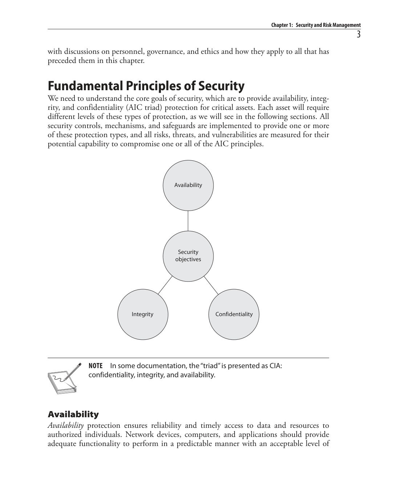
Diagram (p. 37)
performance. They should be able to recover from disruptions in a secure and quick fashion so productivity is not negatively affected. Necessary protection mechanisms must be in place to protect against inside and outside threats that could affect the availability and productivity of all business-processing components. Like many things in life, ensuring the availability of the necessary resources within an organization sounds easier to accomplish than it really is. Networks have many pieces that must stay up and running (routers, switches, DNS servers, DHCP servers, proxies, firewalls, and so on). Software has many components that must be executing in a healthy manner (operating system, applications, antimalware software, and so forth). And an organization’s operations can potentially be negatively affected by environmental aspects (such as fire, flood, HVAC issues, or electrical problems), natural disasters, and physical theft or attacks. An organization must fully understand its operational environment and its availability weaknesses so that it can put in place the proper countermeasures.
Integrity
Integrityis upheld when the assurance of the accuracy and reliability of information and systems is provided and any unauthorized modification is prevented. Hardware, software, and communication mechanisms must work in concert to maintain and process data correctly and to move data to intended destinations without unexpected alteration. The systems and network should be protected from outside interference and contamination. Environments that enforce and provide this attribute of security ensure that attackers, or mistakes by users, do not compromise the integrity of systems or data. When an attacker inserts a virus, logic bomb, or back door into a system, the system’s integrity is compromised. This can, in turn, harm the integrity of information held on the system by way of corruption, malicious modification, or the replacement of data with incorrect data. Strict access controls, intrusion detection, and hashing can combat these threats. Users usually affect a system or its data’s integrity by mistake (although internal users may also commit malicious deeds). For example, users with a full hard drive may unwittingly delete configuration files under the mistaken assumption that deleting a file must be okay because they don’t remember ever using it. Or, for example, a user may insert incorrect values into a data-processing application that ends up charging a customer $3,000 instead of $300. Incorrectly modifying data kept in databases is another common way users may accidentally corrupt data—a mistake that can have lasting effects. Security should streamline users’ capabilities and give them only certain choices and functionality, so errors become less common and less devastating. System-critical files should be restricted from viewing and access by users. Applications should provide mechanisms that check for valid and reasonable input values. Databases should let only authorized individuals modify data, and data in transit should be protected by encryption or other mechanisms.
Confidentiality
Confidentialityensures that the necessary level of secrecy is enforced at each junction of data processing and prevents unauthorized disclosure. This level of secrecy should prevail while data resides on systems and devices within the network, as it is transmitted, and once it reaches its destination. Attackers can thwart confidentiality mechanisms by network monitoring, shoulder surfing, stealing password files, breaking encryption schemes, and social engineering. These topics will be addressed in more depth in later chapters, but briefly,shoulder surfing is when a person looks over another person’s shoulder and watches their keystrokes or views data as it appears on a computer screen.Social engineeringis when one person tricks another person into sharing confidential information, for example, by posing as someone authorized to have access to that information. Social engineering can take many forms. Any one-to-one communication medium can be used to perform social engineering attacks. Users can intentionally or accidentally disclose sensitive information by not encrypting it before sending it to another person, by falling prey to a social engineering attack, by sharing a company’s trade secrets, or by not using extra care to protect confidential information when processing it. Confidentiality can be provided by encrypting data as it is stored and transmitted, by enforcing strict access control and data classification, and by training personnel on the proper data protection procedures. Availability, integrity, and confidentiality are critical principles of security. You should understand their meaning, how they are provided by different mechanisms, and how their absence can negatively affect an organization.
Balanced Security
In reality, when information security is dealt with, it is commonly only through the lens of keeping secrets secret (confidentiality). The integrity and availability threats can be overlooked and only dealt with after they are properly compromised. Some assets have a critical confidentiality requirement (company trade secrets), some have critical integrity requirements (financial transaction values), and some have critical availability requirements (e-commerce web servers). Many people understand the concepts of the AIC triad, but may not fully appreciate the complexity of implementing the necessary controls to provide all the protection these concepts cover. The following provides ashortlist of some of these controls and how they map to the components of the AIC triad.
Availability:
Redundant array of independent disks (RAID)
- Clustering
- Load balancing
- Redundant data and power lines
- Software and data backups
- Disk shadowing
- Co-location and offsite facilities
- Rollback functions
- Failover configurations
- Integrity:
Hashing (data integrity)
- Configuration management (system integrity)
- Change control (process integrity)
- Access control (physical and technical)
- Software digital signing
- Transmission cyclic redundancy check (CRC) functions
- Confidentiality:
Encryption for data at rest (whole disk, database encryption)
- Encryption for data in transit (IPSec, TLS, PPTP, SSH, described in Chapter 4)
- Access control (physical and technical)
- All of these control types will be covered in this book. What is important to realize at this point is that while the concept of the AIC triad may seem simplistic, meeting its requirements is commonly more challenging.
Security Definitions
The words “vulnerability,” “threat,” “risk,” and “exposure” are often interchanged, even though they have different meanings. It is important to understand each word’s definition and the relationships between the concepts they represent. Avulnerabilityis a weakness in a system that allows a threat source to compromise its security. It can be a software, hardware, procedural, or human weakness that can be exploited. A vulnerability may be a service running on a server, unpatched applications or operating systems, an unrestricted wireless access point, an open port on a firewall, lax physical security that allows anyone to enter a server room, or unenforced password management on servers and workstations. Athreatis any potential danger that is associated with the exploitation of a vulnerability. If the threat is that someone will identify a specific vulnerability and use it against the company or individual, then the entity that takes advantage of a vulnerability is referred to as athreat agent. A threat agent could be an intruder accessing the network through a
port on the firewall, a process accessing data in a way that violates the security policy, or an employee circumventing controls in order to copy files to a medium that could expose confidential information. Ariskis the likelihood of a threat source exploiting a vulnerability and the corresponding business impact. If a firewall has several ports open, there is a higher likelihood that an intruder will use one to access the network in an unauthorized method. If users are not educated on processes and procedures, there is a higher likelihood that an employee will make an unintentional mistake that may destroy data. If an intrusion detection system (IDS) is not implemented on a network, there is a higher likelihood an attack will go unnoticed until it is too late. Risk ties the vulnerability, threat, and likelihood of exploitation to the resulting business impact. Anexposureis an instance of being exposed to losses. A vulnerability exposes an organization to possible damages. If password management is lax and password rules are not enforced, the company is exposed to the possibility of having users’ passwords compromised and used in an unauthorized manner. If a company does not have its wiring inspected and does not put proactive fire prevention steps into place, it exposes itself to potentially devastating fires. Acontrol, or countermeasure, is put into place to mitigate (reduce) the potential risk. A countermeasure may be a software configuration, a hardware device, or a procedure that eliminates a vulnerability or that reduces the likelihood a threat agent will be able to exploit a vulnerability. Examples of countermeasures include strong password management, firewalls, a security guard, access control mechanisms, encryption, and security-awareness training.
The terms “control,” “countermeasure,” and “safeguard” are interchangeable terms. They are mechanisms put into place to reduce risk.
If a company has antimalware software but does not keep the signatures up to date, this is a vulnerability. The company is vulnerable to malware attacks. The threat is that a virus will show up in the environment and disrupt productivity. The risk is the likelihood of a virus showing up in the environment and causing damage and the resulting potential damage. If a virus infiltrates the company’s environment, then a vulnerability has been exploited and the company is exposed to loss. The countermeasures in this situation are to update the signatures and install the antimalware software on all computers. The relationships among risks, vulnerabilities, threats, and countermeasures are shown in Figure 1-1. Applying the right countermeasure can eliminate the vulnerability and exposure, and thus reduce the risk. The company cannot eliminate the threat agent, but it can protect itself and prevent this threat agent from exploiting vulnerabilities within the environment.
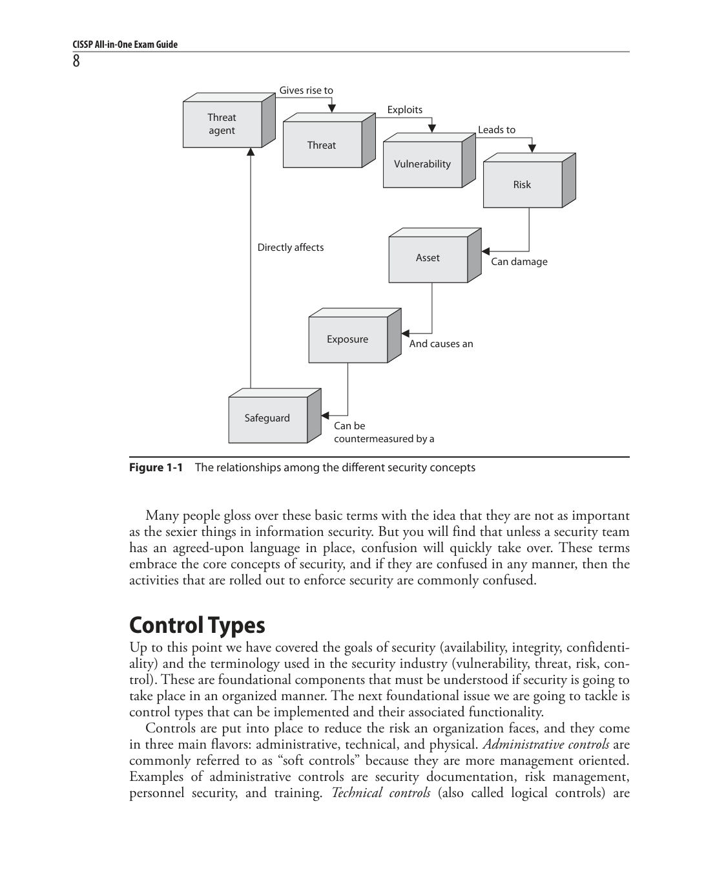
Figure 1-1The relationships among the different security concepts
Many people gloss over these basic terms with the idea that they are not as important as the sexier things in information security. But you will find that unless a security team has an agreed-upon language in place, confusion will quickly take over. These terms embrace the core concepts of security, and if they are confused in any manner, then the activities that are rolled out to enforce security are commonly confused.
Control Types
Up to this point we have covered the goals of security (availability, integrity, confidentiality) and the terminology used in the security industry (vulnerability, threat, risk, control). These are foundational components that must be understood if security is going to take place in an organized manner. The next foundational issue we are going to tackle is control types that can be implemented and their associated functionality. Controls are put into place to reduce the risk an organization faces, and they come in three main flavors: administrative, technical, and physical.Administrative controlsare commonly referred to as “soft controls” because they are more management oriented. Examples of administrative controls are security documentation, risk management, personnel security, and training.Technical controls(also called logical controls) are
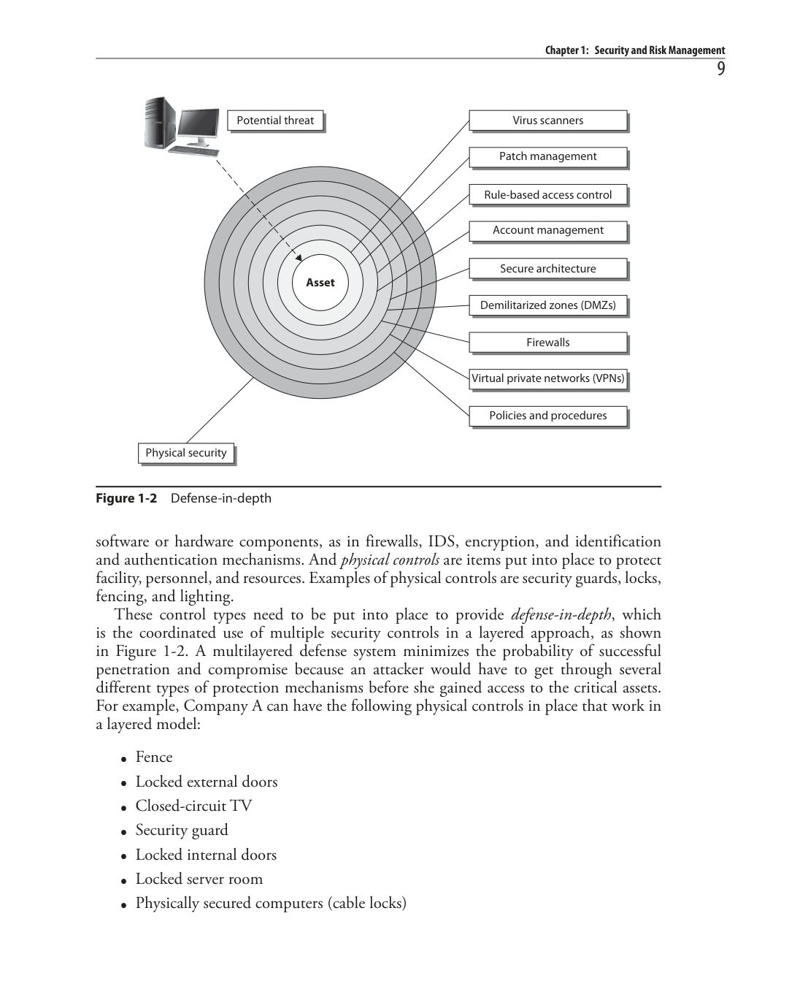
Figure 1-2Defense-in-depth
software or hardware components, as in firewalls, IDS, encryption, and identification and authentication mechanisms. Andphysical controlsare items put into place to protect facility, personnel, and resources. Examples of physical controls are security guards, locks, fencing, and lighting. These control types need to be put into place to providedefense-in-depth, which is the coordinated use of multiple security controls in a layered approach, as shown in Figure 1-2. A multilayered defense system minimizes the probability of successful penetration and compromise because an attacker would have to get through several different types of protection mechanisms before she gained access to the critical assets. For example, Company A can have the following physical controls in place that work in a layered model:
Fence
- Locked external doors
- Closed-circuit TV
- Security guard
- Locked internal doors
- Locked server room
- Physically secured computers (cable locks)
- Technical controls that are commonly put into place to provide this type of layered approach are
Firewalls
- Intrusion detection system
- Intrusion prevention systems
- Antimalware
- Access control
- Encryption
- The types of controls that are actually implemented must map to the threats the company faces, and the number of layers that are put into place must map to the sensitivity of the asset. The rule of thumb is the more sensitive the asset, the more layers of protection that must be put into place. So the differentcategoriesof controls that can be used are administrative, technical, and physical. But what do these controls actuallydofor us? We need to understand the different functionality that each control type can provide us in our quest to secure our environments. The different functionalities of security controls arepreventive,detective,corrective, deterrent,recovery, andcompensating. By having a better understanding of the different control functionalities, you will be able to make more informed decisions about what controls will be best used in specific situations. The six different control functionalities are as follows:
PreventiveIntended to avoid an incident from occurring
- DetectiveHelps identify an incident’s activities and potentially an intruder
- CorrectiveFixes components or systems after an incident has occurred
- DeterrentIntended to discourage a potential attacker
- RecoveryIntended to bring the environment back to regular operations
- CompensatingControls that provide an alternative measure of control
- Once you understand fully what the different controls do, you can use them in the right locations for specific risks. When looking at a security structure of an environment, it is most productive to use a preventive model and then use detective, corrective, and recovery mechanisms to help support this model. Basically, you want to stop any trouble before it starts, but you must be able to quickly react and combat trouble if it does find you. It is not feasible to prevent everything; therefore, what you cannot prevent, you should be able to quickly detect. That’s why preventive and detective controls should always be implemented together and should complement each other. To take this concept further: what you can’t prevent, you should be able to detect, and if you detect something, it means you weren’t able to prevent it, and therefore you should take corrective action to make sure it is indeed
prevented the next time around. Therefore, all three types work together: preventive, detective, and corrective. The control types described next (administrative, physical, and technical) are preventive in nature. These are important to understand when developing an enterprisewide security program.
Preventive: Administrative
Policies and procedures
- Effective hiring practices
- Pre-employment background checks
- Controlled termination processes
- Data classification and labeling
- Security awareness
- Preventive: Physical
Badges, swipe cards
- Guards, dogs
- Fences, locks, mantraps
- Preventive: Technical
Passwords, biometrics, smart cards
- Encryption, secure protocols, call-back systems, database views, constrained user
- interfaces
Antimalware software, access control lists, firewalls, intrusion prevention system
- Table 1-1 shows how these types of control mechanisms perform different security functions. Many students get themselves wrapped around the axle when trying to get their mind around which control provides which functionality. This is how this train of thought usually takes place: “A firewall is a preventive control, but if an attacker knew that it was in place it could be a deterrent.” Let’s stop right here. Do not make this any harder than it has to be. When trying to map the functionality requirement to a control, think of themainreason that control would be put into place. A firewall tries to prevent something bad from taking place, so it is a preventative control. Auditing logs is done after an event took place, so it is detective. A data backup system is developed so that data can be recovered; thus, this is a recovery control. Computer images are created so that if software gets corrupted, they can be reloaded; thus, this is a corrective control. One control functionality that some people struggle with is a compensating control. Let’s look at some examples of compensating controls to best explain their function. If your company needed to implement strong physical security, you might suggest to
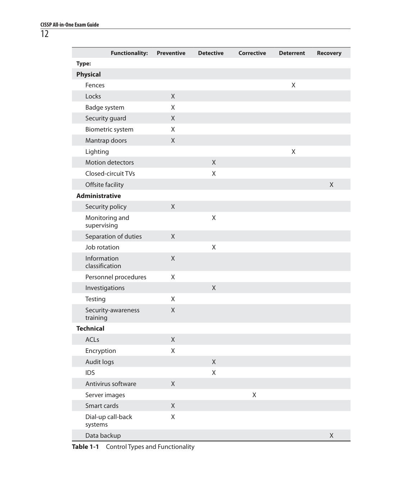
Physical
management that they employ security guards. But after calculating all the costs of security guards, your company might decide to use a compensating (alternative) control that provides similar protection but is more affordable—as in a fence. In another example, let’s say you are a security administrator and you are in charge of maintaining the company’s firewalls. Management tells you that a certain protocol that you know is vulnerable to exploitation has to be allowed through the firewall for business reasons. The network needs to be protected by a compensating (alternative) control pertaining to this protocol, which may be setting up a proxy server for that specific traffic type to ensure that it is properly inspected and controlled. So a compensating control is just an alternative control that provides similar protection as the original control, but has to be used because it is more affordable or allows specifically required business functionality. Several types of security controls exist, and they all need to work together.The complexity of the controls and of the environment they are in can cause the controls to contradict each other or leave gaps in security. This can introduce unforeseen holes in the company’s protection that are not fully understood by the implementers. A company may have very strict technical access controls in place and all the necessary administrative controls up to snuff, but if any person is allowed to physically access any system in the facility, then clear security dangers are present within the environment. Together, these controls should work in harmony to provide a healthy, safe, and productive environment.
Security Frameworks
With each section we are getting closer to some of the overarching topics of this chapter. Up to this point we know what we need to accomplish (availability, integrity, confidentiality) and we know the tools we can use (administrative, technical, and physical controls) and we know how to talk about this issue (vulnerability, threat, risk, control). Before we move into how to develop an organization-wide security program, let’s first explore whatnotto do, which is referred to as security through obscurity. The concept ofsecurity through obscurityis assuming that your enemies are not as smart as you are and that they cannot figure out something that you feel is very tricky. A nontechnical example of security through obscurity is the old practice of putting a spare key under a doormat in case you are locked out of the house. You assume that no one knows about the spare key, and as long as they don’t, it can be considered secure. The vulnerability here is that anyone could gain easy access to the house if they have access to that hidden spare key, and the experienced attacker (in this example, a burglar) knows that these kinds of vulnerabilities exist and takes the appropriate steps to seek them out. In the technical realm, some vendors work on the premise that compiling their product’s code provides more protection than exists in products based upon open-source code, because no one can view their original programming instructions. But attackers have a wide range of reverse-engineering tools available to them to reconstruct the product’s original code, and there are other ways to figure out how to exploit software without reverse-engineering it, as in fuzzing, data validation inputs, etc. The proper approach to security is to ensure that the original software does not contain flaws—not to assume that putting the code into a compiled format provides the necessary level of protection.
Another common example of practicing security through obscurity is to develop cryptographic algorithms in-house instead of using algorithms that are commonly used within the industry. Some organizations assume that if attackers are not familiar with the logic functions and mathematics of their homegrown algorithms, this lack of understanding by the attacker will serve as a necessary level of security. But attackers are smart, clever, and motivated. If there are flaws within these algorithms, attackers will most likely identify and exploit them. The better approach is to use industry-recognized algorithms that have proven themselves to be strong. Some network administrators will remap protocols on their firewalls so that HTTP is not coming into the environment over the well-known port 80, but instead over port 8080. The administrator assumes that an attacker will not figure out this remapping, but in reality a basic port scanner and protocol analyzer will easily detect this port remapping. So don’t try to outsmart the bad guy with trickery; instead, practice security in a mature, solid approach. Don’t try to hide the flaws that can be exploited; get rid of those flaws altogether by following proven security practices. Reliance on confusion to provide security is obviously dangerous. Though everyone wants to believe in the innate goodness of their fellow man, no security professional would have a job if this were actually true. In security, a good practice is illustrated by the old saying, “There are only two people in the world I trust: you and me—and I’m not so sure about you.” This is a better attitude to take, because security really can be compromised by anyone, at any time. So we do not want our organization’s security program to be built upon smoke and mirrors, and we understand that we most likely cannot out-trick our enemies—what do we do? Build a fortress, aka security program. Hundreds of years ago your enemies would not be attacking you with packets through a network; they would be attacking you with big sticks while they rode horses. When one faction of people needed to protect themselves from another, they did not just stack some rocks on top of each other in a haphazard manner and call that protection. (Well, maybe some groups did, but they died right away and do not really count.) Groups of people built castles based upon architectures that could withstand attacks. The walls and ceilings were made of solid material that was hard to penetrate. The structure of the buildings provided layers of protection. The buildings were outfitted with both defensive and offensive tools, and some were surround by moats. That is our goal, minus the moat. A security program is a framework made up of many entities: logical, administrative, and physical protection mechanisms; procedures; business processes; and people that all work together to provide a protection level for an environment. Each has an important place in the framework, and if one is missing or incomplete, the whole framework may be affected. The program should work in layers: each layer provides support for the layer above it and protection for the layer below it. Because a security program is aframework, organizations are free to plug in different types of technologies, methods, and procedures to accomplish the necessary protection level for their environment. A security program based upon a flexible framework sounds great, but how do we build one? Before a fortress was built, the structure was laid out in blueprints by an architect. We need a detailed plan to follow to properly build our security program. Thank goodness industry standards were developed just for this purpose.
Many Standards, Best Practices, and Frameworks
As you will see in the following sections, various for-profit and nonprofit organizations have developed their own approaches to security management, security control objectives, process management, and enterprise development. We will examine their similarities and differences and illustrate where each is used within the industry. The following is a basic breakdown.
Security Program Development:
ISO/IEC 27000 seriesInternational standards on how to develop and
- maintain an ISMS developed by ISO and IEC
Enterprise Architecture Development:
Zachman FrameworkModel for the development of enterprise
- architectures developed by John Zachman
TOGAFModel and methodology for the development of enterprise
- architectures developed by The Open Group
DoDAFU.S. Department of Defense architecture framework that ensures
- interoperability of systems to meet military mission goals
MODAFArchitecture framework used mainly in military support
- missions developed by the British Ministry of Defence
SABSA modelModel and methodology for the development of
- information security enterprise architectures
Security Controls Development:
COBIT 5A business framework to allow for IT enterprise management
- and governance that was developed by Information Systems Audit and Control Association (ISACA) NIST SP 800-53Set of controls to protect U.S. federal systems developed
- by the National Institute of Standards and Technology
COSO Internal Control—Integrated FrameworkSet of internal corporate
- controls to help reduce the risk of financial fraud developed by the Committee of Sponsoring Organizations (COSO) of the Treadway Commission
(Continued)
Process Management Development:
ITILProcesses to allow for IT service management developed by the
- United Kingdom’s Office of Government Commerce
Six SigmaBusiness management strategy that can be used to carry out
- process improvement
Capability Maturity Model Integration (CMMI)Organizational
- development for process improvement developed by Carnegie Mellon University
ISO/IEC 27000 Series
British Standard 7799 (BS7799)was developed in 1995 by the United Kingdom government’s Department of Trade and Industry and published by the British Standards Institution. The standard outlined how an information security management system (ISMS) (aka security program) should be built and maintained. The goal in developing the standard was to provide guidance to organizations on how to design, implement, and maintain policies, processes, and technologies to manage risks to its sensitive information assets. The reason that this type of standard was even needed was to try and centrally manage the various security controls deployed throughout an organization. Without a security management system, the controls would be implemented and managed in an ad hoc manner. The IT department would take care of technology security solutions, personnel security would be within the human relations department, physical security in the facilities department, and business continuity in the operations department. We needed a way to oversee all of these items and knit them together in a holistic manner. This British Standard met this need. The British Standard actually had two parts: BS7799 Part 1, which outlined control objectives and a range of controls that can be used to meet those objectives, and BS7799 Part 2, which outlined how a security program (ISMS) can be set up and maintained. BS7799 Part 2 also served as a baseline that organizations could be certified against. BS7799 was considered a de facto standard, which means that no specific standards body was demanding that everyone follow it—but the standard seemed to be a really good idea and fit an industry need, so everyone decided to follow it. When organizations around the world needed to develop an internal security program, there were no guidelines or direction to follow except BS7799. However, as BS7799 was being updated, it went through a long range of confusing titles, including different version numbers. So you could see this referenced as BS7799, BS7799v1, BS7799v2, ISO 17799, BS7799- 3:2005, and so on. The need to expand and globally standardize BS7799 was identified, and this task was taken on by the International Organization for Standardization (ISO) and the International Electrotechnical Commission (IEC). ISO is the world’s largest developer and publisher of international standards. The standards this group works on range from
meteorology, food technology, and agriculture to space vehicle engineering, mining, and information technology. ISO is a network of the national standards institutes of 162 countries. So these are the really smart people who come up with really good ways of doing stuff, one being how to set up information security programs within organizations. The IEC develops and publishes international standards for all electrical, electronic, and related technologies. These two organizations worked together to build on top of what was provided by BS7799 and launch the new version as a global standard, known as the ISO/IEC 27000 series.
Though IEC is an acronym (for International Electrotechnical Commission), ISO is not. The name ISO is simply a derivation of the Greek word for equal (isos).
The industry has moved from the more ambiguous BS7799 standard to the ISO/IEC 27000 series, an ever-evolving list of ISO/IEC standards that attempt to compartmentalize and modularize the necessary components of an ISMS. The currently published standards (with a few omitted) include the following:
ISO/IEC 27000Overview and vocabulary
- ISO/IEC 27001ISMS requirements
- ISO/IEC 27002Code of practice for information security management
- ISO/IEC 27003ISMS implementation
- ISO/IEC 27004ISMS measurement
- ISO/IEC 27005Risk management
- ISO/IEC 27006Certification body requirements
- ISO/IEC 27007ISMS auditing
- ISO/IEC 27008Guidance for auditors
- ISO/IEC 27011Telecommunications organizations
- ISO/IEC 27014Information security governance
- ISO/IEC 27015Financial sector
- ISO/IEC 27031Business continuity
- ISO/IEC 27032Cybersecurity
- ISO/IEC 27033Network security
- ISO/IEC 27034Application security
- ISO/IEC 27035Incident management
- ISO/IEC 27037Digital evidence collection and preservation
- ISO/IEC 27799Health organizations
- The ISO/IEC 27000 series serves as industry best practices for the management of security controls in a holistic manner within organizations around the world. The list of standards that makes up this series grows each year. Each standard has a specific focus (such as metrics, governance, auditing, and so on). It is common for organizations to seek an ISO/IEC 27001 certification by an accredited third party. The third party assesses the organization against the ISMS requirements laid out in ISO/IEC 27001 and attests to the organization’s compliance level. Just as (ISC) attests to a person’s security knowledge once he passes the CISSP exam, the third party attests to the security practices within the boundaries of the company it evaluates. It is useful to understand the differences between the ISO/IEC 27000 series of standards and how they relate to each other. Figure 1-3 illustrates the differences between general requirements, general guidelines, and sector-specific guidelines.
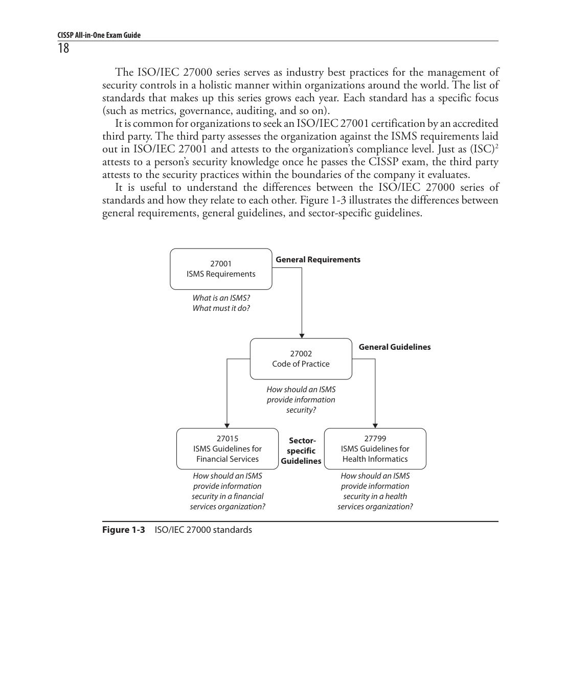
Figure 1-3ISO/IEC 27000 standards
The CISSP common body of knowledge placesallarchitectures (enterprise and system) within the domain Security Engineering. Enterprise architectures are covered in this chapter because they directly relate to the organizational security program components covered throughout the chapter. Chapter 3 deals specifically with system architectures that are used in software engineering and design.
Enterprise Architecture Development
Organizations have a choice when attempting to secure their environment as a whole. They can just toss in products here and there, which are referred to as point solutions or stovepipe solutions, and hope the ad hoc approach magically works in a manner that secures the environment evenly and covers all of the organization’s vulnerabilities. Or the organization can take the time to understand the environment, understand the security requirements of the business and environment, and lay out an overarching framework and strategy that maps the two together. Most organizations choose option one, which is the “constantly putting out fires” approach. This is a lovely way to keep stress levels elevated and security requirements unmet, and to let confusion and chaos be the norm. The second approach would be to define an enterprise security architecture, allow it to be the guide when implementing solutions to ensure business needs are met, provide standard protection across the environment, and reduce the amount of security surprises the organization will run into. Although implementing an enterprise security architecture will not necessarily promise pure utopia, it does tame the chaos and gets the security staff, and organization into a more proactive and mature mindset when dealing with security as a whole. Developing an architecture from scratch is not an easy task. Sure, it is easy to draw a big box with smaller boxes inside of it, but what do the boxes represent? What are the relationships between the boxes? How does information flow between the boxes? Who needs to view these boxes, and what aspects of the boxes do they need for decision making? An architecture is a conceptual construct. It is a tool to help individuals understand a complex item (such as an enterprise) in digestible chunks. If you are familiar with the OSI networking model, this is an abstract model used to illustrate the architecture of a networking stack. A networking stack within a computer is very complex because it has so many protocols, interfaces, services, and hardware specifications. But when we think about it in a modular framework (seven layers), we can better understand the network stack as a whole and the relationships between the individual components that make it up.
The OSI network stack will be covered extensively in Chapter 4.
An enterprise architecture encompasses the essential and unifying components of an organization. It expresses the enterprise structure (form) and behavior (function). It embodies the enterprise’s components, their relationships to each other, and their relationships to the environment. In this section we will be covering several different enterprise architecture frameworks. Each framework has its own specific focus, but they all provide guidance on how to build individual architectures so that they are useful tools to a diverse set of individuals. Notice the difference between an architectureframeworkand an actual architecture. You use the framework as a guideline on how to build an architecture that best fits your company’s needs. Each company’s architecture will be different because companies have different business drivers, security and regulatory requirements, cultures, and organizational structures—but if each starts with the same architectureframework, then their architectures will have similar structures and goals. It is similar to three people starting with a ranch-style house blueprint. One person chooses to have four bedrooms built because they have three children, one person chooses to have a larger living room and three bedrooms, and the other person chooses two bedrooms and two living rooms. Each person started with the same blueprint (framework) and modified it to meet their needs (architecture). When developing an architecture, first thestakeholdersneed to be identified, the people who will be looking at and using the architecture. Next, theviewsneed to be developed, which is how the information that is most important to the different stakeholders will be illustrated in the most useful manner. The U.S. National Institute of Standards and Technology (NIST) developed a framework, illustrated in Figure 1-4, which shows that companies have several different viewpoints. Executives need to understand the company from a business point of view, business process developers need to understand what type of information needs to be collected to support business activities, application developers need to understand system requirements that maintain and process the information, data modelers need to know how to structure data elements, and the technology group needs to understand the network components required to support the layers above it. They are all looking at an architecture of the same company; it is just being presented in views that they understand and that directly relate to their responsibilities within the organization. An enterprise architecture allows you to not only understand the company from several different views, but also understand how a change that takes place at one level will affect items at other levels. For example, if there is a new business requirement, how is it going to be supported at each level of the enterprise? What type of new information must be collected and processed? Do new applications need to be purchased or current ones modified? Are new data elements required? Will new networking devices be required? An architecture allows you to understand all the things that will need to change just to support one new business function. The architecture can be used in the opposite direction also. If a company is looking to do a technology refresh, will the new systems still support all of the necessary functions in the layers above the technology level? An architecture allows you to understand an organization as one complete organism and illustrate how changes to one internal component can directly affect another one.
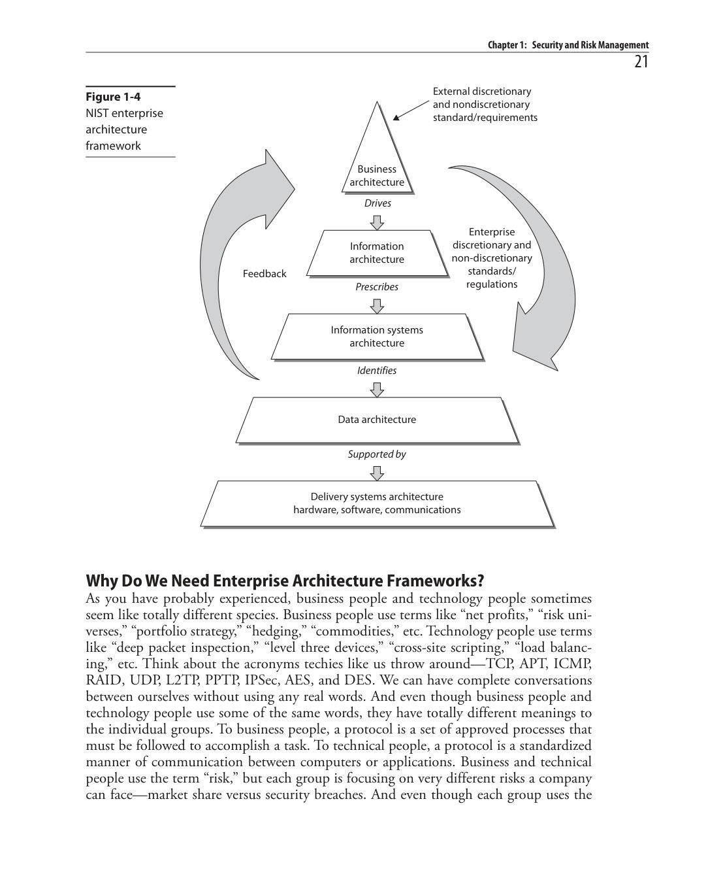
Figure 1-4
Why Do We Need Enterprise Architecture Frameworks?
As you have probably experienced, business people and technology people sometimes seem like totally different species. Business people use terms like “net profits,” “risk universes,” “portfolio strategy,” “hedging,” “commodities,” etc. Technology people use terms like “deep packet inspection,” “level three devices,” “cross-site scripting,” “load balancing,” etc. Think about the acronyms techies like us throw around—TCP, APT, ICMP, RAID, UDP, L2TP, PPTP, IPSec, AES, and DES. We can have complete conversations between ourselves without using any real words. And even though business people and technology people use some of the same words, they have totally different meanings to the individual groups. To business people, a protocol is a set of approved processes that must be followed to accomplish a task. To technical people, a protocol is a standardized manner of communication between computers or applications. Business and technical people use the term “risk,” but each group is focusing on very different risks a company can face—market share versus security breaches. And even though each group uses the
term “data” the same, business people look at data only from a functional point of view and security people look at data from a risk point of view. This divide between business perspectives and technology perspectives can not only cause confusion and frustration—it commonly costs money. If the business side of the house wants to offer customers a new service, as in paying bills online, there may have to be extensive changes to the current network infrastructure, applications, web servers, software logic, cryptographic functions, authentication methods, database structures, etc. What seems to be a small change in a business offering can cost a lot of money when it comes to adding up the new technology that needs to be purchased and implemented, programming that needs to be carried out, re-architecting of networks, etc. It is common for business people to feel as though the IT department is more of an impediment when it comes to business evolution and growth, and in turn the IT department feels as though the business people are constantly coming up with outlandish and unrealistic demands with no supporting budgets. Becauseofthistypeofconfusionbetweenbusinessandtechnologypeople, organizations around the world have implemented incorrect solutions because the business functionality to technical specifications was not understood. This results in having to repurchase new solutions, carry out rework, and waste an amazing amount of time. Not only does this cost the organization more money than it should have in the first place, business opportunities may be lost, which can reduce market share. This type of waste has happened so much that the U.S. Congress passed the Clinger-Cohen Act, which requires federal agencies to improve their IT expenditures. So we need a tool that both business people and technology people can use to reduce confusion, optimize business functionality, and not waste time and money. This is where business enterprise architectures come into play. It allows both groups (business and technology) to view the same organization in ways that make sense to them. When you go to the doctor’s office, there is a poster of a skeleton system on one wall, a poster of a circulatory system on the other wall, and another poster of the organs that make up a human body. These are all different views of the same thing, the human body. This is the same functionality that enterprise architecture frameworks provide: different views of the same thing. In the medical field we have specialists (podiatrists, brain surgeons, dermatologists, oncologists, ophthalmologists, etc.). Each organization is also made up of its own specialists (HR, marketing, accounting, IT, R&D, management, etc.). But there also has to be an understanding of the entity (whether it is a human body or company) holistically, which is what an enterprise architecture attempts to accomplish.
Zachman Architecture Framework
One of the first enterprise architecture frameworks that was created is theZachman Framework, created by John Zachman. This model is generic, and is well suited to frame the work we do in information systems security. A sample (though fairly simplified) representation is depicted in Table 1-2. The Zachman Framework is a two-dimensional model that uses six basic communication interrogatives (What, How, Where, Who, When, and Why) intersecting with different perspectives (Executives, Business Managers, System Architects, Engineers,
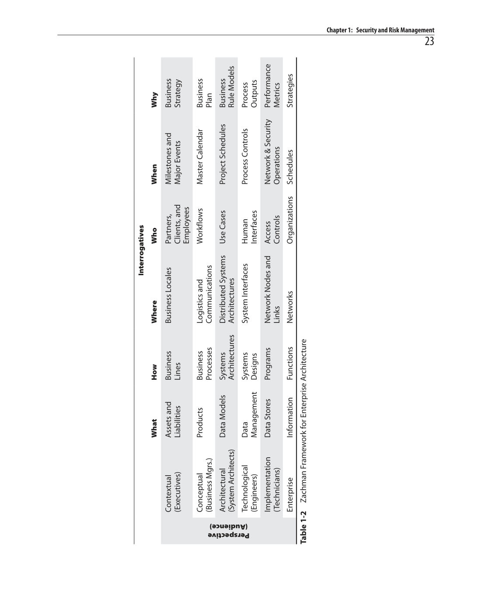
Diagram (p. 57)
Technicians, and Enterprise-wide) to give a holistic understanding of the enterprise. This framework was developed in the 1980s and is based on the principles of classical business architecture that contain rules that govern an ordered set of relationships. One of these rules is that each row should describe the enterprise completely from that row’s perspective. For example, IT personnel’s jobs require them to see the organization in terms of data stores, programs, networks, access controls, operations, and metrics. Though they are (or at least should be) aware of other perspectives and items, the performance of their duties in the example organization is focused on these items. The goal of this framework is to be able to look at the same organization from different viewpoints. Different groups within a company need the same information, but presented in ways that directly relate to their responsibilities. A CEO needs financial statements, scorecards, and balance sheets. A network administrator needs network schematics, a systems engineer needs interface requirements, and the operations department needs configuration requirements. If you have ever carried out a network-based vulnerability test, you know that you cannot tell the CEO that some systems are vulnerable to SYN- based attacks, or that the company software allows for client-side browser injections, or that some Windows-based applications are vulnerable to alternative data stream attacks. The CEO needs to know this information, but in a language she can understand. People at each level of the organization need information in a language and format that is most useful to them. A business enterprise architecture is used to optimize often fragmented processes (both manual and automated) into an integrated environment that is responsive to change and supportive of the business strategy. The Zachman Framework has been around for many years and has been used by many organizations to build or better define their business environment. This framework is not security oriented, but it is a good template to work with because it offers direction on how to understand an actual enterprise in a modular fashion.
The Open Group Architecture Framework
Another enterprise architecture framework isThe Open Group Architecture Framework (TOGAF), which has its origins in the U.S. Department of Defense. It provides an approach to design, implement, and govern an enterprise information architecture. TOGAF is a framework that can be used to develop the following architecture types:
Business architecture
- Data architecture
- Applications architecture
- Technology architecture
- TOGAF can be used to create these individual architecture types through the use of itsArchitecture Development Method(ADM). This method is an iterative and cyclic process that allows requirements to be continuously reviewed and the individual architectures updated as needed. These different architectures can allow a technology architect to understand the enterprise from four different views (business,
data, application, and technology) so she can ensure her team develops the necessary technology to work within the environment and all the components that make up that environment and meet business requirements. The technology may need to span many different types of networks, interconnect with various software components, and work within different business units. As an analogy, when a new city is being constructed, people do not just start building houses here and there. Civil engineers lay out roads, bridges, waterways, and commercial and housing zoned areas. A large organization that has a distributed and heterogeneous environment that supports many different business functions can be as complex as a city. So before a programmer starts developing code, the architecture of the software needs to be developed in the context of the organization it will work within.
Many technical people have a negative visceral reaction to models like this. They feel it’s too much work, that it’s a lot of fluff, is not directly relevant, and so on. If you handed the same group of people a network schematic with firewalls, IDSs, and virtual private networks (VPNs), they would say, “Now we’re talking about security!” Security technology works within the construct of an organization, so the organization must be understood also.
Military-Oriented Architecture Frameworks
It is hard enough to construct enterprise-wide solutions and technologies for one organization—think about an architecture that has to span many different complex government agencies to allow for interoperability and proper hierarchical communication channels. This is where theDepartment of Defense Architecture Framework (DoDAF)comes into play. When the U.S. DoD purchases technology products and weapon systems, enterprise architecture documents must be created based upon DoDAF standards to illustrate how they will properly integrate into the current infrastructures. The focus of the architecture framework is on command, control, communications, computers, intelligence, surveillance, and reconnaissance systems and processes. It is not only important that these different devices communicate using the same protocol types and interoperable software components, but also that they use the same data elements. If an image is captured from a spy satellite, downloaded to a centralized data repository, and then loaded into a piece of software to direct an unmanned drone, the military personnel cannot have their operations interrupted because one piece of software cannot read another software’s data output. The DoDAF helps ensure that all systems, processes, and personnel work in a concerted effort to accomplish its missions. TheMinistry of Defence Architecture Framework (MODAF)developed by the British MOD is another recognized enterprise architecture framework based upon the DoDAF. The crux of the framework is to be able to get data in the right format to the right people as soon as possible. Modern warfare is complex, and activities happen fast, which requires personnel and systems to be more adaptable than ever before. Data needs to be captured and properly presented so that decision makers understand complex issues quickly, which allows for fast and (hopefully) accurate decisions.
While both DoDAF and MODAF were developed to support mainly military missions, they have been expanded upon and morphed for use in business enterprise environments.
When attempting to figure out which architecture framework is best for your organization, you need to find out who the stakeholders are and what information they need from the architecture. The architecture needs to represent the company in the most useful manner to the people who need to understand it the best. If your company has people (stakeholders) who need to understand the company from a business process perspective, your architecture needs to provide that type of view. If there are people who need to understand the company from an application perspective, your architecture needs a view that illustrates that information. If people need to understand the enterprise from a security point of view, that needs to be illustrated in a specific view. So one main difference between the various enterprise architecture frameworks is what type of information they provide and how they provide it.
Enterprise Security Architecture
Anenterprise security architectureis a subset of an enterprise architecture and defines the information security strategy that consists of layers of solutions, processes, and procedures and the way they are linked across an enterprise strategically, tactically, and operationally. It is a comprehensive and rigorous method for describing the structure and behavior of all the components that make up a holistic ISMS. The main reason to develop an enterprise security architecture is to ensure that security efforts align with business practices in a standardized and cost-effective manner. The architecture works at an abstraction level and provides a frame of reference. Besides security, this type of architecture allows organizations to better achieve interoperability, integration, ease of use, standardization, and governance. How do you know if an organization does not have an enterprise security architecture in place? If the answer is “yes” to most of the following questions, this type of architecture is not in place:
Does security take place in silos throughout the organization?
- Is there a continual disconnect between senior management and the
- securitystaff?
Are redundant products purchased for different departments for overlapping
- security needs?
Is the security program made up of mainly policies without actual
- implementation and enforcement?
When user access requirements increase because of business needs, does the
- network administrator just modify the access controls without the user manager’s documented approval?
When a new product is being rolled out, do unexpected interoperability issues
- pop up that require more time and money to fix?
Do many “one-off ” efforts take place instead of following standardized
- procedures when security issues arise?
Are the business unit managers unaware of their security responsibilities and how
- their responsibilities map to legal and regulatory requirements?
Is “sensitive data” defined in a policy, but the necessary controls are not fully
- implemented and monitored?
Are stovepipe (point) solutions implemented instead of enterprise-wide solutions?
- Are the same expensive mistakes continuing to take place?
- Is security governance currently unavailable because the enterprise is not viewed
- or monitored in a standardized and holistic manner?
Are business decisions being made without taking security into account?
- Are security personnel usually putting out fires with no real time to look at and
- develop strategic approaches?
Are security efforts taking place in business units that other business units know
- nothing about?
Are more and more security personnel seeking out mental health professionals
- and going on antidepressant or anti-anxiety medication?
If many of these answers are “yes,” no useful architecture is in place. Now, the following is something very interesting the authors have seen over several years. Most organizations have multiple problems in the preceding list and yet they focus on each item as if it is unconnected to the other problems. What the CSO, CISO, and/or security administrator does not always understand is that these are justsymptomsof a treatable disease. The “treatment” is to put one person in charge of a team that develops a phased-approach enterprise security architecture rollout plan. The goals are to integrate technologyoriented and business-centric security processes; link administrative, technical, and physical controls to properly manage risk; and integrate these processes into the IT infrastructure, business processes, and the organization’s culture. The main reason organizations do not develop and roll out an enterprise security architecture is that they do not fully understand what one is and the task seems overwhelming. Fighting fires is more understandable and straightforward, so many companies stay with this familiar approach. A group developed theSherwood Applied Business Security Architecture (SABSA), as shown in Table 1-3, which is similar to the Zachman Framework. It is a layered framework, with its first layer defining business requirements from a security perspective. Each layer of the framework decreases in abstraction and increases in detail so it builds upon the others and moves from policy to practical implementation of technology and solutions. The idea is to provide a chain of traceability through the contextual, conceptual, logical, physical, component, and operational levels.
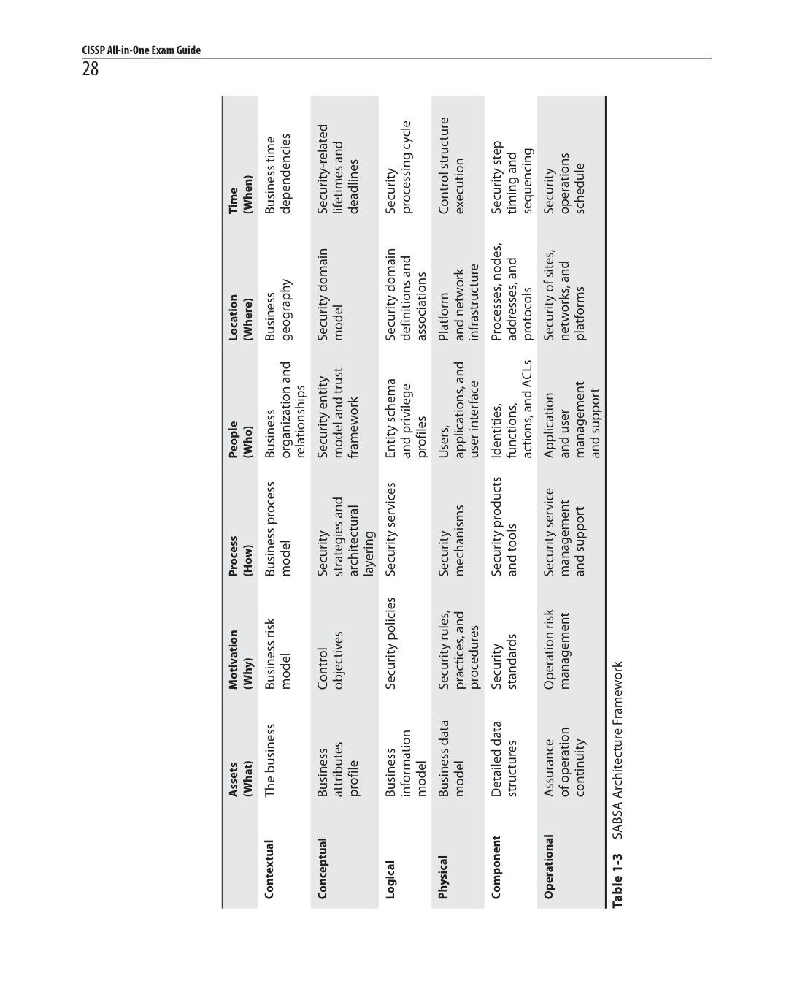
Diagram (p. 62)
The following outlines the questions that are to be asked and answered at each level of the framework:
Whatare you trying to do at this layer?The assets to be protected by your
- security architecture.
Whyare you doing it?The motivation for wanting to apply security, expressed
- in the terms of this layer.
Howare you trying to do it?The functions needed to achieve security at
- thislayer.
Whois involved?The people and organizational aspects of security at
- this layer.
Whereare you doing it?The locations where you apply your security, relevant
- to this layer.
Whenare you doing it?The time-related aspects of security relevant to
- this layer.
SABSA is a framework and methodology for enterprise security architecture and service management. Since it is aframework, this means it provides a structure for individual architectures to be built from. Since it is amethodologyalso, this means it provides the processes to follow to build and maintain this architecture. SABSA provides a life-cycle model so that the architecture can be constantly monitored and improved upon over time. For an enterprise security architecture to be successful in its development and implementation, the following items must be understood and followed: strategic alignment, business enablement, process enhancement, and security effectiveness.
Strategic AlignmentStrategic alignmentmeans the business drivers and the regulatory and legal requirements are being met by the security enterprise architecture. Security efforts must provide and support an environment that allows a company to not only survive, but thrive. The security industry has grown up from the technical and engineering world, not the business world. In many organizations, while the IT security personnel and business personnel might be located physically close to each other, they are commonly worlds apart in how they see the same organization they work in. Technology is only a tool that supports a business; it is not the business itself. The IT environment is analogous to the circulatory system within a human body; it is there to support the body—the body does not exist to support the circulatory system. And security is analogous to the immune system of the body—it is there to protect the overall environment. If these critical systems (business, IT, security) do not work together in a concerted effort, there will be deficiencies and imbalances. While deficiencies and imbalances lead to disease in the body, deficiencies and imbalances within an organization can lead to risk and security compromises.
ISMS vs. Security Enterprise Architecture
What is the difference between an ISMS and an enterprise security architecture? An ISMS outlines the controls that need to be put into place (risk management, vulnerability management, business continuity planning, data protection, auditing, configuration management, physical security, etc.) and provides direction on how those controls should be managed throughout their life cycle. The ISMS specifies the pieces and parts that need to be put into place to provide a holistic security program for the organization overall and how to properly take care of those pieces and parts. The enterprise security architecture illustrates how these components are to be integrated into the different layers of the current business environment. The security components of the ISMS have to be interwoven throughout the business environment and not siloed within individual company departments. For example, the ISMS will dictate that risk management needs to be put in place, and the enterprise architecture will chop up the risk management components and illustrate how risk management needs to take place at the strategic, tactical, and operational levels. As another example, the ISMS could dictate that data protection needs to be put into place. The architecture can show how this happens at the infrastructure, application, component, and business level. At the infrastructure level we can implement data loss protection technology to detect how sensitive data is traversing the network. Applications that maintain sensitive data must have the necessary access controls and cryptographic functionality. The components within the applications can implement the specific cryptographic functions. And protecting sensitive company information can be tied to business drivers, which is illustrated at the business level of the architecture. The ISO/IEC 27000 series (which outlines the ISMS) is very policy oriented and outlines the necessary components of a security program. This means that the ISO standards are general in nature, which is not a defect—they were created that way so that they could be applied to various types of businesses, companies, and organizations. But since these standards are general, it can be difficult to know how to implement them and map them to your company’s infrastructure and business needs. This is where the enterprise security architecture comes into play. The architecture is a tool used to ensure that what is outlined in the security standards is implemented throughout the different layers of an organization.
Business EnablementWhen looking at thebusiness enablementrequirement of the security enterprise architecture, we need to remind ourselves that each organization exists for one or more specific business purposes. Publicly traded companies are in the business of increasing shareholder value. Nonprofit organizations are in the business of furthering a specific set of causes. Government organizations are in the business of providing services to their citizens. Companies and organizations do not exist for the sole purpose of being secure. Security cannot stand in the way of business processes, but should be implemented to better enable them.
Business enablement means the core business processes are integrated into the security operating model—they are standards based and follow a risk tolerance criteria. What does this mean in the real world? Let’s say a company’s accountants have figured out that if they allow the customer service and support staff to work from home, the company would save a lot of money on office rent, utilities, and overhead—plus, the company’s insurance would be cheaper. The company could move into this new model with the use of VPNs, firewalls, content filtering, and so on. Security enables the company to move to this different working model by providing the necessary protection mechanisms. If a financial institution wants to enable its customers to view bank account information and carry out money transfers online, it can offer this service if the correct security mechanisms are put in place (access control, authentication, secure connections, etc.). Security should help the organization thrive by providing the mechanisms to do new things safely.
Process EnhancementTheprocess enhancementpiece can be quite beneficial to an organization if it takes advantage of this capability when it is presented to it. An organization that is serious about securing its environment will have to take a close look at many of the business processes that take place on an ongoing basis. Many times these processes are viewed through the eyeglasses of security, because that’s the reason for the activity, but this is a perfect chance to enhance and improve upon the same processes to increase productivity. When you look at many business processes taking place in all types of organizations, you commonly find a duplication of efforts, manual steps that can be easily automated, or ways to streamline and reduce time and effort that are involved in certain tasks. This is commonly referred to asprocess reengineering. When an organization is developing its security enterprise components, those components must be integrated into the business processes to be effective. This can allow for process management to be refined and calibrated. This allows for security to be integrated in system life cycles and day-to-day operations. So while business enablement means “we can do new stuff,” process enhancement means “we can do stuff better.”
Security EffectivenessSecurity effectivenessdeals with metrics, meeting service level agreement (SLA) requirements, achieving return on investment (ROI), meeting set baselines, and providing management with a dashboard or balanced scorecard system. These are ways to determine how useful the current security solutions and architecture as a whole are performing. Many organizations are just getting to the security effectiveness point of their architecture, because there is a need to ensure that the controls in place are providing the necessary level of protection and that finite funds are being used properly. Once baselines are set, then metrics can be developed to verify baseline compliancy. These metrics are then rolled up to management in a format they can understand that shows them the health of the organization’s security posture and compliance levels. This also allows management to make informed business decisions. Security affects almost everything today in business, so this information should be readily available to senior management in a form they can actually use.
Enterprise vs. System Architectures
There is a difference between enterprise architectures and system architectures, although they do overlap. An enterprise architecture addresses the structure of an organization. A system architecture addresses the structure of software and computing components. While these different architecture types have different focuses (organization versus system), they have a direct relationship because the systems have to be able to support the organization and its security needs. A software architect cannot design an application that will be used within a company without understanding what the company needs the application to do. So the software architect needs to understand the business and technical aspects of the company to ensure that the software is properly developed for the needs of the organization. It is important to realize that the rules outlined in an organizational security policy have to be supported all the way down to application code, the security kernel of an operating system, and hardware security provided by a computer’s CPU. Security has to be integrated at every organizational and technical level if it is going to be successful. This is why some architecture frameworks cover company functionality from the business process level all the way down to how components within an application work. All of this detailed interaction and interdependencies must be understood. Otherwise, the wrong software is developed, the wrong product is purchased, interoperability issues arise, and business functions are only partially supported. As an analogy, an enterprise and system architecture relationship is similar to the relationship between a solar system and individual planets. A solar system is made up of planets, just like an enterprise is made up of systems. It is very difficult to understand the solar system as a whole while focusing on the specific characteristics of a planet (soil compensation, atmosphere, etc.). It is also difficult to understand the complexities of the individual planets when looking at the solar system as a whole. Each viewpoint (solar system versus planet) has its focus and use. The same is true when viewing an enterprise versus a system architecture. The enterprise view is looking at the whole enchilada, while the system view is looking at the individual pieces that make up that enchilada.
Enterprise Architectures: Scary Beasts
If these enterprise architecture models are new to you and a bit confusing, do not worry; you are not alone. While enterprise architecture frameworks are great tools to understand and help control all the complex pieces within an organization, the security industry is still maturing in its use of these types of architectures. Most companies develop policies and then focus on the technologies to enforce those policies, which skips the whole step of security enterprise development. This is mainly because the information security field is still learning how to grow up and out of the IT department and into established corporate environments. As security and business truly become more intertwined, these enterprise frameworks won’t seem as abstract and foreign, but useful tools that are properly leveraged.
Security Controls Development
Up to now we have our ISO/IEC 27000 series, which outlines the necessary components of an organizational security program. We also have our security enterprise architecture, which helps us integrate the requirements outlined in our security program into our existing business structure. Now we are going to get more focused and look at the objectives of the controls we are going to put into place to accomplish the goals outlined in our security program and enterprise architecture.
COBIT
TheControl Objectives for Information and related Technology(COBIT)is a framework for governance and management developed by ISACA (formerly the Information Systems Audit and Control Association) and the IT Governance Institute (ITGI). It helps organizations optimize the value of their IT by balancing resource utilization, risk levels, and realization of benefits. This is all done by explicitly tying stakeholder drivers to stakeholder needs to organizational goals (to meet those needs) to IT goals (to meet or support the organizational goals). It is a holistic approach based on five key principles:
1.Meeting stakeholder needs 2.Covering the enterprise end to end 3.Applying a single integrated framework 4.Enabling a holistic approach 5.Separating governance from management
Everything in COBIT is ultimately linked to the stakeholders through a series of transforms called cascading goals. The concept is pretty simple. At any point in our IT governance or management processes, we should be able to ask the question “why are we doing this?” and be led to an IT goal that is tied to an enterprise goal, which is in turn tied to a stakeholder need. COBIT specifies 17 enterprise and 17 IT-related goals that take the guesswork out of ensuring we consider all dimensions in our decision-making processes. These two sets of 17 goals are different but related. They ensure that we meet the second goal of covering the enterprise end to end by explicitly tying enterprise and IT goals in both the governance and management dimensions. They also help us apply a single integrated framework to our organizations, which is the third principle. These 17 goals were identified by looking for commonalities (or perhaps universal features) of a large set of organizations. The purpose of this analysis is to enable a holistic approach, which is our fourth key principle in COBIT. The COBIT framework includes, but differentiates, enterprise governance and management. The difference between these two is that governance is a set of higher-level processes aimed at balancing the stakeholder value proposition, while management is the set of activities that achieve enterprise objectives. As a simplifying approximation, you can think of governance as the things that the C-suite leaders do and management
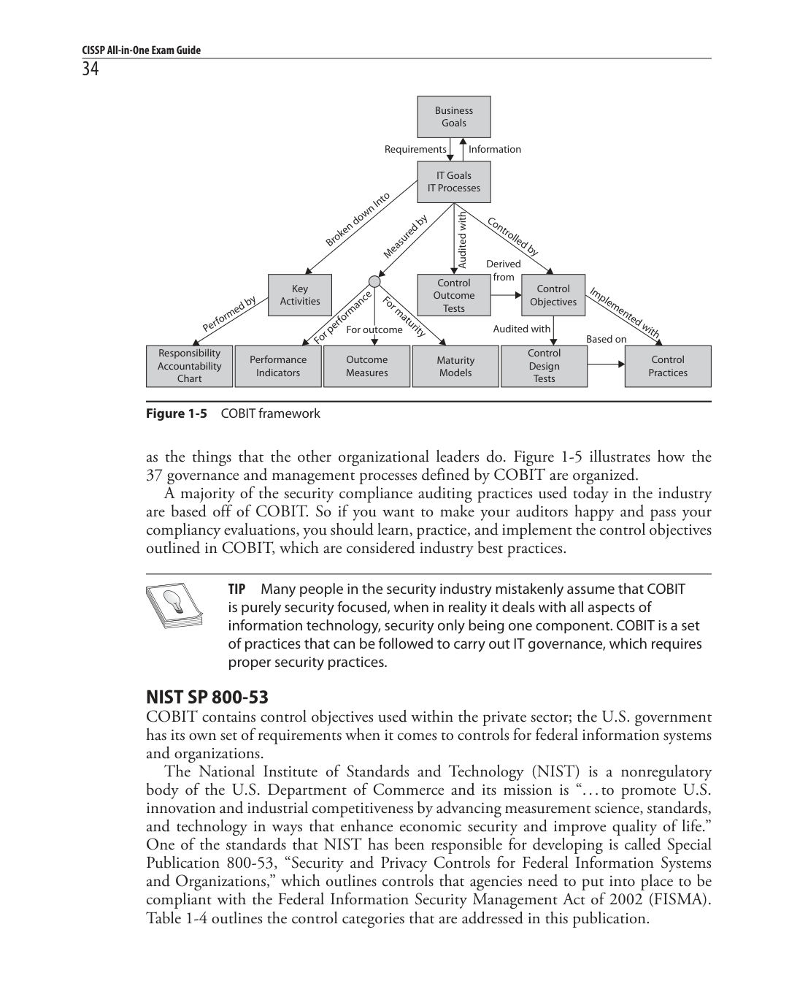
Figure 1-5COBIT framework
as the things that the other organizational leaders do. Figure 1-5 illustrates how the 37 governance and management processes defined by COBIT are organized. A majority of the security compliance auditing practices used today in the industry are based off of COBIT. So if you want to make your auditors happy and pass your compliancy evaluations, you should learn, practice, and implement the control objectives outlined in COBIT, which are considered industry best practices.
Many people in the security industry mistakenly assume that COBIT is purely security focused, when in reality it deals with all aspects of information technology, security only being one component. COBIT is a set of practices that can be followed to carry out IT governance, which requires proper security practices.
NIST SP 800-53
COBIT contains control objectives used within the private sector; the U.S. government has its own set of requirements when it comes to controls for federal information systems and organizations. The National Institute of Standards and Technology (NIST) is a nonregulatory body of the U.S. Department of Commerce and its mission is “...to promote U.S. innovation and industrial competitiveness by advancing measurement science, standards, and technology in ways that enhance economic security and improve quality of life.” One of the standards that NIST has been responsible for developing is called Special Publication 800-53, “Security and Privacy Controls for Federal Information Systems and Organizations,” which outlines controls that agencies need to put into place to be compliant with the Federal Information Security Management Act of 2002 (FISMA). Table 1-4 outlines the control categories that are addressed in this publication.
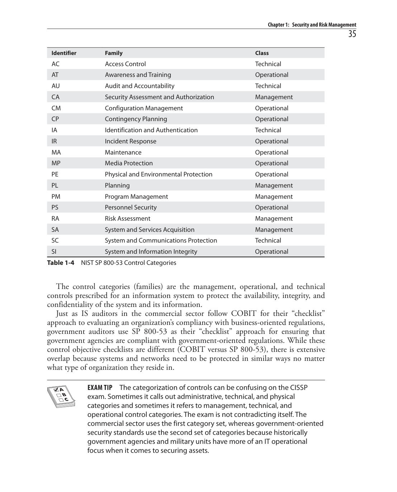
ACAccess ControlTechnical
The control categories (families) are the management, operational, and technical controls prescribed for an information system to protect the availability, integrity, and confidentiality of the system and its information. Just as IS auditors in the commercial sector follow COBIT for their “checklist” approach to evaluating an organization’s compliancy with business-oriented regulations, government auditors use SP 800-53 as their “checklist” approach for ensuring that government agencies are compliant with government-oriented regulations. While these control objective checklists are different (COBIT versus SP 800-53), there is extensive overlap because systems and networks need to be protected in similar ways no matter what type of organization they reside in.
The categorization of controls can be confusing on the CISSP exam. Sometimes it calls out administrative, technical, and physical categories and sometimes it refers to management, technical, and operational control categories. The exam is not contradicting itself. The commercial sector uses the first category set, whereas government-oriented security standards use the second set of categories because historically government agencies and military units have more of an IT operational focus when it comes to securing assets.
COSO Internal Control—Integrated Framework
COBIT was derived from the COSOInternal Control—Integrated Framework, developed by the Committee of Sponsoring Organizations (COSO) that sponsored the Treadway Commission in 1985 to deal with fraudulent financial activities and reporting. The COSO IC framework, first released in 1992 and last updated in 2013, identifies 17 internal control principles that are grouped into five internal control components as listed here.
Control Environment: 1.Demonstrates commitment to integrity and ethical values 2.Exercises oversight responsibilities 3.Establishes structure, authority, and responsibility 4.Demonstrates commitment to competence 5.Enforces accountability
Risk Assessment: 6.Specifies suitable objectives 7.Identifies and analyzes risk 8.Assesses fraud risk 9.Identifies and analyzes significant change
Control Activities: 10.Selects and develops control activities 11.Selects and develops general controls over technology 12.Deploys through policies and procedures
Information and Communication: 13.Uses relevant, quality information 14.Communicates internally 15.Communicates externally
Monitoring Activities: 16.Conducts ongoing and/or separate evaluations 17.Evaluates and communicates deficiencies
The COSO IC framework is a model forcorporategovernance, and COBIT is a model forITgovernance. COSO IC deals more at the strategic level, while COBIT focuses more at the operational level. You can think of COBIT as a way to meet many of the COSO
objectives, but only from the IT perspective. COSO IC deals with non-IT items also, as in company culture, financial accounting principles, board of director responsibility, and internal communication structures. COSO IC was formed to provide sponsorship for the National Commission on Fraudulent Financial Reporting, an organization that studied deceptive financial reports and what elements lead to them. There have been laws in place since the 1970s that basically state that it is illegal for a corporation to “cook its books” (manipulate its revenue and earnings reports), but it took the Sarbanes–Oxley Act (SOX) of 2002 to really put teeth into those existing laws. SOX is a U.S. federal law that, among other things, could send executives to jail if it was discovered that their company was submitting fraudulent accounting findings to the U.S. Securities and Exchange Commission (SEC). SOX is based upon the COSO model, so for a corporation to be compliant with SOX, it has to follow the COSO model. Companies commonly implement ISO/IEC 27000 standards and COBIT to help construct and maintain their internal COSO structure.
The CISSP exam does not cover specific laws, as in FISMA and SOX, but it does cover the security control model frameworks, as in ISO/IEC 27000 series standards, COBIT, and COSO.
Process Management Development
Along with ensuring that we have the proper controls in place, we also want to have ways to construct and improve our business, IT, and security processes in a structured and controlled manner. The security controls can be considered the “things,” and processes are how we use these things. We want to use them properly, effectively, and efficiently.
ITIL
ITIL (formerly theInformation Technology Infrastructure Library) was developed in the 1980s by the UK’s Central Computer and Telecommunications Agency (which was subsumed in the late 1990s by the Office of Government Commerce or OGC). It is now controlled by Axelos, which is a joint venture between the government of the UK and the private firm Capita. ITIL is the de facto standard of best practices for IT service management. ITIL was created because of the increased dependence on information technology to meet business needs. Unfortunately, as previously discussed, a natural divide exists between business people and IT people in most organizations because they use different terminology and have different focuses within the organization. The lack of a common language and understanding of each other’s domain (business versus IT) has caused many companies to ineffectively blend their business objectives and IT functions. This improper blending usually generates confusion, miscommunication, missed deadlines, missed opportunities, increased cost in time and labor, and frustration on both the business and technical sides of the house. ITIL is a customizable framework that is provided either in a set of books or in an online format. It provides the goals, the general activities necessary to achieve these goals, and the input and output values for each process required to meet these determined goals. Although ITIL has a component that deals with security, its focus is more toward internal SLAs between the IT department
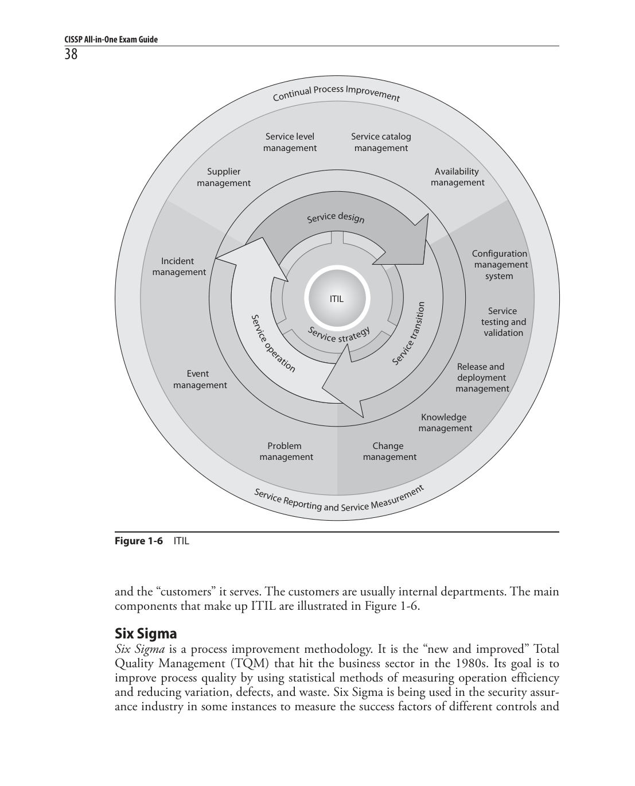
Figure 1-6ITIL
and the “customers” it serves. The customers are usually internal departments. The main components that make up ITIL are illustrated in Figure 1-6.
Six Sigma
Six Sigmais a process improvement methodology. It is the “new and improved” Total Quality Management (TQM) that hit the business sector in the 1980s. Its goal is to improve process quality by using statistical methods of measuring operation efficiency and reducing variation, defects, and waste. Six Sigma is being used in the security assurance industry in some instances to measure the success factors of different controls and
procedures. Six Sigma was developed by Motorola with the goal of identifying and removing defects in its manufacturing processes. The maturity of a process is described by a sigma rating, which indicates the percentage of defects that the process contains. While it started in manufacturing, Six Sigma has been applied to many types of business functions, including information security and assurance.
Capability Maturity Model Integration
Capability Maturity Model Integration (CMMI)was developed by Carnegie Mellon University for the U.S. Department of Defense as a way to determine the maturity of an organization’s processes. We will cover it more in depth from that point of view in Chapter 8, but this model is also used within organizations to help lay out a pathway of how incremental improvement can take place. While we know that we constantly need to make our security program better, it is not always easy to accomplish because “better” is a vague and nonquantifiable concept. The only way we can really improve is to know where we are starting from, where we need to go, and the steps we need to take in between. Every security program has a maturity level, which is illustrated in Figure 1-7. Each maturity level within this CMMI model represents an evolutionary stage. Some security programs are chaotic, ad hoc, unpredictable, and
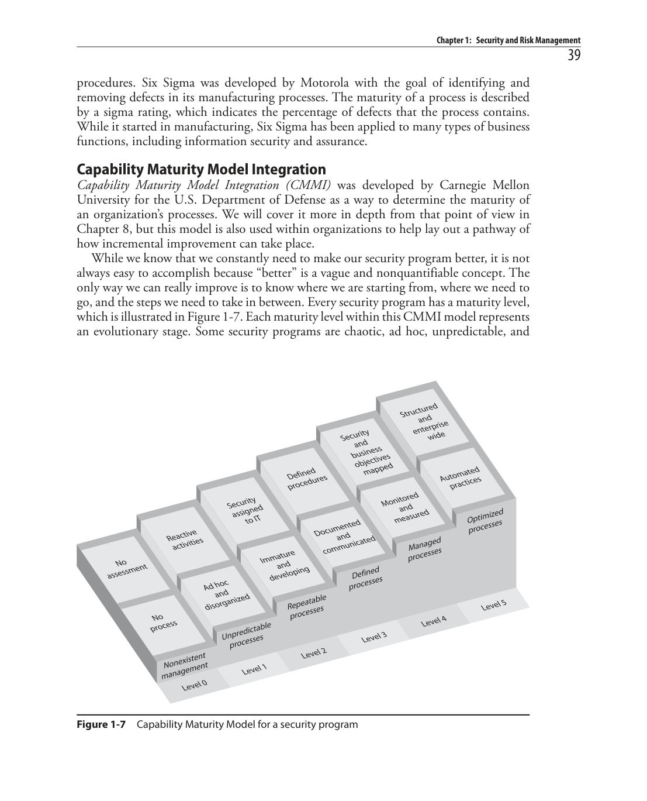
Figure 1-7Capability Maturity Model for a security program
usually insecure. Some security programs have documentation created, but the actual processes are not taking place. Some security programs are quite evolved, streamlined, efficient, and effective.
The CISSP exam puts more emphasis on CMMI compared to ITIL and Six Sigma because it is more heavily used in the security industry.
Security Program Development
No organization is going to put all the previously listed items (ISO/IEC 27000, COSO IC, Zachman Framework, SABSA, COBIT, NIST SP 800-53, ITIL, Six Sigma, CMMI) in place. But it is a good toolbox of things you can pull from, and you will find some fit the organization you work in better than others. You will also find that as your organization’s security program matures, you will see more clearly where these various standards, frameworks, and management components come into play. While these items are separate and distinct, there are basic things that need to be built in for any security program and its corresponding controls. This is because the basic tenets of security are universal no matter if they are being deployed in a corporation, government agency, business, school, or nonprofit organization. Each entity is made up of people, processes, data, and technology and each of these things needs to be protected.
The crux of CMMI is to develop structured steps that can be followed so an organization can evolve from one level to the next and constantly improve its processes and security posture. A security program contains a lot of elements, and it is not fair to expect them all to be properly implemented within the first year of its existence. And some components, as in forensics capabilities, really cannot be put into place until some rudimentary pieces are established, as in incident management. So if we really want our baby to be able to run, we have to lay out ways that it can first learn to walk.
Top-down Approach
A security program should use a top-down approach, meaning that the initiation, support, and direction come from top management; work their way through middle management; and then reach staff members. In contrast, a bottom-up approach refers to a situation in which staff members (usually IT) try to develop a security program without getting proper management support and direction. A bottomup approach is commonly less effective, not broad enough to address all security risks, and doomed to fail. A top-down approach makes sure the people actually
responsible for protecting the company’s assets (senior management) are driving the program. Senior management are not only ultimately responsible for the protection of the organization, but also hold the purse strings for the necessary funding, have the authority to assign needed resources, and are the only ones who can ensure true enforcement of the stated security rules and policies. Management’s support is one of the most important pieces of a security program. A simple nod and a wink will not provide the amount of support required.
While the cores of these various security standards and frameworks are similar, it is important to understand that a security program has a life cycle that is always continuing, because it should be constantly evaluated and improved upon. The life cycle of any process can be described in different ways. We will use the following steps:
1.Plan and organize 2.Implement 3.Operate and maintain 4.Monitor and evaluate
Without setting up a life-cycle approach to a security program and the security management that maintains the program, an organization is doomed to treat security as merely another project. Anything treated as a project has a start and stop date, and at the stop date everyone disperses to other projects. Many organizations have had good intentions in their security program kickoffs, but do not implement the proper structure to ensure that security management is an ongoing and continually improving process. The result is a lot of starts and stops over the years and repetitive work that costs more than it should, with diminishing results. The main components of each phase are provided here.
Plan and Organize:
Establish management commitment.
- Establish oversight steering committee.
- Assess business drivers.
- Develop a threat profile on the organization.
- Carry out a risk assessment.
- Develop security architectures at business, data, application, and
- infrastructurelevels.
Identify solutions per architecture level.
- Obtain management approval to move forward.
- Implement:
Assign roles and responsibilities.
- Develop and implement security policies, procedures, standards, baselines, and
- guidelines.
Identify sensitive data at rest and in transit.
- Implement the following blueprints:
- Asset identification and management
- Risk management
- Vulnerability management
- Compliance
- Identity management and access control
- Change control
- Software development life cycle
- Business continuity planning
- Awareness and training
- Physical security
- Incident response
- Implement solutions (administrative, technical, physical) per blueprint.
- Develop auditing and monitoring solutions per blueprint.
- Establish goals, SLAs, and metrics per blueprint.
- Operate and Maintain:
Follow procedures to ensure all baselines are met in each implemented blueprint.
- Carry out internal and external audits.
- Carry out tasks outlined per blueprint.
- ManageSLAs per blueprint.
- Monitor and Evaluate:
Review logs, audit results, collected metric values, and SLAs per blueprint.
- Assess goal accomplishments per blueprint.
- Carry out quarterly meetings with steering committees.
- Develop improvement steps and integrate into the Plan and Organize phase.
- Many of the items mentioned in the previous list are covered throughout this book. This list was provided to show how all of these items can be rolled out in a sequential and controllable manner. Although the previously covered standards and frameworks are very helpful, they are also very high level. For example, if a standard simply states that an organization must secure its data, a great amount of work will be called for. This is where the security professional really rolls up her sleeves, by developing security blueprints.Blueprints are important tools to identify, develop, and design security requirements for specific business needs. These blueprints must be customized to fulfill the organization’s security requirements, which are based on its regulatory obligations, business drivers, and legal obligations. For example, let’s say Company Y has a data protection policy, and its security team has developed standards and procedures pertaining to the data protection strategy the company should follow. The blueprint will then get more granular and lay out the processes and components necessary to meet requirements outlined in the policy, standards, and requirements. This would include at least a diagram of the company network that illustrates:
Where the sensitive data resides within the network
- The network segments that the sensitive data transverses
- The different security solutions in place (VPN, TLS, PGP) that protect the
- sensitive data
Third-party connections where sensitive data is shared
- Security measures in place for third-party connections
- And more…
- The blueprints to be developed and followed depend upon the organization’s business needs. If Company Y uses identity management, there must be a blueprint outlining roles, registration management, authoritative source, identity repositories, single sign-on solutions, and so on. If Company Y does not use identity management, there is no need to build a blueprint for this. So the blueprint will lay out the security solutions, processes, and components the organization uses to match its security and business needs. These blueprints must be applied to the different business units within the organization. For example, the identity management practiced in each of the different departments should follow the crafted blueprint. Following these blueprints throughout the organization allows for standardization, easier metric gathering, and governance. Figure 1-8 illustrates where these blueprints come into play when developing a security program. To tie these pieces together, you can think of the ISO/IEC 27000 that works mainly at the policy level as adescriptionof the type of house you want to build (ranch style, five bedrooms, three baths). The security enterprise framework is thearchitecturelayout of the house (foundation, walls, ceilings). The blueprints are the detailed descriptions of specific components of the house (window types, security system, electrical system, plumbing). And the control objectives are the building specifications and codes that need
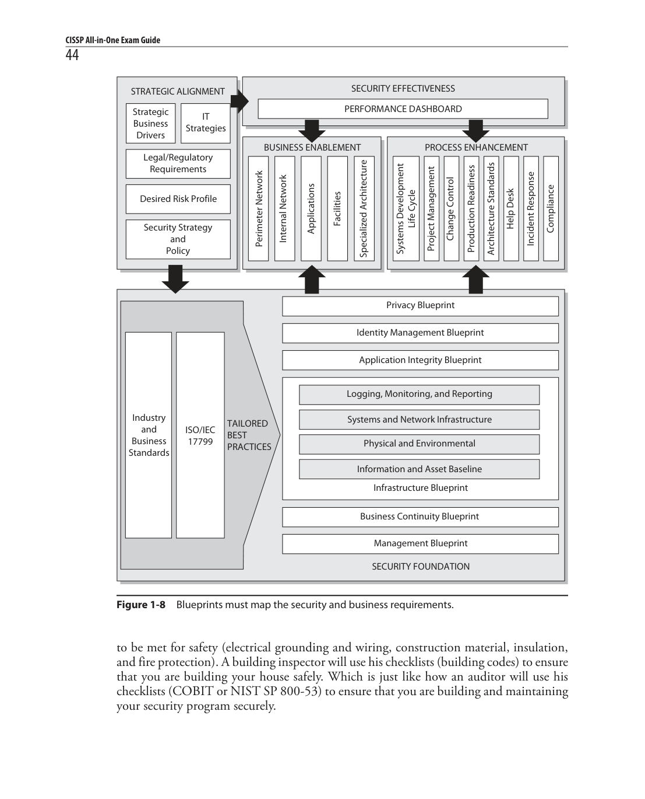
Figure 1-8Blueprints must map the security and business requirements.
to be met for safety (electrical grounding and wiring, construction material, insulation, and fire protection). A building inspector will use his checklists (building codes) to ensure that you are building your house safely. Which is just like how an auditor will use his checklists (COBIT or NIST SP 800-53) to ensure that you are building and maintaining your security program securely.
Once your house is built and your family moves in, you set up schedules and processes for everyday life to happen in a predictable and efficient manner (dad picks up kids from school, mom cooks dinner, teenager does laundry, dad pays the bills, everyone does yard work). This is analogous to ITIL—process management and improvement. If the family is made up of anal overachievers with the goal of optimizing these daily activities to be as efficient as possible, they could integrate a Six Sigma approach where continual process improvement is a focus.
Functionality vs. Security
Anyone who has been involved with a security initiative understands it involves a balancing act between securing an environment and still allowing the necessary level of functionality so that productivity is not affected. A common scenario that occurs at the start of many security projects is that the individuals in charge of the project know the end result they want to achieve and have lofty ideas of how quick and efficient their security rollout will be, but they fail to consult the users regarding what restrictions will be placed upon them. The users, upon hearing of the restrictions, then inform the project managers that they will not be able to fulfill certain parts of their job if the security rollout actually takes place as planned. This usually causes the project to screech to a halt. The project managers then must initialize the proper assessments, evaluations, and planning to see how the environment can be slowly secured and how to ease users and tasks delicately into new restrictions or ways of doing business. Failing to consult users or to fully understand business processes during the planning phase causes many headaches and wastes time and money. Individuals who are responsible for security management activities must realize they need to understand the environment and plan properly before kicking off the implementation phase of a security program.
The Crux of Computer Crime Laws
The models and frameworks that we have discussed in detail in the preceding sections exist because undesirable things happened and organizations wanted to keep them from happening again. It makes a lot of sense; if you have something in your own house that you don’t like, you figure out an effective and repeatable way to correct it. Sometimes, these undesirable things are so bad that they force society at large to enact laws that deter or punish those who would do them. This is where computer crime laws come into play. Sadly, these laws tend to lag years or even decades behind the adoption of the technologies that enable these crimes. Still, significant progress has been made by governments around the globe, as we describe in this section. Computer crime laws (sometimes referred to ascyberlaw) around the world deal with some of the core issues: unauthorized modification or destruction, disclosure of sensitive information, unauthorized access, and the use of malware (malicious software). Although we usually only think of the victims and their systems that were attacked during a crime, laws have been created to combat three categories of crimes. Acomputer-assisted crimeis where a computer was used as a tool to help carry out a crime. Acomputer-targeted crimeconcerns incidents where a computer was the victim of an attack crafted to harm it
(and its owners) specifically. The last type of crime is where a computer is not necessarily the attacker or the attackee, but just happened to be involved when a crime was carried out. This category is referred to ascomputer is incidental. Some examples of computer-assisted crimes are
Attacking financial systems to carry out theft of funds and/or
- sensitive information
Obtaining military and intelligence material by attacking military systems
- Carrying out industrial spying by attacking competitors and gathering
- confidential business data
Carrying out information warfare activities by attacking critical national
- infrastructure systems
Carrying out hacktivism, which is protesting a government’s or company’s
- activities by attacking its systems and/or defacing its website.
Some examples of computer-targeted crimes include
Distributed denial-of-service (DDoS) attacks
- Capturing passwords or other sensitive data
- Installing malware with the intent to cause destruction
- Installing rootkits and sniffers for malicious purposes
- Carrying out a buffer overflow to take control of a system
The main issues addressed in computer crime laws are unauthorized modification, disclosure, destruction, or access and inserting malicious programming code.
Some confusion typically exists between the two categories—computer-assisted crimes and computer-targeted crimes—because intuitively it would seem any attack would fall into both of these categories. One system is carrying out the attacking, while the other system is being attacked. The difference is that in computer-assisted crimes, the computer is only being used as a tool to carry out a traditional type of crime. Without computers, people still steal, cause destruction, protest against companies (for example, companies that carry out experiments upon animals), obtain competitor information, and go to war. So these crimes would take place anyway; it is just that the computer is simply one of the tools available to the evildoer. As such, it helps the evildoer become more efficient at carrying out a crime. Computer-assisted crimes are usually covered by regular criminal laws in that they are not always considered a “computer crime.” One way to look at it is that a computer-targetedcrime could not take place without a computer, whereas a computer-assistedcrime could. Thus, a computer-targeted crime is one that did not, and could not, exist before computers became of common use. In other words, in the good
old days, you could not carry out a buffer overflow on your neighbor or install malware on your enemy’s system. These crimes require that computers be involved. If a crime falls into the “computer is incidental” category, this means a computer just happened to be involved in some secondary manner, but its involvement is still significant. For example, if you had a friend who worked for a company that runs the state lottery and he gives you a printout of the next three winning numbers and you type them into your computer, your computer is just the storage place. You could have just kept the piece of paper and not put the data in a computer. Another example is child pornography. The actual crime is obtaining and sharing child pornography pictures or graphics. The pictures could be stored on a file server or they could be kept in a physical file in someone’s desk. So if a crime falls within this category, the computer is not attacking another computer and a computer is not being attacked, but the computer is still used in some significant manner. You may say, “So what? A crime is a crime. Why break it down into these types of categories?” The reason these types of categories are created is to allow current laws to apply to these types of crimes, even though they are in the digital world. Let’s say someone is on your computer just looking around, not causing any damage, but she should not be there. Should the legislation have to create a new law stating, “Thou shall not browse around in someone else’s computer,” or should we just use the already created trespassing law? What if a hacker got into a system that made all of the traffic lights turn green at the exact same time? Should the government go through the hassle of creating a new law for this type of activity, or should the courts use the already created (and understood) manslaughter and murder laws? Remember, a crime is a crime, and a computer is just a new tool to carry out traditional criminal activities. Now, this in no way means countries can just depend upon the laws on the books and that every computer crime can be countered by an existing law. Many countries have had to come up with new laws that deal specifically with different types of computer crimes. For example, the following are justsomeof the laws that have been created or modified in the United States to cover the various types of computer crimes:
18 USC 1029: Fraud and Related Activity in Connection with Access Devices
- 18 USC 1030: Fraud and Related Activity in Connection with Computers
- 18 USC 2510 et seq.: Wire and Electronic Communications Interception and
- Interception of Oral Communications
18 USC 2701 et seq.: Stored Wire and Electronic Communications and
- Transactional Records Access
Digital Millennium Copyright Act
- Cyber Security Enhancement Act of 2002
You do not need to know these laws for the CISSP exam; they are just examples.
Complexities in Cybercrime
Since we have a bunch of laws to get the digital bad guys, this means we have this whole cybercrime thing under control, right? Alas, hacking, cracking, and attacking have only increased over the years and will not stop anytime soon. Several issues deal with why these activities have not been properly stopped or even curbed. These include proper identification of the attackers, the necessary level of protection for networks, and successful prosecution once an attacker is captured. Most attackers are never caught because they spoof their addresses and identities and use methods to cover their footsteps. Many attackers break into networks, take whatever resources they were after, and clean the logs that tracked their movements and activities. Because of this, many companies do not even know they have been violated. Even if an attacker’s activities trigger an intrusion detection system (IDS) alert, it does not usually find the true identity of the individual, though it does alert the company that a specific vulnerability was exploited. Attackers commonly hop through several systems before attacking their victim so that tracking them down will be more difficult. Many of these criminals use innocent people’s computers to carry out the crimes for them. The attacker will install malicious software on a computer using many types of methods: e-mail attachments, a user downloading a Trojan horse from a website, exploiting a vulnerability, and so on. Once the software is loaded, it stays dormant until the attacker tells it what systems to attack and when. These compromised systems are calledzombies, the software installed on them are called bots, and when an attacker has several compromised systems, this is known as abotnet. The botnet can be used to carry out DDoS attacks, transfer spam or pornography, or do whatever the attacker programs the bot software to do. Within the United States, local law enforcement departments, the FBI, and the Secret Service are called upon to investigate a range of computer crimes. Although each of these entities works to train its people to identify and track computer criminals, collectively they are very far behind the times in their skills and tools, and are outnumbered by the number of hackers actively attacking networks. Because the attackers use tools that are automated, they can perform several serious attacks in a short timeframe. When law enforcement is called in, its efforts are usually more manual—checking logs, interviewing people, investigating hard drives, scanning for vulnerabilities, and setting up traps in case the attacker comes back. Each agency can spare only a small number of people for computer crimes, and generally they are behind in their expertise compared to many hackers. Because of this, most attackers are never found, much less prosecuted. Really only a handful of laws deal specifically with computer crimes, making it more challenging to successfully prosecute the attackers who are caught. Many companies that are victims of an attack usually just want to ensure that the vulnerability the attacker exploited is fixed, instead of spending the time and money to go after and prosecute the attacker. (Most common business concerns pertaining to breaches are shown in Figure1-9.) This is a huge contributing factor as to why cybercriminals get away with their activities. Some regulated organizations—for instance, financial institutions—by law, must report breaches. However, most organizations do not have to report breaches or computer crimes. No company wants its dirty laundry out in
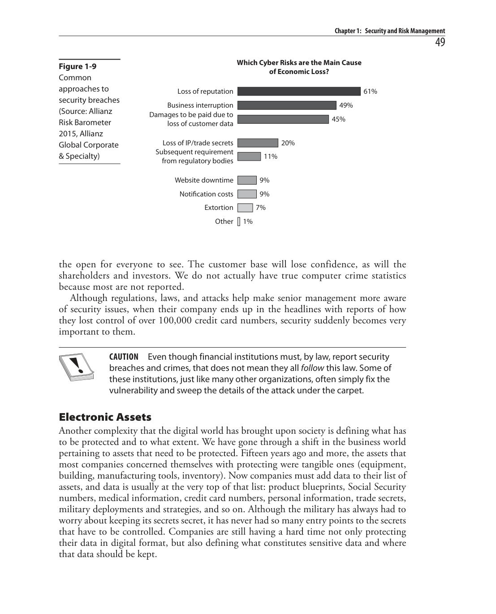
Figure 1-9
the open for everyone to see. The customer base will lose confidence, as will the shareholders and investors. We do not actually have true computer crime statistics because most are not reported. Although regulations, laws, and attacks help make senior management more aware of security issues, when their company ends up in the headlines with reports of how they lost control of over 100,000 credit card numbers, security suddenly becomes very important to them.
Even though financial institutions must, by law, report security breaches and crimes, that does not mean they allfollowthis law. Some of these institutions, just like many other organizations, often simply fix the vulnerability and sweep the details of the attack under the carpet.
Electronic Assets
Another complexity that the digital world has brought upon society is defining what has to be protected and to what extent. We have gone through a shift in the business world pertaining to assets that need to be protected. Fifteen years ago and more, the assets that most companies concerned themselves with protecting were tangible ones (equipment, building, manufacturing tools, inventory). Now companies must add data to their list of assets, and data is usually at the very top of that list: product blueprints, Social Security numbers, medical information, credit card numbers, personal information, trade secrets, military deployments and strategies, and so on. Although the military has always had to worry about keeping its secrets secret, it has never had so many entry points to the secrets that have to be controlled. Companies are still having a hard time not only protecting their data in digital format, but also defining what constitutes sensitive data and where that data should be kept.
In many countries, to deal more effectively with computer crime, legislative bodies have broadened the definition of property to include data.
As many companies have discovered, protecting intangible assets (for example, data and reputation) is much more difficult than protecting tangible assets.
The Evolution of Attacks
Perpetrators of cybercrime have evolved from bored teenagers with too much time on their hands to organized crime rings with very defined targets and goals. A few decades ago, hackers were mainly made up of people who just enjoyed the thrill of hacking. It was seen as a challenging game without any real intent of harm. Hackers used to take down large websites (Yahoo!, MSN, Excite) so their activities made the headlines and they won bragging rights among their fellow hackers. Back then, virus writers created viruses that simply replicated or carried out some benign activity, instead of the more malicious actions they could have carried out. Unfortunately, today, these trends have taken on more sinister objectives. Although we still have script kiddies and people who are just hacking for the fun of it, organized criminals have appeared on the scene and really turned up the heat regarding the amount of damage done. In the past, script kiddies would scan thousands and thousands of systems looking for a specific vulnerability so they could exploit it. It did not matter if the system was on a company network, a government system, or a home user system. The attacker just wanted to exploit the vulnerability and “play” on the system and network from there. Today’s attackers are not so noisy, however, and they certainly don’t want any attention drawn to themselves. These organized criminals are after specific targets for specific reasons, usually profit oriented. They try and stay under the radar and capture credit card numbers, Social Security numbers, and personal information to carry out fraud and identity theft. Figure 1-10 shows how cybercriminals use compromised computers.
Script kiddiesare hackers who do not necessarily have the skill to carry out specific attacks without the tools provided for them on the Internet and through friends. Since these people do not necessarily understand how the attacks are actually carried out, they most likely do not understand the extent of damage they can cause. Many times hackers are just scanning systems looking for a vulnerable running service or sending out malicious links in e-mails to unsuspecting victims. They are just looking for any way to get into any network. This would be the shotgun approach to network attacks. Another, more dangerous attacker has you in his crosshairs and he is determined to identify your weakest point and do with you what he will.
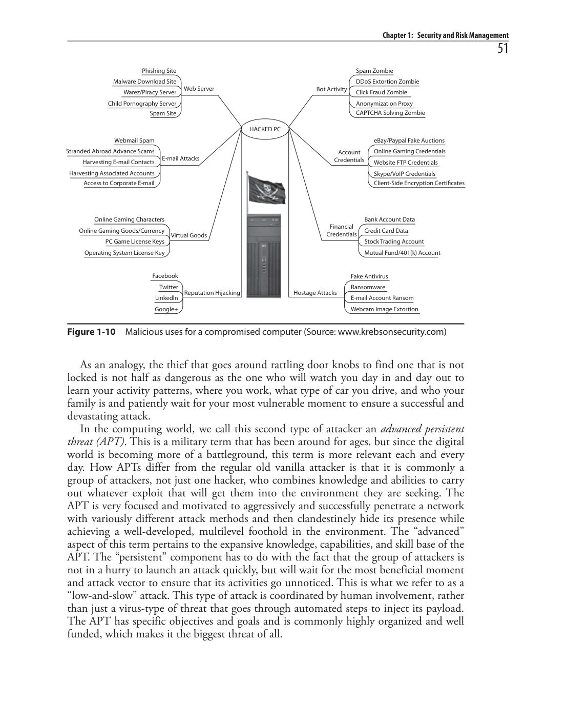
Figure 1-10Malicious uses for a compromised computer (Source: www.krebsonsecurity.com)
As an analogy, the thief that goes around rattling door knobs to find one that is not locked is not half as dangerous as the one who will watch you day in and day out to learn your activity patterns, where you work, what type of car you drive, and who your family is and patiently wait for your most vulnerable moment to ensure a successful and devastating attack. In the computing world, we call this second type of attacker anadvanced persistent threat (APT). This is a military term that has been around for ages, but since the digital world is becoming more of a battleground, this term is more relevant each and every day. How APTs differ from the regular old vanilla attacker is that it is commonly a group of attackers, not just one hacker, who combines knowledge and abilities to carry out whatever exploit that will get them into the environment they are seeking. The APT is very focused and motivated to aggressively and successfully penetrate a network with variously different attack methods and then clandestinely hide its presence while achieving a well-developed, multilevel foothold in the environment. The “advanced” aspect of this term pertains to the expansive knowledge, capabilities, and skill base of the APT. The “persistent” component has to do with the fact that the group of attackers is not in a hurry to launch an attack quickly, but will wait for the most beneficial moment and attack vector to ensure that its activities go unnoticed. This is what we refer to as a “low-and-slow” attack. This type of attack is coordinated by human involvement, rather than just a virus-type of threat that goes through automated steps to inject its payload. The APT has specific objectives and goals and is commonly highly organized and well funded, which makes it the biggest threat of all.
An APT is commonly custom-developed malicious code that is built specifically for its target, has multiple ways of hiding itself once it infiltrates the environment, may be able to polymorph itself in replication capabilities, and has several different “anchors” so eradicating it is difficult if it is discovered. Once the code is installed, it commonly sets up a covert back channel (as regular bots do) so that it can be remotely controlled by the group of attackers. The remote control functionality allows the attackers to transverse the network with the goal of gaining continuous access to critical assets. APT infiltrations are usually very hard to detect with host-based solutions because the attackers put the code through a barrage of tests against the most up-to-date detection applications on the market. A common way to detect these types of threats is through network traffic changes. When there is a new Internet Relay Chat (IRC) connection from a host, that is a good indication that the system has a bot communicating to its command center. Since several technologies are used in environments today to detect just that type of traffic, the APT may have multiple control centers to communicate with so that if one connection gets detected and removed, the APT still has an active channel to use. The APT may implement some type of VPN connection so that its data that is in transmission cannot be inspected. Figure 1-11 illustrates the common steps and results of APT activity. The ways of getting into a network are basically endless (exploit a web service, induce users to open e-mail links and attachments, gain access through remote maintenance accounts,exploitoperatingsystemsandapplicationvulnerabilities,compromise connections from home users, etc.). Each of these vulnerabilities has its own fixes (patches, proper configuration, awareness, proper credential practices, encryption, etc.). It is not only these fixes that need to be put in place; we need to move to a more effective
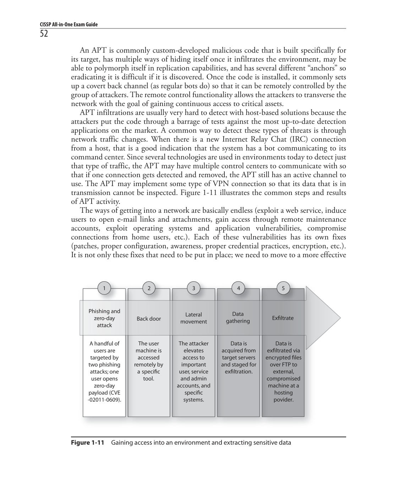
Figure 1-11Gaining access into an environment and extracting sensitive data
situational awareness model. We need to have better capabilities of knowing what is happening throughout our network in near to real time so that our defenses can react quickly and precisely. Our battlefield landscape is changing from “smash-and-grab” attacks to “slow-anddetermined” attacks. Just like military offensive practices evolve and morph as the target does the same, so must we as an industry. We have already seen a decrease in the amount of viruses created just to populate as many systems as possible, and it is predicted that this benign malware activity will continue to decrease, while more dangerous malware increases. This more dangerous malware has more focused targets and more powerful payloads—usually installing back doors, bots, and/or loading rootkits.
Common Internet Crime Schemes
Auction fraud
- Counterfeit cashier’s check
- Debt elimination
- Parcel courier e-mail scheme
- Employment/business opportunities
- Escrow services fraud
- Investment fraud
- Lotteries
- Nigerian letter, or “419”
- Ponzi/pyramid
- Reshipping
- Third-party receiver of funds
- Find out how these types of computer crimes are carried out by visiting www.ic3 .gov/crimeschemes.aspx.
So while the sophistication of the attacks continues to increase, so does the danger of these attacks. Isn’t that just peachy? Up until now, we have listed some difficulties of fighting cybercrime: the anonymity the Internet provides the attacker; attackers are organizing and carrying out more sophisticated attacks; the legal system is running to catch up with these types of crimes; and companies are just now viewing their data as something that must be protected. All these complexities aid the bad guys, but what if we throw in the complexity of attacks taking place between different countries?
Do You Trust Your Neighbor?
Most organizations do not like to think about the fact that the enemy might be inside and working internally to the company. It is more natural to view threats as the faceless unknowns that reside on the outside of our environment. Employees have direct and privileged access to a company’s assets, and they are commonly not as highly monitored compared to traffic that is entering the network from external entities. The combination of too much trust, direct access, and the lack of monitoring allows for a lot of internal fraud and abuse to go unnoticed. There have been many criminal cases over the years where employees at various companies have carried out embezzlement or have carried out revenge attacks after they were fired or laid off. While it is important to have fortified walls to protect us from the outside forces that want to cause us harm, it is also important to realize that our underbelly is more vulnerable. Employees, contractors, and temporary workers who have direct access to critical resources introduce risks that need to be understood and countermeasured.
International Issues
If a hacker in Ukraine attacked a bank in France, whose legal jurisdiction is that? How do these countries work together to identify the criminal and carry out justice? Which country is required to track down the criminal? And which country should take this person to court? Well, we don’t really know exactly. We are still working this stuff out. When computer crime crosses international boundaries, the complexity of such issues shoots up considerably and the chances of the criminal being brought to any court decreases. This is because different countries have different legal systems, some countries have no laws pertaining to computer crime, jurisdiction disputes may erupt, and some governments may not want to play nice with each other. For example, if someone in Iran attacked a system in Israel, do you think the Iranian government would help Israel track down the attacker? What if someone in North Korea attacked a military system in the United States? Do you think these two countries would work together to find the hacker? Maybe or maybe not—or perhaps the attack was carried out by their specific government. There have been efforts to standardize the different countries’ approaches to computer crimes because they happen so easily over international boundaries. Although it is very easy for an attacker in China to send packets through the Internet to a bank in Saudi Arabia, it is very difficult (because of legal systems, cultures, and politics) to motivate these governments to work together. TheCouncil of Europe (CoE) Convention on Cybercrimeis one example of an attempt to create a standard international response to cybercrime. In fact, it is the first international treaty seeking to address computer crimes by coordinating national laws and improving investigative techniques and international cooperation. The convention’s objectives include the creation of a framework for establishing jurisdiction and extradition of the
accused. For example, extradition can only take place when the event is a crime in both jurisdictions. Many companies communicate internationally every day through e-mail, telephone lines, satellites, fiber cables, and long-distance wireless transmission. It is important for a company to research the laws of different countries pertaining to information flow and privacy. Global organizations that move data across other country boundaries must be aware of and follow the Organisation for Economic Co-operation and Development (OECD) Guidelines on the Protection of Privacy and Transborder Flows of Personal Data. Since most countries have a different set of laws pertaining to the definition of private data and how it should be protected, international trade and business get more convoluted and can negatively affect the economy of nations. The OECD is an international organization that helps different governments come together and tackle the economic, social, and governance challenges of a globalized economy. Because of this, the OECD came up with guidelines for the various countries to follow so that data is properly protected and everyone follows the same type of rules. The core principles defined by the OECD are as follows:
Collection Limitation PrincipleCollection of personal data should be limited,
- obtained by lawful and fair means, and with the knowledge of the subject.
Data Quality PrinciplePersonal data should be kept complete and current,
- and be relevant to the purposes for which it is being used.
Purpose Specification PrincipleSubjects should be notified of the reason for
- the collection of their personal information at the time that it is collected, and organizations should only use it for that stated purpose.
Use Limitation PrincipleOnly with the consent of the subject or by the
- authority of law should personal data be disclosed, made available, or used for purposes other than those previously stated.
Security Safeguards PrincipleReasonable safeguards should be put in place to
- protect personal data against risks such as loss, unauthorized access, modification, and disclosure.
Openness PrincipleDevelopments, practices, and policies regarding personal
- data should be openly communicated. In addition, subjects should be able to easily establish the existence and nature of personal data, its use, and the identity and usual residence of the organization in possession of that data.
Individual Participation PrincipleSubjects should be able to find out whether
- an organization has their personal information and what that information is, to correct erroneous data, and to challenge denied requests to do so.
Accountability PrincipleOrganizations should be accountable for complying
- with measures that support the previous principles.
Information on OECD Guidelines can be found at www.oecd.org/sti /ieconomy/oecdguidelinesontheprotectionofprivacyandtransborderflows ofpersonaldata.htm.
Although the OECD is a great start, we still have a long way to go to standardize how cybercrime is dealt with internationally. Organizations that are not aware of and/or do not follow these types of rules and guidelines can be fined and found criminally negligent, their business can be disrupted, or they can go out of business. If your company is expecting to expand globally, it would be wise to have legal counsel that understands these types of issues so this type of trouble does not find its way to your company’s doorstep. The European Union (EU) in many cases takes individual privacy much more seriously than most other countries in the world, so the EU has strict laws pertaining to data that is considered private, which are based on theEuropean Union Principles on Privacy. This set of principles addresses using and transmitting information considered private in nature. The principles and how they are to be followed are encompassed within the EU’sData Protection Directive. All states in Europe must abide by these principles to be in compliance, and any company that wants to do business with an EU company must comply with this directive if the business will include exchanging privacy type of data. A construct that outlines how U.S.-based companies can comply with the EU privacy principles has been developed, which is called the Safe Harbor Privacy Principles. If a non-European organization wants to do business with a European entity, it will need to adhere to theSafe Harborrequirements if certain types of data will be passed back and forth during business processes. Europe has always had tighter control over protecting privacy information than the United States and other parts of the world. So in the past when U.S. and European companies needed to exchange data, confusion erupted and business was interrupted because the lawyers had to get involved to figure out how to work within the structures of the differing laws. To clear up this mess, a “safe harbor” framework was created, which outlines how any entity that is going to move privacy data to and from Europe must go about protecting it. U.S. companies that deal with European entities can become certified against this rule base so data transfer can happen more quickly and easily. The privacy data protection rules that must be met to be considered “Safe Harbor” compliant are listed here:
The European Union Court of Justice ruled in early October 2015 that the Safe Harbor pact violates privacy because U.S. intelligence services could get their hands on European citizens’ data. As of this writing, the EU and United States were renegotiating a pact that would satisfy the courts.
NoticeIndividuals must be informed that their data is being collected and
- about how it will be used.
ChoiceIndividuals must have the ability to opt out of the collection and
- forward transfer of the data to third parties.
Onward TransferTransfers of data to third parties may only occur to other
- organizations that follow adequate data protection principles.
SecurityReasonable efforts must be made to prevent loss of collected information.
- Data IntegrityData must be relevant and reliable for the purpose it was
- collected for.
AccessIndividuals must be able to access information held about them and
- correct or delete it if it is inaccurate.
EnforcementThere must be effective means of enforcing these rules.
Import/Export Legal Requirements
Another complexity that comes into play when an organization is attempting to work with organizations in other parts of the world is import and export laws. Each country has its own specifications when it comes to what is allowed in its borders and what is allowed out. For example, theWassenaar Arrangementimplements export controls for “Conventional Arms and Dual-Use Goods and Technologies.” It is currently made up of 41 countries and lays out rules on how the following items can be exported from country to country:
Category 1Special Materials and Related Equipment
- Category 2Materials Processing
- Category 3Electronics
- Category 4Computers
- Category 5Part 1: Telecommunications
- Category 5Part 2: Information Security
- Category 6Sensors and Lasers
- Category 7Navigation and Avionics
- Category 8Marine
- Category 9Aerospace and Propulsion
- The main goal of this arrangement is to prevent the buildup of military capabilities that could threaten regional and international security and stability. So everyone is keeping an eye on each other to make sure no one country’s weapons can take everyone else out. The idea is to try and make sure everyone has similar military offense and defense capabilities with the hope that we won’t end up blowing each other up. One item the agreement deals with is cryptography, which is seen as a dual-use good. It can be used for military and civilian uses. It is seen to be dangerous to export products with cryptographic functionality to countries that are in the “offensive” column, meaning that they are thought to have friendly ties with terrorist organizations and/or want to take over the world through the use of weapons of mass destruction. If the “good” countries allow the “bad” countries to use cryptography, then the “good” countries cannot snoop and keep tabs on what the “bad” countries are up to. The specifications of the Wassenaar Arrangement are complex and always changing. The countries that fall within the “good” and “bad” categories change and what can be exported to who and how changes. In some cases, no products that contain
cryptographic functions can be exported to a specific country, a different country could be allowed products with limited cryptographic functions, some countries require certain licenses to be granted, and then other countries (the “good” countries) have no restrictions. While the Wassenaar Arrangement deals mainly with the exportation of items, some countries (China, Russia, Iran, Iraq, etc.) have cryptographicimportrestrictions that have to be understood and followed. These countries do not allow their citizens to use cryptography because they follow the Big Brother approach to governing people. This obviously gets very complex for companies who sell products that use integrated cryptographic functionality. One version of the product may be sold to China if it has no cryptographic functionality. Another version may be sold to Russia if a certain international license is in place. A fully functioning product can be sold to Canada, because who are they ever going to hurt? It is important to understand the import and export requirements your company must meet when interacting with entities in other parts of the world. You could be breaking a country’s law or an international treaty if you do not get the right type of lawyers involved in the beginning and follow the approved processes.
Types of Legal Systems
As stated earlier, different countries often have different legal systems. In this section, we will cover the core components of these systems and what differentiates them.
Civil (Code) Law System
System of law used in continental European countries such as France and Spain.
- Different legal system from the common law system used in the United Kingdom
- and United States.
Civil law system is rule-based law not precedence based.
- For the most part, a civil law system is focused on codified law—or written laws.
- The history of the civil law system dates to the sixth century when the Byzantine
- emperor Justinian codified the laws of Rome.
Civillegal systemsshould not be confused with the civil (or tort)lawsfound in the
- United States.
The civil legal system was established by states or nations for self-regulation; thus,
- the civil law system can be divided into subdivisions, such as French civil law, German civil law, and so on.
It is the most widespread legal system in the world and the most common legal
- system in Europe.
Under the civil legal system, lower courts are not compelled to follow the
- decisions made by higher courts.
Common Law System
Developed in England.
- Based on previous interpretations of laws:
- In the past, judges would walk throughout the country enforcing laws and
- settling disputes. They did not have a written set of laws, so they based their laws on custom
- and precedent. In the 12th century, the king of England (Henry II) imposed a unified legal
- system that was “common” to the entire country. Reflects the community’s morals and expectations.
- Led to the creation of barristers, or lawyers, who actively participate in the
- litigation process through the presentation of evidence and arguments. Today, the common law system uses judges and juries of peers. If the jury trial is
- waived, the judge decides the facts. Typical systems consist of a higher court, several intermediate appellate courts,
- and many local trial courts. Precedent flows down through this system. Tradition also allows for “magistrate’s courts,” which address administrative decisions. The common law system is broken down into criminal, civil/tort, and
- administrative.
Criminal:
Based on common law, statutory law, or a combination of both.
- Addresses behavior that is considered harmful to society.
- Punishment usually involves a loss of freedom, such as incarceration, or monetary
- fines. Responsibility is on the prosecution to prove guilt beyond a reasonable doubt
- (innocent until proven guilty).
Civil/tort:
Offshoot of criminal law.
- Under civil law, the defendant owes a legal duty to the victim. In other words, the
- defendant is obligated to conform to a particular standard of conduct, usually set by what a “reasonable man of ordinary prudence” would do to prevent foreseeable injury to the victim. The defendant’s breach of that duty causes injury to the victim; usually physical
- or financial.
Categories of civil law:
- IntentionalExamples include assault, intentional infliction of emotional
- distress, or false imprisonment.
Wrongs against propertyAn example is nuisance against landowner.
- Wrongs against a personExamples include car accidents, dog bites, and a
- slip and fall.
NegligenceAn example is wrongful death.
- NuisanceAn example is trespassing.
- Dignitary wrongsInclude invasion of privacy and civil rights violations.
- Economic wrongsExamples include patent, copyright, and trademark
- infringement.
Strict liabilityExamples include a failure to warn of risks and defects in
- product manufacturing or design.
Administrative (regulatory):
Laws and legal principles created by administrative agencies to address a number
- of areas, including international trade, manufacturing, environment, and immigration.
Customary Law System
Deals mainly with personal conduct and patterns of behavior.
- Based on traditions and customs of the region.
- Emerged when cooperation of individuals became necessary as communities
- merged.
Not many countries work under a purely customary law system, but instead use
- a mixed system where customary law is an integrated component. (Codified civil law systems emerged from customary law.)
Mainly used in regions of the world that have mixed legal systems (for example,
- China and India).
Restitution is commonly in the form of a monetary fine or service.
- Religious Law System
Based on religious beliefs of the region.
- In Islamic countries, the law is based on the rules of the Koran.
- The law, however, is different in every Islamic country.
- Jurists and clerics have a high degree of authority.
- Cover all aspects of human life, but commonly divided into:
- Responsibilities and obligations to others.
- Religious duties.
- Knowledge and rules as revealed by God, which define and govern human affairs.
- Rather than create laws, lawmakers and scholars attempt to discover the truth of law.
- Law, in the religious sense, also includes codes of ethics and morality, which
- are upheld and required by God. For example, Hindu law, Sharia (Islamic law), Halakha (Jewish law), and so on.
Mixed Law System
Two or more legal systems are used together and apply cumulatively or interactively.
- Most often mixed law systems consist of civil and common law.
- A combination of systems is used as a result of more or less clearly defined fields
- of application.
Civil law may apply to certain types of crimes, while religious law may apply to
- other types within the same region.
Examples of mixed law systems include those in Holland, Canada, and SouthAfrica.
- These different legal systems are certainly complex, and while you are not expected to be a lawyer to pass the CISSP exam, having a high-level understanding of the different types (civil, common, customary, religious, mixed) is important. The exam will dig
Diagram (p. 95)
more into the specifics of the common law legal system and its components. Under the common law legal system,civil lawdeals with wrongs against individuals or companies that result in damages or loss. This is referred to astort law.Examples include trespassing, battery, negligence, and product liability. A successful civil lawsuit against a defendant would result in financial restitution and/or community service instead of a jail sentence. When someone sues another person in civil court, the jury decides uponliabilityinstead of innocence or guilt. If the jury determines the defendant is liable for the act, then the jury decides upon the compensatory and/or punitive damages of the case. Criminal lawis used when an individual’s conduct violates the government laws, which have been developed to protect the public. Jail sentences are commonly the punishment for criminal law cases that result in conviction, whereas in civil law cases the punishment is usually an amount of money that the liable individual must pay the victim. For example, in the O.J. Simpson case, the defendant was first tried and found not guilty in the criminal law case, but then was found liable in the civil law case. This seeming contradiction can happen because the burden of proof is lower in civil cases than in criminal cases.
Civil law generally is derived from common law (case law), cases are initiated by private parties, and the defendant is found liable or not liable for damages. Criminal law typically is statutory, cases are initiated by government prosecutors, and the defendant is found guilty or not guilty. Administrative/regulatory lawdeals with regulatory standards that regulate performance and conduct. Government agencies create these standards, which are usually applied to companies and individuals within those specific industries. Some examples of administrative laws could be that every building used for business must have a fire detection and suppression system, must have clearly visible exit signs, and cannot have blocked doors, in case of a fire. Companies that produce and package food and drug products are regulated by many standards so that the public is protected and aware of their actions. If an administrative law case determines that a company did not abide by specific regulatory standards, high officials in the company could even be held accountable. For example, if a company makes tires that shred after a couple of years of use because the company doesn’t comply with manufacturing safety standards, the officers in that company could be liable under administrative, civil, or even criminal law if they were aware of the issue but chose to ignore it to keep profits up.
Intellectual Property Laws
Intellectual property laws do not necessarily look at who is right or wrong, but rather how a company or individual can protect what it rightfully owns from unauthorized duplication or use, and what it can do if these laws are violated. A major issue in many intellectual property cases is what the company did to protect the resources it claims have been violated in one fashion or another. A company must implement safeguards to protect resources that it claims to be intellectual property
and must show that it exercised due care (reasonable acts of protection) in its efforts to protect those resources. For example, if an employee sends a file to a friend and the company terminates the employee based on the activity of illegally sharing intellectual property, then in a wrongful termination case brought by the employee, the company must show the court why this file is so important to the company, what type of damage could be or has been caused as a result of the file being shared, and, most important, what the company had done to protect that file. If the company did not secure the file and tell its employees that they were not allowed to copy and share that file, then the company will most likely lose the case. However, if the company implemented safeguards to protect that file and had an acceptable use policy in its employee manual that explained that copying and sharing the information within the file was prohibited and that the punishment for doing so could be termination, then the company could not be found liable of wrongfully terminating the employee. Intellectual property can be protected by several different laws, depending upon the type of resource it is. Intellectual property is divided into two categories: industrial property—suchasinventions(patents),industrialdesigns,andtrademarks—and copyrighted property, which covers things like literary and artistic works. These topics are addressed in depth in the following sections.
Trade Secret
Trade secret law protects certain types of information or resources from unauthorized use or disclosure. For a company to have its resource qualify as a trade secret, the resource must provide the company with some type of competitive value or advantage. A trade secret can be protected by law if developing it requires special skill, ingenuity, and/or expenditure of money and effort. This means that a company cannot say the sky is blue and call it a trade secret. Atrade secretis something that is proprietary to a company and important for its survival and profitability. An example of a trade secret is the formula used for a soft drink, such as Coke or Pepsi. The resource that is claimed to be a trade secret must be confidential and protected with certain security precautions and actions. A trade secret could also be a new form of mathematics, the source code of a program, a method of making the perfect jelly bean, or ingredients for a special secret sauce. A trade secret has no expiration date unless the information is no longer secret or no longer provides economic benefit to the company. Many companies require their employees to sign a nondisclosure agreement (NDA), confirming that they understand its contents and promise not to share the company’s trade secrets with competitors or any unauthorized individuals. Companies require this both to inform the employees of the importance of keeping certain information secret and to deter them from sharing this information. Having them sign the NDA also gives the company the right to fire the employee or bring charges if the employee discloses a trade secret. A low-level engineer working at Intel took trade secret information that was valued by Intel at $1 billion when he left his position at the company and went to work at his new employer, rival chipmaker Advanced Micro Devices (AMD). It was discovered that
this person still had access to Intel’s most confidential information even after starting work at AMD. He even used the laptop that Intel provided to him to download 13 critical documents that contained extensive information about the company’s new processor developments and product releases. Unfortunately, these stories are not rare, and companies are constantly dealing with challenges of protecting the very data that keeps them in business.
Copyright
In the United States,copyright lawprotects the right of the creator of an original work to control the public distribution, reproduction, display, and adaptation of that original work. The law covers many categories of work: pictorial, graphic, musical, dramatic, literary, pantomime, motion picture, sculptural, sound recording, and architectural. Copyright law does not cover the specific resource, as does trade secret law. It protects the expressionof the idea of the resource instead of the resource itself. A copyright is usually used to protect an author’s writings, an artist’s drawings, a programmer’s source code, or specific rhythms and structures of a musician’s creation. Computer programs and manuals are just two examples of items protected under the Federal Copyright Act. The program or manual is covered under copyright law once it has been written. Although including a warning and the copyright symbol (©) is not required, doing so is encouraged so others cannot claim innocence after copying another’s work. The protection does not extend to any method of operations, process, concept, or procedure, but it does protect against unauthorized copying and distribution of a protected work. It protects the form of expression rather than the subject matter. A patent deals more with the subject matter of an invention; copyright deals with how that invention is represented. In that respect, copyright is weaker than patent protection, but the duration of copyright protection is longer. People are provided copyright protection for life plus 50 years. Computer programs can be protected under the copyright law as literary works. The law protects both the source and object code, which can be an operating system, application, or database. In some instances, the law can protect not only the code, but also the structure, sequence, and organization. The user interface is part of the definition of a software application structure; therefore, one vendor cannot copy the exact composition of another vendor’s user interface. Copyright infringement cases have exploded in numbers since the rise of “warez” sites that use the common BitTorrent protocol. BitTorrent is a peer-to-peer file sharing protocol and is one of the most common protocols for transferring large files. Warez is a term that refers to copyrighted works distributed or traded without fees or royalties, in general violation of the copyright law. The term generally refers to unauthorized releases by groups, as opposed to file sharing between friends. Once a warez site posts copyrighted material, it is very difficult to have it removed because law enforcement is commonly overwhelmed with larger criminal cases and does not have the bandwidth to go after these “small fish.” Another issue with warez sites is that the actual servers may reside in another country; thus, legal jurisdiction makes things more difficult and the country that the server resides within may not even have a copyright law.
The film and music recording companies have had the most success in going after these types of offenders because they have the funds and vested interest to do so.
Trademark
Atrademarkis slightly different from a copyright in that it is used to protect a word, name, symbol, sound, shape, color, or combination of these. The reason a company would trademark one of these, or a combination, is that it represents the company (brand identity) to a group of people or to the world. Companies have marketing departments that work very hard to create something new that will cause the company to be noticed and stand out in a crowd of competitors, and trademarking the result of this work with a government registrar is a way of properly protecting it and ensuring others cannot copy and use it. Companies cannot trademark a number or common word. This is why companies create new names—for example, Intel’s Pentium and Standard Oil’s Exxon. However, unique colors can be trademarked, as well as identifiable packaging, which is referred to as “trade dress.” Thus, Novell Red and UPS Brown are trademarked, as are some candy wrappers.
In 1883, international harmonization of trademark laws began with the Paris Convention, which in turn prompted the Madrid Agreement of 1891. Today, international trademark law efforts and international registration are overseen by the World Intellectual Property Organization (WIPO), an agency of the United Nations. There have been many interesting trademark legal battles over the years. In one case a person named Paul Specht started a company named “Android Data” and had his company’s trademark approved in 2002. Specht’s company failed, and although he attempted to sell it and the trademark, he had no buyers. When Google announced that it was going to release a new mobile operating system called the Android, Specht built a new website using his old company’s name to try and prove that he was indeed still using this trademark. Specht took Google to court and asked for $94 million in trademark infringement damages. The court ruled in Google’s favor and found that Google was not liable for damages.
Patent
Patentsare given to individuals or companies to grant them legal ownership of, and enable them to exclude others from using or copying, the invention covered by the patent. The invention must be novel, useful, and not obvious—which means, for example, that a company could not patent air. Thank goodness. If a company figured out how to patent air, we would have to pay for each and every breath we took! After the inventor completes an application for a patent and it is approved, the patent grants a limited property right to exclude others from making, using, or selling the invention for a specific period of time. For example, when a pharmaceutical company
develops a specific drug and acquires a patent for it, that company is the only one that can manufacture and sell this drug until the stated year in which the patent is up (usually 20 years from the date of approval). After that, the information is in the public domain, enabling all companies to manufacture and sell this product, which is why the price of a drug drops substantially after its patent expires. This also takes place with algorithms. If an inventor of an algorithm acquires a patent, she has full control over who can use it in their products. If the inventor lets a vendor incorporate the algorithm, she will most likely get a fee and possibly a license fee on each instance of the product that is sold. Patents are ways of providing economical incentives to individuals and organizations to continue research and development efforts that will most likely benefit society in some fashion. Patent infringement is huge within the technology world today. Large and small product vendors seem to be suing each other constantly with claims of patent infringement. The problem is that many patents are written at a very high level and maybe written at a functional level. For example, if Inge developed a technology that accomplishes functionality A, B, and C, you could actually develop your own technology in your own way that also accomplished A, B, and C. You might not even know that Inge’s method or patent existed; you just developed this solution on your own. Yet, if Inge did this type of work first and obtained the patent, then she could go after you legally for infringement.
A patent is the strongest form of intellectual property protection.
At the time of this writing, the amount of patent litigation in the technology world is overwhelming. Kodak filed suit against Apple and RIM alleging patent infringement pertaining to resolution previews of videos on on-screen displays. While the U.S. International Trade Commission ruled against Kodak in that case, Kodak had won similar cases against LG and Samsung, which provided it with a licensing deal of $864 million. Soon after the Trade Commission’s ruling, RIM sued Kodak for different patent infringements and Apple also sued Kodak for a similar matter. Apple has also filed multiple patent infringement complaints against the mobile phone company HTC, Cupertino did the same with Nokia, and Microsoft sued Motorola over everything from synchronizing e-mail to handset power control functionality. Microsoft sued a company called TomTom over eight car navigation and file management systems patents. A company called i4i, Inc., sued Microsoft for allegedly using its patented XML-authoring technology within its product Word. And Google lost a Linux-related infringement case that cost it $5 million. This is just a small list of recent patent litigation. These cases are like watching 100 Ping-Pong matches going on all at the same time, each containing its own characters and dramas, and involving millions and billions of dollars. While the various vendors are fighting for market share in their respective industries, another reason for the increase in patent litigation is the emergence of nonpracticing entities (NPEs), also known as patent trolls. NPE (or patent troll) is a term used to
describe a person or company who obtains patents, not to protect their invention, but to aggressively and opportunistically go after another entity that tries to create something based upon them. A patent troll has no intention of manufacturing an item based upon their patent, but wants to get licensing fees from an entity that does manufacture the item. For example, let’s say that Donald has ten new ideas for ten different technologies. He puts them through the patent process and gets them approved, but he has no intention of putting in all the money and risk it takes to actually create these technologies and attempt to bring them to market. He is going to wait until you do this and then he is going to sue you for infringing upon his patent. If he wins the court case, you have to pay him licensing fees for the product you developed and brought to market.
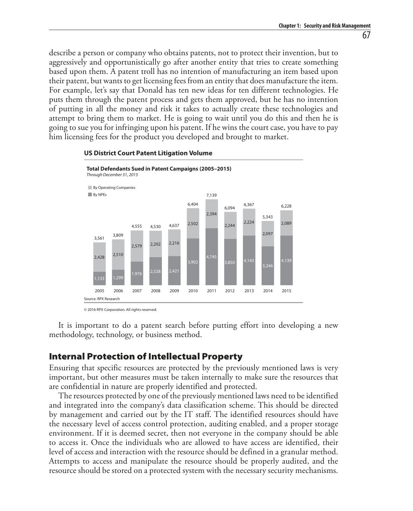
US District Court Patent Litigation Volume
It is important to do a patent search before putting effort into developing a new methodology, technology, or business method.
Internal Protection of Intellectual Property
Ensuring that specific resources are protected by the previously mentioned laws is very important, but other measures must be taken internally to make sure the resources that are confidential in nature are properly identified and protected. The resources protected by one of the previously mentioned laws need to be identified and integrated into the company’s data classification scheme. This should be directed by management and carried out by the IT staff. The identified resources should have the necessary level of access control protection, auditing enabled, and a proper storage environment. If it is deemed secret, then not everyone in the company should be able to access it. Once the individuals who are allowed to have access are identified, their level of access and interaction with the resource should be defined in a granular method. Attempts to access and manipulate the resource should be properly audited, and the resource should be stored on a protected system with the necessary security mechanisms.
Employees must be informed of the level of secrecy or confidentiality of the resource and of their expected behavior pertaining to that resource. If a company fails in one or all of these steps, it may not be covered by the laws described previously, because it may have failed to practice due care and properly protect the resource that it has claimed to be so important to the survival and competitiveness of the company.
Software Piracy
Software piracy occurs when the intellectual or creative work of an author is used or duplicated without permission or compensation to the author. It is an act of infringement on ownership rights, and if the pirate is caught, he could be sued civilly for damages, be criminally prosecuted, or both. When a vendor develops an application, it usually licenses the program rather than sell it outright. The license agreement contains provisions relating to the approved use of the software and the corresponding manuals. If an individual or company fails to observe and abide by those requirements, the license may be terminated and, depending on the actions, criminal charges may be leveled. The risk to the vendor that develops and licenses the software is the loss of profits it would have earned. There are four categories of software licensing.Freewareis software that is publicly available free of charge and can be used, copied, studied, modified, and redistributed without restriction.Shareware, ortrialware, is used by vendors to market their software. Users obtain a free, trial version of the software. Once the user tries out the program, the user is asked to purchase a copy of it.Commercialsoftware is, quite simply, software that is sold for or serves commercial purposes. And, finally,academicsoftware is software that is provided for academic purposes at a reduced cost. It can be open source, freeware, or commercial software. Some software vendors sell bulk licenses, which enable several users to use the product simultaneously. These master agreements define proper use of the software along with restrictions, such as whether corporate software can also be used by employees on their home machines. One other prevalent form of software licensing is the End User License Agreement (EULA). It specifies more granular conditions and restrictions than a master agreement. Other vendors incorporate third-party license-metering software that keeps track of software usability to ensure that the customer stays within the license limit and otherwise complies with the software licensing agreement. The information security officer should be aware of all these types of contractual commitments required by software companies. This person needs to be educated on the restrictions the company is under and make sure proper enforcement mechanisms are in place. If a company is found guilty of illegally copying software or using more copies than its license permits, the security officer in charge of this task may be primarily responsible. Thanks to easy access to high-speed Internet, employees’ ability—if not the temptation—todownloadandusepiratedsoftwarehasgreatlyincreased. The June 2014 BSA Global Software Survey, a study conducted by the Business Software Alliance (BSA) and International Data Corporation (IDC), found that 43 percent of
the software installed on personal computers globally in 2013 was not properly licensed. This means that for every two dollars’ worth of legal software that is purchased, one dollar’s worth is pirated. Software developers often use these numbers to calculate losses resulting from pirated copies. The assumption is that if the pirated copy had not been available, then everyone who is using a pirated copy would have instead purchased it legally. Not every country recognizes software piracy as a crime, but several international organizations have made strides in curbing the practice. The Federation Against Software Theft (FAST) and the Business Software Alliance (author of the Global Software Survey) are organizations that promote the enforcement of proprietary rights of software. This is a huge issue for companies that develop and produce software, because a majority of their revenue comes from licensing fees. Figure 1-12 shows the results of BSA’s 2014 Global Software Survey illustrating the breakdown of which world regions are the top software piracy offenders. The study also estimates that the total economic damage experienced by the industry was $62.7 billion in losses in 2013.
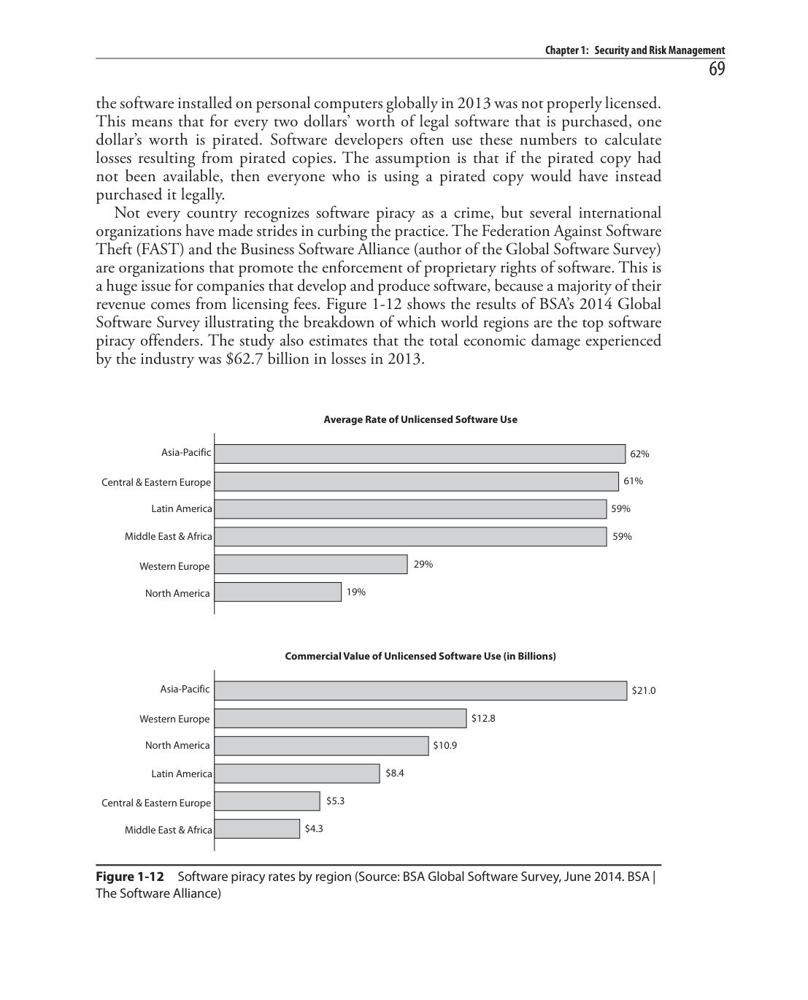
Figure 1-12Software piracy rates by region (Source: BSA Global Software Survey, June 2014. BSA |
One of the offenses an individual or company can commit is to decompile vendor object code. This is usually done to figure out how the application works by obtaining the original source code, which is confidential, and perhaps to reverse-engineer it in the hope of understanding the intricate details of its functionality. Another purpose of reverse-engineering products is to detect security flaws within the code that can later be exploited. This is how some buffer overflow vulnerabilities are discovered. Many times, an individual decompiles the object code into source code and either finds security holes to exploit or alters the source code to produce some type of functionality that the original vendor did not intend. In one example, an individual decompiled a program that protects and displays e-books and publications. The vendor did not want anyone to be able to copy the e-publications its product displayed and thus inserted an encoder within the object code of its product that enforced this limitation. The individual decompiled the object code and figured out how to create a decoder that would overcome this restriction and enable users to make copies of the e-publications, which infringed upon those authors’ and publishers’ copyrights. The individual was arrested and prosecuted under theDigital Millennium Copyright Act (DMCA), which makes it illegal to create products that circumvent copyright protection mechanisms. Interestingly enough, many computer-oriented individuals protested this person’s arrest, and the company prosecuting (Adobe) quickly decided to drop all charges. DMCA is a U.S. copyright law that criminalizes the production and dissemination of technology, devices, or services that circumvent access control measures that are put into place to protect copyright material. So if you figure out a way to “unlock” the proprietary way that Barnes & Noble protects its e-books, you can be charged under this act. Even if you don’t share the actual copyright-protected books with someone, you still broke this specific law and can be found guilty.
The European Union passed a similar law called the Copyright Directive.
Privacy
Privacy is becoming more threatened as the world increasingly relies on computing technology. There are several approaches to addressing privacy, including the generic approach and regulation by industry. The generic approach is horizontal enactment— rules that stretch across all industry boundaries. It affects all industries, including government. Regulation by industry is vertical enactment. It defines requirements for specific verticals, such as the financial sector and health care. In both cases, the overall objective is twofold. First, the initiatives seek to protect citizens’ personally identifiable information (PII). Second, the initiatives seek to balance the needs of government and businesses to collect and use PII with consideration of security issues.
Personally Identifiable Information
Personally identifiable information (PII)is data that can be used to uniquely identify, contact, or locate a single person or can be used with other sources to uniquely identify a single individual. PII needs to be highly protected because it is commonly used in identity theft, financial crimes, and various criminal activities. While it seems as though defining and identifying PII should be easy and straightforward, what different countries, federal governments, and state governments consider to be PII differs. The U.S. Office of Management and Budget in its memorandum M-10-23, “Guidance for Agency Use of Third-Party Websites and Applications,” defines PII as “information that can be used to distinguish or trace an individual’s identity, either alone or when combined with other personal or identifying information that is linked or linkable to a specific individual.” Determining what constitutes PII, then, depends on a specific risk assessment of the likelihood that the information can be used to uniquely identify an individual. This is all good and well, but doesn’t really help us recognize information that might be considered PII. Typical components are listed here:
Full name (if not common)
- National identification number
- IP address (in some cases)
- Vehicle registration plate number
- Driver’s license number
- Face, fingerprints, or handwriting
- Credit card numbers
- Digital identity
- Birthday
- Birthplace
- Genetic information
- The following items are less often used because they are commonly shared by so many people, but they can fall into the PII classification and may require protection from improper disclosure:
First or last name, if common
- Country, state, or city of residence
- Age, especially if nonspecific
- Gender or race
- Name of the school they attend or workplace
- Grades, salary, or job position
- Criminal record
- In response, countries have enacted privacy laws. For example, although the United States already had the Federal Privacy Act of 1974, it has enacted new laws, such as the Gramm-Leach-Bliley Act of 1999 and the Health Insurance Portability and Accountability Act (HIPAA), in response to an increased need to protect personal privacy information. These are examples of a vertical approach to addressing privacy, whereas Canada’s Personal Information Protection and Electronic Documents Act and New Zealand’s Privacy Act of 1993 are horizontal approaches. Technology is continually advancing in the amount of data that can be kept in data warehouses, data mining and analysis techniques, and distribution of this mined data. Companies that are data aggregators compile in-depth profiles of personal information on millions of people, even though many individuals have never heard of these specific companies, have never had an account with them, and have not given them permission to obtain personal information. These data aggregators compile, store, and sell personal information. It seems as though putting all of this information together would make sense. It would be easier to obtain, have one centralized source, be extremely robust—and be the delight of identity thieves everywhere. All they have to do is hack into one location and get enough information to steal hundreds of thousands of identities.
The Increasing Need for Privacy Laws
Privacy is different from security, and although the concepts can intertwine, they are distinctively different. Privacy is the ability of an individual or group to control who has certain types of information about them. Privacy is an individual’s right to determine what data they would like others to know about themselves, which people are permitted to know that data, and when those people can access it. Security is used to enforce these privacy rights. The following issues have increased the need for more privacy laws and governance:
Data aggregation and retrieval technologies advancement
- Large data warehouses are continually being created full of private
- information.
Loss of borders (globalization)
- Private data flows from country to country for many different reasons.
- Business globalization.
- Convergent technologies advancements
- Gathering, mining, and distributing sensitive information.
- While people around the world have always felt that privacy is important, the fact that almost everything that there is to know about a person (age, sex, financial data, medical data, friends, purchasing habits, criminal behavior, and even Google searches) is in some digital format in probably over 50 different locations makes people even more concerned about their privacy.
Having data quickly available to whoever needs it makes many things in life easier and less time consuming. But this data can just as easily be available to those you do not want to have access to it. Personal information is commonly used in identity theft, financial crimes take place because an attacker knows enough about a person to impersonate him, and people experience extortion because others find out secrets about them. While some companies and many marketing companies want as much personal information about people as possible, many other organizations do not want to carry the burden and liability of storing and processing so much sensitive data. This opens the organization up to too much litigation risk. But this type of data is commonly required for various business processes. A new position in many organizations has been created to just deal with privacy issues—chief privacy officer. This person is usually a lawyer and has the responsibility of overseeing how the company deals with sensitive data in a responsible and legal manner. Many companies have had to face legal charges and civil suits for not properly protecting privacy data, so they have hired individuals who are experts in this field. Privacy laws are popping up like weeds in a lawn. Many countries are creating new legislation, and as of this writing over 45 U.S. states have their own privacy information disclosure laws. While this illustrates the importance that society puts on protecting individuals’ privacy, the number of laws and their variance make it very difficult for a company to ensure that it is in compliance with all of them. As a security professional, you should understand the types of privacy data your organization deals with and help to ensure that it is meeting all of its legal and regulatory requirements pertaining to this type of data.
Laws, Directives, and Regulations
Regulations in computer and information security covers many areas for many different reasons. Some issues that require regulations are data privacy, computer misuse, software copyright, data protection, and controls on cryptography. These regulations can be implemented in various arenas, such as government and private sectors for reasons dealing with environmental protection, intellectual property, national security, personal privacy, public order, health and safety, and prevention of fraudulent activities. Security professionals have so much to keep up with these days, from understanding how the latest worm attacks work and how to properly protect against them, to how new versions of denial-of-service (DoS) attacks take place and what tools are used to accomplish them. Professionals also need to follow which new security products are released and how they compare to the existing products. This is followed up by keeping track of new technologies, service patches, hotfixes, encryption methods, access control mechanisms, telecommunications security issues, social engineering, and physical security. Laws and regulations have been ascending the list of things that security professionals also need to be aware of. This is because organizations must be compliant with more and more laws and regulations, and noncompliance can result in a fine or a company going out of business, and in some cases certain executive management individuals ending up in jail. Laws, regulations, and directives developed by governments or appointed agencies do not usually provide detailed instructions to follow to properly protect computers and
company assets. Each environment is too diverse in topology, technology, infrastructure, requirements, functionality, and personnel. Because technology changes at such a fast pace, these laws and regulations could never successfully represent reality if they were too detailed. Instead, they state high-level requirements that commonly puzzle companies about how to be compliant with them. This is where the security professional comes to the rescue. In the past, security professionals were expected to know how to carry out penetration tests, configure firewalls, and deal only with the technology issues of security. Today, security professionals are being pulled out of the server rooms and asked to be more involved in business-oriented issues. As a security professional, you need to understand the laws and regulations that your company must comply with and what controls must be put in place to accomplish compliance. This means the security professional now must have a foot in both the technical world and the business world.
If You Are Not a Lawyer, You Are Not a Lawyer
Many times security professionals are looked to by organizations to help them figure out how to be compliant with the necessary laws and regulations. While you might be aware of and have experience with some of these laws and regulations, there is a high likelihood that you are not aware of all the necessary federal and state laws, regulations, and international requirements your company must meet. These laws, regulations, and directives morph over time and new ones are added, and while you think you may be interpreting them correctly, you may be wrong. It is critical that an organization get its legal department involved with compliancy issues. Many security professionals have been in this situation over many years. At many companies, the legal staff does not know enough about all of these issues to ensure the company is properly protected. In this situation, advise the company to contact outside counsel to help them with these issues. Companies look to security professionals to have all the answers, especially in consulting situations. You will be brought in as the expert. But if you are not a lawyer, you are not a lawyer and should advise your customer properly in obtaining legal help to ensure proper compliance in all matters. The increasing use of cloud computing is adding an incredible amount of legal and regulatory compliance confusion to current situations. It is a good idea to have a clause in any type of consulting agreement you use that explicitly outlines these issues so that if and when the company gets hauled to court after a computer breach, your involvement will be understood and previously documented.
Over time, the CISSP exam has become more global in nature and less U.S.-centric. Specific questions on U.S. laws and regulations have been taken out of the test, so you do not need to spend a lot of time learning them and their specifics. Be familiar with why laws are developed and put in place and their overall goals, instead of memorizing specific laws and dates.
Thus, the following sections on laws and regulations contain information you do not need to memorize, because you will not be asked questions on these items directly. But remember that the CISSP exam is acognitiveexam, so you do need to know the different reasons and motivations for laws and regulations, which is why these sections are provided. This list covers U.S. laws and regulations, but almost every country either has laws similar to these or is in the process of developing them.
Federal Privacy Act of 1974
In the mid-1960s, a proposal was made that the U.S. government compile and collectively hold in a main federal data bank each individual’s information pertaining to the Social Security Administration, the Census Bureau, the Internal Revenue Service, the Bureau of Labor Statistics, and other government departments. The committee that made this proposal saw this as an efficient way of gathering and centralizing data. Others saw it as a dangerous move against individual privacy and too “Big Brother.” The federal data bank never came to pass because of strong opposition. To keep the government in check on gathering information on U.S. citizens and other matters, a majority of its files are considered open to the public. Government files are open to the public unless specific issues enacted by the legislature deem certain files unavailable. This is what is explained in the Freedom of Information Act. This is different from what thePrivacy Act of 1974outlines and protects; itapplies to records and documents developed and maintained by specific branches of the federal government, such as executive departments, government organizations, independent regulatory agencies, and government-controlled corporations. It does not apply to congressional, judiciary, or territorial subdivisions. As specified in the Privacy Act, an actualrecordis information about an individual’s education, medical history, financial history, criminal history, employment, and other similar types of information. Government agencies can maintain this type of information only if it is necessary and relevant to accomplishing the agency’s purpose. The Privacy Act dictates that an agency cannot disclose this information without written permission from the individual. However, like most government acts, legislation, and creeds, there is a list of exceptions. So what does all of this dry legal mumbo-jumbo mean? Basically, agencies can gather information about individuals, but it must be relevant and necessary to the agency’s official functions. In addition, an agency cannot share people’s private information. If it does, private citizens have the right to sue that agency to protect their privacy. The Privacy Act applies to the computer world because this information is usually held by one type of computer or another. If an agency’s computer holds an individual’s confidential information, the agency must provide the necessary security mechanisms to ensure that information cannot be compromised or copied in an unauthorized way.
Federal Information Security Management Act of 2002
TheFederal Information Security Management Act(FISMA)of 2002 is a U.S. law that requires every federal agency to create, document, and implement an agency-wide security program to provide protection for the information and information systems that support the operations and assets of the agency, including those provided or managed by another agency, contractor, or other source. It explicitly emphasizes a “risk-based policy for cost-effective security.”
FISMA requires agency program officials, chief information officers, and inspectors general (IGs) to conduct annual reviews of the agency’s information security program and report the results to the Office of Management and Budget (OMB). OMB uses these data to assist in its oversight responsibilities and to prepare this annual report to Congress on agency compliance with the act. Requirements of FISMA are as follows:
Inventory of information systems
- Categorize information and information systems according to risk level
- Security controls
- Risk assessment
- System security plan
- Certification and accreditation
- Continuous monitoring
- As described earlier in the chapter, NIST SP 800-53 outlines all of the necessary security controls that need to be in place to protect federal systems (refer back to Table 1-4 for a list of control categories addressed in this publication). This NIST document, among others such as SP 800-37, “Guide for Applying the Risk Management Framework to Federal Information Systems,” is used to help ensure compliance with FISMA.
Which Law and Industry Regulations Apply to Your Organization?
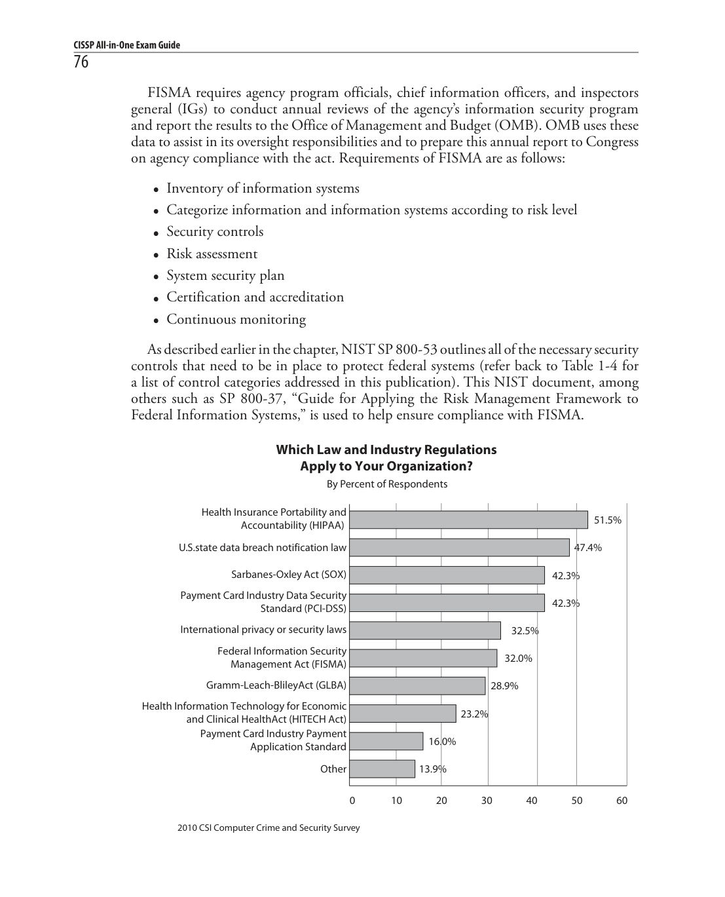
Diagram (p. 110)
Department of Veterans Affairs Information Security Protection Act
In May 2006, a laptop computer issued to a Department of Veterans Affairs (VA) employee was stolen from his home in Aspen Hill, Maryland. The computer’s hard drive contained the names, birth dates, and Social Security numbers of some 26.5 million veterans. Though the laptop was eventually recovered by law enforcement, the breach rippled through the federal government and led to the enactment of the Department of Veterans Affairs Information Security Protection Act. This law has an extremely narrow scope (it only applies to the VA), but is representative of efforts to bolt on security after a breach. The VA was already required to comply with FISMA, but the fact that it failed to do so received a lot of attention in the wake of the theft of the laptop. Rather than simply enforcing FISMA, the federal government created a new law that requires the VA to implement additional controls and to report its compliance to Congress.
Health Insurance Portability and Accountability Act (HIPAA)
TheHealth Insurance Portability and Accountability Act (HIPAA), a U.S. federal regulation, has been mandated to provide national standards and procedures for the storage, use, and transmission of personal medical information and healthcare data. This regulation provides a framework and guidelines to ensure security, integrity, and privacy when handling confidential medical information. HIPAA outlines how security should be managed for any facility that creates, accesses, shares, or destroys medical information. People’s health records can be used and misused in different scenarios for many reasons. As health records migrate from a paper-based system to an electronic system, they become easier to maintain, access, and transfer, but they also become easier to manipulate and access in an unauthorized manner. Traditionally, healthcare facilities have lagged behind other businesses in their information and network security mechanisms, architecture, and security enforcement because there was no real business need to expend the energy and money to put these items in place. Now there is. HIPAA mandates steep federal penalties for noncompliance. If medical information is used in a way that violates the privacy standards dictated by HIPAA, even by mistake, monetary penalties of $100 per violation are enforced, up to $1,500,000 per year, per standard. If protected health information is obtained or disclosed knowingly, the fines can be as much as $50,000 and one year in prison. If the information is obtained or disclosed under false pretenses, the cost can go up to $250,000 with 10 years in prison if there is intent to sell or use the information for commercial advantage, personal gain, or malicious harm. This is serious business.
Health Information Technology for Economic
and Clinical Health (HITECH) Act
In 2009 theHealth Information Technology for Economic and Clinical Health (HITECH) Act, enacted as part of the American Recovery and Reinvestment Act, was signed into law to promote the adoption and meaningful use of health information technology. Subtitle D of the HITECH Act addresses the privacy and security concerns associated with the electronic transmission of health information, in part through several provisions that strengthen the civil and criminal enforcement of the HIPAA rules.
Section 13410(d) of the HITECH Act revised Section 1176(a) of the Social Security Act by establishing
Four categories of violations that reflect increasing levels of culpability
- Four corresponding tiers of penalty amounts that significantly increase the
- minimum penalty amount for each violation
A maximum penalty amount of $1.5 million for all violations of an
- identicalprovision
USA PATRIOT Act
The Uniting and Strengthening America by Providing Appropriate Tools Required to Intercept and Obstruct Terrorism Act of 2001 (aka USA PATRIOT Act) deals with many issues within one act:
Reduces restrictions on law enforcement agencies’ ability to search telephone,
- e-mail, medical, financial, and other records
Eases restrictions on foreign intelligence gathering within the United States
- Expands the Secretary of the Treasury’s authority to regulate financial
- transactions, particularly those involving foreign individuals and entities
Broadens the discretion of law enforcement and immigration authorities in
- detaining and deporting immigrants suspected of terrorism-related acts
Expands the definition of terrorism to include domestic terrorism, thus enlarging
- the number of activities to which the USA PATRIOT Act’s expanded law enforcement powers can be applied
The law made many changes to already existing laws, which are listed here:
Foreign Intelligence Surveillance Act of 1978
- Electronic Communications Privacy Act of 1986
- Money Laundering Control Act of 1986
- Bank Secrecy Act (BSA)
- Immigration and Nationality Act
- This law has generated more privacy debate than perhaps any other. Particularly troublesome to privacy advocates are many provisions in Title II, which deals with surveillance. While advocates of the Patriot Act point to the significant number of foiled acts of terrorism, its opponents point to a significant number of unwarranted privacy violations.
Gramm-Leach-Bliley Act (GLBA)
TheGramm-Leach-Bliley Act (GLBA), also known as the Financial Services Modernization Act of 1999, requires financial institutions to develop privacy notices and give their
customers the option to prohibit financial institutions from sharing their information with nonaffiliated third parties. The act dictates that the board of directors is responsible for many of the security issues within a financial institution, that risk management must be implemented, that all employees need to be trained on information security issues, and that implemented security measures must be fully tested. It also requires these institutions to have a written security policy in place. Major components put into place to govern the collection, disclosure, and protection of consumers’ nonpublic personal information, or PII, include
Financial Privacy RuleProvide each consumer with a privacy notice that
- explains the data collected about the consumer, where that data is shared, how that data is used, and how that data is protected. The notice must also identify the consumer’s right to opt out of the data being shared with unaffiliated parties pursuant to the provisions of the Fair Credit Reporting Act.
Safeguards RuleDevelop a written information security plan that describes
- how the company is prepared to, and plans to continue to, protect clients’ nonpublic personal information.
Pretexting ProtectionImplement safeguards against pretexting (social engineering).
- GLBA would be considered a vertical regulation in that it deals mainly with financial institutions.
Financial institutions within the world of GLBA are not just banks. They include any organization that provides financial products or services to individuals, like loans, financial or investment advice, or insurance.
Personal Information Protection and Electronic Documents Act
Personal Information Protection and Electronic Documents Act (PIPEDA)is a Canadian law that deals with the protection of personal information. One of its main goals is to oversee how the private sector collects, uses, and discloses personal information in regular business activities. The law was enacted to help and promote consumer trust and facilitate electronic commerce. It was also put into place to reassure other countries that Canadian businesses would protect privacy data so that cross-border transactions and business activities could take place in a more assured manner. Some of the requirements the law lays out for organizations are as follows:
Obtain consent when they collect, use, or disclose their personal information
- Collect information by fair and lawful means
- Have personal information policies that are clear, understandable, and
- readilyavailable
If your organization plans to work with entities in Canada, these types of laws need to be understood and followed.
Payment Card Industry Data Security Standard (PCI DSS)
Identity theft and credit card fraud are increasingly more common. Not that these things did not occur before, but the advent of the Internet and computer technology have combined to create a scenario where attackers can steal millions of identities at a time. The credit card industry took proactive steps to curb the problem and stabilize customer trust in credit cards as a safe method of conducting transactions. Each of the four major credit card vendors in the United States developed its own program that its customers had to comply with:
VisaCardholder Information Security Protection (CISP)
- MasterCardSite Data Protection (SDP)
- DiscoverDiscover Information Security and Compliance (DISC)
- American ExpressData Security Operating Policy (DSOP)
- Eventually, the credit card companies joined forces and devised thePayment Card Industry Data Security Standard (PCI DSS). The PCI Security Standards Council was created as a separate entity to maintain and enforce the PCI DSS. The PCI DSS applies to any entity that processes, transmits, stores, or accepts credit card data. Varying levels of compliance and penalties exist and depend on the size of the customer and the volume of transactions. However, credit cards are used by tens of millions of people and are accepted almost anywhere, which means just about every business in the world is affected by the PCI DSS. The PCI DSS is made up of 12 main requirements broken down into six major categories. The six categories of PCI DSS are Build and Maintain a Secure Network and Systems, Protect Cardholder Data, Maintain a Vulnerability Management Program, Implement Strong Access Control Measures, Regularly Monitor and Test Networks, and Maintain an Information Security Policy.
According to PCI DSS 3.1, Secure Sockets Layer (SSL) and early Transport Layer Security (TLS) are not considered secure. New systems should not use them, and existing systems can only use them until June 2016 provided they incorporate risk mitigations. The control objectives are implemented via 12 requirements, as stated at https://www .pcisecuritystandards.org/security_standards/pci_dss.shtml: Install and maintain a firewall configuration to protect cardholder data.
- Do not use vendor-supplied defaults for system passwords and other security
- parameters. Protect stored cardholder data.
- Encrypt transmission of cardholder data across open, public networks.
- Protect all systems against malware and regularly update antivirus software
- orprograms.
Develop and maintain secure systems and applications.
- Restrict access to cardholder data by business need to know.
- Identify and authenticate access to system components.
- Restrict physical access to cardholder data.
- Track and monitor all access to network resources and cardholder data.
- Regularly test security systems and processes.
- Maintain a policy that addresses information security for all personnel.
- The PCI DSS is a private-sector industry initiative. It is not a law. Noncompliance or violations of the PCI DSS may result in financial penalties or possible revocation of merchant status within the credit card industry, but not jail time. However, Minnesota became the first state to mandate PCI compliance as a law, and other states, as well as the U.S. federal government, are implementing similar measures.
As mentioned before, privacy is being dealt with through laws, regulations, self-regulations, and individual protection. The PCI DSS is an example of a self-regulation approach. It is not a regulation that came down from a government agency. It is an attempt by the credit card companies to reduce fraud and govern themselves so the government does not have to get involved. While the CISSP exam will not ask you specific questions on specific laws, in reality you should know this list of regulations and laws (at the minimum) if you are serious about being a security professional. Each one of these directly relates to information security. You will find that most of the security efforts going on within companies and organizations today are regulatory driven. You need to understand the laws and regulations to know what controls should be implemented to ensure compliancy. Many security professionals are not well versed in the necessary laws and regulations. One person may know a lot about HIPAA, another person might know some about GLBA, but most organizations do not have people who understand all the necessary legislation that directly affects them. You can stand head and shoulders above the rest by understanding cyberlaw and how it affects various organizations.
Employee Privacy Issues
Within a corporation, several employee privacy issues must be thought through and addressed if the company wants to be properly protected against employee claims of invasion of privacy. An understanding that each state and country may have different privacy laws should prompt the company to investigate exactly what it can and cannot monitor before it does so. If a company has a facility located in a state that permits keyboard, e-mail, and surveillance camera monitoring, for example, the company must take the proper steps to ensure that the employees of that facility know that these types of monitoring may be put
into place. This is the best way for a company to protect itself legally, if necessary, and to avoid presenting the employees with any surprises. The monitoring must be work related, meaning that a manager may have the right to listen in on his employees’ conversations with customers, but he does not have the right to listen in on personal conversations that are not work related. Monitoring also must happen in a consistent way, such thatallemployees are subjected to monitoring, not just one or two people. If a company feels it may be necessary to monitor e-mail messages and usage, this must be explained to the employees, first through a security policy and then through a constant reminder such as a computer banner or regular training. It is best to have employees read a document describing what type of monitoring they could be subjected to, what is considered acceptable behavior, and what the consequences of not meeting those expectations are. The employees should be asked to sign this document, which can later be treated as a legally admissible document if necessary. This document is referred to as a waiver of reasonable expectation of privacy (REP). By signing the waiver, employees waive their expectation to privacy.
It is important to deal with the issue ofreasonable expectation of privacy (REP)when it comes to employee monitoring. In the U.S. legal system, the REP standard is used when defining the scope of the privacy protections provided by the Fourth Amendment of the Constitution. If employees are not specifically informed that work-related monitoring is possible and/or probable, when the monitoring takes place, employees could claim that their privacy rights have been violated and launch a civil suit against your company.
Prescreening Personnel
It is important to properly screen individuals before hiring them into a corporation. These steps are necessary to help the company protect itself and to ensure it is getting the type of employee required for the job. This chapter looks at some of the issues from the other side of the table, which deals with that individual’s privacyrights. Limitations exist regarding the type and amount of information that an organization can obtain on a potential employee. The limitations and regulations for background checks vary from jurisdiction to jurisdiction, so the hiring manager needs to consult the legal department. Usually human resources has an outline for hiring managers to follow when it comes to interviews and background checks.
A company that intends to monitor e-mail should address this point in its security policy and standards. The company should outline who can and cannot read employee messages, describe the circumstances under which e-mail monitoring may be acceptable,
and specify where the e-mail can be accessed. Some companies indicate that they will only monitor e-mail that resides on the mail server, whereas other companies declare the right to read employee messages if they reside on the mail server or the employee’s computer. A company must not promise privacy to employees that it does not then provide, because that could result in a lawsuit. Although IT and security professionals have access to many parts of computer systems and the network, this does not mean it is ethical and right to overstep the bounds in a way that could threaten a user’s privacy and put the company at risk of legal action. Only the tasks necessary to enforce the security policy should take place and nothing further that could compromise another’s privacy. Many lawsuits have arisen where an employee was fired for doing something wrong (downloading pornographic material, using the company’s e-mail system to send out confidential information to competitors, and so on), and the employee sued the company for improper termination. If the company has not stated in its policy that these types of activities are prohibited and has not made reasonable effort to inform the employee (through security awareness, computer banners, the employee handbook, and so on) of what is considered acceptable and not acceptable and the resulting repercussions for noncompliance, then the employee could win the lawsuit and receive a large chunk of money from the company. So policies, standards, and security-awareness activities need to spell out these issues; otherwise, the employee’s lawyer will claim the employee had an assumed right to privacy.
Personal Privacy Protection
End users are also responsible for their own privacy, especially as it relates to protecting the data that is on their own systems. End users should be encouraged to use common sense and best practices. This includes the use of encryption to protect sensitive personal information, as well as firewalls, antivirus software, and patches to protect computers from becoming infected with malware. Documents containing personal information, such as credit card statements, should also be shredded. Also, it’s important for end users to understand that when data is given to a third party, it is no longer under their control.
Review of Ways to Deal with Privacy
Current methods of privacy protection and examples are as follows:
Laws on governmentFPA, VA ISA, USA PATRIOT
- Laws on corporationsHIPAA, HITECH, GLBA, PIDEDA
- Self-regulationPCI DSS
- Individual userPasswords, encryption, awareness
Data Breaches
It is a rare month indeed when one doesn’t read or hear about a major data breach. Information is the lifeblood of most major corporations nowadays, and threat actors know this. They have been devoting a lot of effort over the past several years to compromising and exploiting the data stores that, in many ways, are more valuable to companies than any vault full of cash. This trend continues unabated, which makes data breaches one of the most important issues in cyber security today. In a way, data breaches can be thought of as the opposite of privacy: data owners lose control of who has the ability to access their data. When an organization fails to properly protect the privacy of its customers’ data, it increases the likelihood of experiencing a data breach. It should not be surprising, therefore, that some of the same legal and regulatory issues that apply to one also apply to the other. It is important to note that data breaches need not involve a violation of personal privacy. Indeed, some of the most publicized data breaches have had nothing to do with PII but with intellectual property (IP). It is worth pausing to properly define the term data breachas a security event that results in the actual or potential compromise of the confidentiality or integrity of protected information by unauthorized actors. Protected information can be PII, IP, personal health information (PHI), classified information, or any other information that can cause damage to an individual or organization. As a security professional, it is important to understand which legal and regulatory requirements are triggered by data breaches. To further complicate matters, most U.S. states, as well as many other countries, have enacted distinct laws with subtle but important differences in notification stipulations. As always when dealing with legal issues, it is best to consult with your attorney. This section is simply an overview of some of the legal requirements of which you should be aware.
U.S. Laws Pertaining to Data Breaches
The preceding sections introduced various U.S. statutes dealing with privacy protections for an individual’s personal information. Despite our best efforts, there will be times when our information systems are compromised and personal information security controls are breached. Let us now revisit some of the laws from our previous discussion of privacy and see what they have to say about data breaches.
Health Insurance Portability and Accountability Act
HIPAA applies to healthcare providers who transmit or store personal health information (PHI). While this law requires the protection of PHI and imposes penalties for failing to do so, it does not require notification of data breaches. This major flaw of the law was not corrected for almost 13 years until the HITECH Act was signed into law.
Health Information Technology for Economic and Clinical Health Act
The 2009 HITECH Act addresses the breach issue in HIPAA. Specifically, it directs the U.S. Secretary of Health and Human Services (HHS) to publish annual guidance to affected corporations on effective technical controls to protect data. If a company
complies with these recommendations, it is not required to report a data breach. Otherwise (i.e., the PHI was not properly protected), the breach must be reported to HHS and to the affected individuals generally within 60 days of discovery of the breach.
Gramm-Leach-Bliley Act of 1999
GLBA applies to institutions that provide financial or insurance services. It requires that, upon identification of an incident of unauthorized access to sensitive customer information, the institution determine the likelihood that the information has or will be misused. If the institution determines that misuse occurred or is reasonably likely to occur, GLBA requires notification to federal regulators, law enforcement authorities, and affected customers.
Economic Espionage Act of 1996
Prior to 1996, industry and corporate espionage was taking place with no real guidelines for who could properly investigate the events. TheEconomic Espionage Actof 1996 provides the necessary structure when dealing with these types of cases and further defines trade secrets to be technical, business, engineering, scientific, or financial. This means that an asset does not necessarily need to be tangible to be protected or be stolen. Thus, this act enables the FBI to investigate industrial and corporate espionage cases. It is worth recalling here that data breaches are not only violations of customer privacy. When a threat actor compromises a target corporation’s network and exposes its intellectual property (IP), a breach has occurred. While the other laws we have discussed in this section deal with protecting customer’s PII, the Economic Espionage Act protects corporations’ IP. When you think of data breaches, it is critical that you consider both PII and IP exposure.
State Laws
Almost every U.S. state has enacted legislation that requires government and private entities to disclose data breaches involving PII. In almost every case, PII is defined by the states as the combination of first and last name with any of the following:
Social Security number
- Driver’s license number
- Credit or debit card number with the security code or PIN
- Unfortunately, that is where the commonalities end. The laws are so different that compliance with all of them is a difficult and costly issue for most corporations. In some states, simple access to files containing PII triggers a notification requirement, while in other states the organization must only notify affected parties if the breach is reasonably likely to result in illegal use of the information.
Other Nations’ Laws Pertaining to Data Breaches
While it would be infeasible to include a detailed discussion of each country’s data breach laws, it is worthwhile to consider an international perspective on the issue.
The European Union (EU) is in a particularly good position to harmonize the laws of many key countries in the global economy, so we discuss what they are doing. Conversely, we also present an overview of the countries that have no data breach notification requirements.
European Union
The EU is standardizing data breach notification requirements as part of the EU Data Protection Regulation, which will have various national laws as its implementation mechanism. Already, the EU has taken other steps, such as EU Regulation 611/2013, which applies to telecoms and Internet service providers operating in Europe. It requires notification to the affected parties to take place within 24 hours of discovery of the data breach. If it is not possible to provide a complete disclosure of the event, a preliminary notification must still go out within 24 hours, with a more complete one being distributed no later than three days after discovery.
Other Countries
As might be expected, the rest of the world is a hodgepodge of laws with varying data breach notification conditions and requirements. Notably, as of this writing, at least 12 countries have no notification requirements whatsoever: Argentina, Brazil, Chile, China, Colombia, Hong Kong, India, Israel, Malaysia, Peru, Russia, and Singapore. This is concerning because unscrupulous organizations have been known to outsource their data-handling operations to countries with no data breach laws in order to circumvent the difficulties in reconciling the different country and state requirements.
Policies, Standards, Baselines,
Guidelines, and Procedures
Laws, directives, and government regulations are external to our organizations. They focus on what we can and cannot do, but largely stay away from specifying how these actions are accomplished or prevented. It is up to us to devise the right internal guidance that satisfies external requirements as well as our own internal ones. This is where we turn our attention next. Computers and the information processed on them usually have a direct relationship with a company’s critical missions and objectives. Because of this level of importance, senior management should make protecting these items a high priority and provide the necessary support, funds, time, and resources to ensure that systems, networks, and information are protected in the most logical and cost-effective manner possible. A comprehensive management approach must be developed to accomplish these goals successfully. This is because everyone within an organization may have a different set of personal values and experiences they bring to the environment with regard to security. It is important to make sure everyone is regarding security at a level that meets the needs of the organization as determined by laws, regulations, requirements, and business goals that have been determined by risk assessments of the environment of the organization.
For a company’s security plan to be successful, it must start at the top level and be useful and functional at every single level within the organization. Senior management needs to define the scope of security and identify and decide what must be protected and to what extent. Management must understand the regulations, laws, and liability issues it is responsible for complying with regarding security and ensure that the company as a whole fulfills its obligations. Senior management also must determine what is expected from employees and what the consequences of noncompliance will be. These decisions should be made by the individuals who will be held ultimately responsible if something goes wrong. But it is a common practice to bring in the expertise of the security officers to collaborate in ensuring that sufficient policies and controls are being implemented to achieve the goals being set and determined by senior management. A security program contains all the pieces necessary to provide overall protection to a corporation and lays out a long-term security strategy. A security program’s documentation should be made up of security policies, procedures, standards, guidelines, and baselines. The human resources and legal departments must be involved in the development and enforcement of rules and requirements laid out in these documents. The language, level of detail, formality of the documents, and supporting mechanisms should be examined by the policy developers. Security policies, standards, guidelines, procedures, and baselines must be developed with a realistic view to be most effective. Highly structured organizations usually follow documentation in a more uniform way. Less structured organizations may need more explanation and emphasis to promote compliance. The more detailed the rules are, the easier it is to know when one has been violated. However, overly detailed documentation and rules can prove to be more burdensome than helpful. The business type, its culture, and its goals must be evaluated to make sure the proper language is used when writing security documentation. There are a lot of legal liability issues surrounding security documentation. If your organization has a policy outlining how it is supposed to be protecting sensitive information and it is found out that your organization is not practicing what it is preaching, criminal charges and civil suits could be filed and successfully executed. It is important that an organization’s security does not just look good on paper, but in action also.
Security Policy
Asecurity policyis an overall general statement produced by senior management (or a selected policy board or committee) that dictates what role security plays within the organization. A security policy can be an organizational policy, an issue-specific policy, or a system-specific policy. In anorganizational security policy, management establishes how a security program will be set up, lays out the program’s goals, assigns responsibilities, shows the strategic and tactical value of security, and outlines how enforcement should be carried out. This policy must address relative laws, regulations, and liability issues and how they are to be satisfied. The organizational security policy provides scope and direction for all future security activities within the organization. It also describes the amount of risk senior management is willing to accept.
The organizational security policy has several important characteristics that must be understood and implemented:
Business objectives should drive the policy’s creation, implementation, and
- enforcement. The policy should not dictate business objectives.
It should be an easily understood document that is used as a reference point for
- all employees and management.
It should be developed and used to integrate security into all business functions
- and processes.
It should be derived from and support all legislation and regulations applicable to
- the company.
It should be reviewed and modified as a company changes, such as through
- adoption of a new business model, a merger with another company, or change of ownership.
Each iteration of the policy should be dated and under version control.
- The units and individuals who are governed by the policy must have easy access
- to it. Policies are commonly posted on portals on an intranet.
It should be created with the intention of having the policies in place for several
- years at a time. This will help ensure policies are forward-thinking enough to deal with potential changes that may arise.
The level of professionalism in the presentation of the policies reinforces their
- importance as well as the need to adhere to them.
It should not contain language that isn’t readily understood by everyone. Use
- clear and declarative statements that are easy to understand and adopt.
It should be reviewed on a regular basis and adapted to correct incidents that
- have occurred since the last review and revision of the policies.
A process for dealing with those who choose not to comply with the security policies must be developed and enforced so there is a structured method of response to noncompliance. This establishes a process that others can understand and thus recognize not only what is expected of them, but also what they can expect as a response to their noncompliance. Organizational policies are also referred to as master security policies. An organization will have many policies, and they should be set up in a hierarchical manner. The organizational (master) policy is at the highest level, and then there are policies underneath it that address security issues specifically. These are referred to as issue-specific policies. Anissue-specific policy, also called a functional policy, addresses specific security issues that management feels need more detailed explanation and attention to make sure a comprehensive structure is built and all employees understand how they are to comply with these security issues. For example, an organization may choose to have an e-mail security policy that outlines what management can and cannot do with employees’ e-mail
messages for monitoring purposes, that specifies which e-mail functionality employees can or cannot use, and that addresses specific privacy issues. As a more specific example, an e-mail policy might state that management can read any employee’s e-mail messages that reside on the mail server, but not when they reside on the user’s workstation. The e-mail policy might also state that employees cannot use e-mail to share confidential information or pass inappropriate material, and that they may be subject to monitoring of these actions. Before they use their e-mail clients, employees should be asked to confirm that they have read and understand the e-mail policy, either by signing a confirmation document or clicking Yes in a confirmation dialog box. The policy provides direction and structure for the staff by indicating what they can and cannot do. It informs the users of the expectations of their actions, and it provides liability protection in case an employee cries “foul” for any reason dealing with e-mail use.
A policy needs to be technology and solution independent. It must outline the goals and missions, but not tie the organization to specific ways of accomplishing them. A common hierarchy of security policies is outlined here, which illustrates the relationship between the master policy and the issue-specific policies that support it: Organizational policy
- Acceptable use policy
- Risk management policy
- Vulnerability management policy
- Data protection policy
- Access control policy
- Business continuity policy
- Log aggregation and auditing policy
- Personnel security policy
- Physical security policy
- Secure application development policy
- Change control policy
- E-mail policy
- Incident response policy
- Asystem-specific policypresents the management’s decisions that are specific to the actual computers, networks, and applications. An organization may have a systemspecific policy outlining how a database containing sensitive information should be protected, who can have access, and how auditing should take place. It may also have a
system-specific policy outlining how laptops should be locked down and managed. This policy type is directed to one or a group of similar systems and outlines how they should be protected. Policies are written in broad terms to cover many subjects in a general fashion. Much more granularity is needed to actually support the policy, and this happens with the use of procedures, standards, guidelines, and baselines. The policy provides the foundation. The procedures, standards, guidelines, and baselines provide the security framework. And the necessary security controls (administrative, technical, and physical) are used to fill in the framework to provide a full security program.
Types of Policies
Policies generally fall into one of the following categories:
RegulatoryThis type of policy ensures that the organization is following
- standards set by specific industry regulations (HIPAA, GLBA, SOX, PCI DSS, etc.). It is very detailed and specific to a type of industry. It is used in financial institutions, healthcare facilities, public utilities, and other government-regulated industries.
AdvisoryThis type of policy strongly advises employees as to which
- types of behaviors and activities should and should not take place within the organization. It also outlines possible ramifications if employees do not comply with the established behaviors and activities. This policy type can be used, for example, to describe how to handle medical or financial information.
InformativeThis type of policy informs employees of certain topics. It
- is not an enforceable policy, but rather one that teaches individuals about specific issues relevant to the company. It could explain how the company interacts with partners, the company’s goals and mission, and a general reporting structure in different situations.
Standards
Standardsrefer to mandatory activities, actions, or rules. Standards can give a policy its support and reinforcement in direction. Organizational security standards may specify how hardware and software products are to be used. They can also be used to indicate expected user behavior. They provide a means to ensure that specific technologies, applications, parameters, and procedures are implemented in a uniform (standardized) manner across the organization. An organizational standard may require that all employees wear their company identification badges at all times, that they challenge unknown individuals about their identity and purpose for being in a specific area, or that they encrypt confidential information. These rules are compulsory within a company, and if they are going to be effective, they must be enforced.
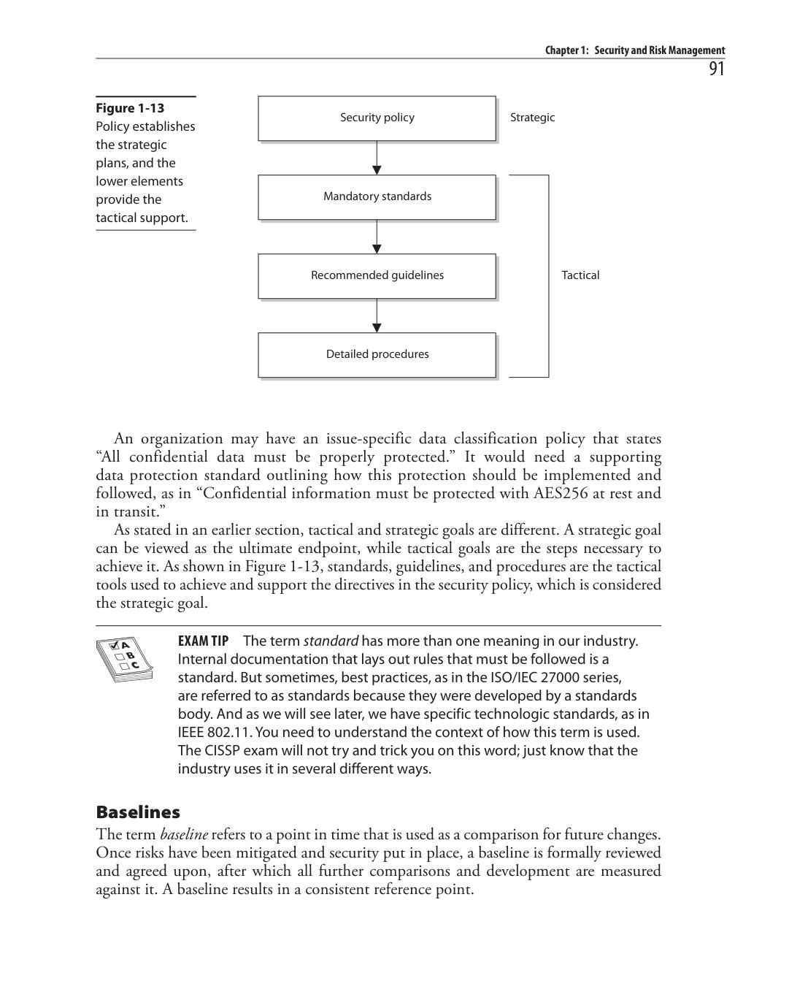
Figure 1-13
An organization may have an issue-specific data classification policy that states “All confidential data must be properly protected.” It would need a supporting data protection standard outlining how this protection should be implemented and followed, as in “Confidential information must be protected with AES256 at rest and in transit.” As stated in an earlier section, tactical and strategic goals are different. A strategic goal can be viewed as the ultimate endpoint, while tactical goals are the steps necessary to achieve it. As shown in Figure 1-13, standards, guidelines, and procedures are the tactical tools used to achieve and support the directives in the security policy, which is considered the strategic goal.
The termstandardhas more than one meaning in our industry. Internal documentation that lays out rules that must be followed is a standard. But sometimes, best practices, as in the ISO/IEC 27000 series, are referred to as standards because they were developed by a standards body. And as we will see later, we have specific technologic standards, as in IEEE 802.11. You need to understand the context of how this term is used. The CISSP exam will not try and trick you on this word; just know that the industry uses it in several different ways.
Baselines
The termbaselinerefers to a point in time that is used as a comparison for future changes. Once risks have been mitigated and security put in place, a baseline is formally reviewed and agreed upon, after which all further comparisons and development are measured against it. A baseline results in a consistent reference point.
Let’s say that your doctor has told you that you weigh 400 pounds due to your diet of donuts, pizza, and soda. (This is very frustrating to you because the TV commercial said you could eat whatever you wanted and just take their very expensive pills every day and lose weight.) The doctor tells you that you need to exercise each day and elevate your heart rate to double its normal rate for 30 minutes twice a day. How do you know when you are at double your heart rate? You find out your baseline (regular heart rate) by using one of those arm thingies with a little ball attached. So you start at your baseline and continue to exercise until you have doubled your heart rate or die, whichever comes first. Baselines are also used to define the minimum level of protection required. In security, specific baselines can be defined per system type, which indicates the necessary settings and the level of protection being provided. For example, a company may stipulate that all accounting systems must meet an Evaluation Assurance Level (EAL) 4 baseline. This means that only systems that have gone through the Common Criteria process and achieved this rating can be used in this department. Once the systems are properly configured, this is the necessary baseline. When new software is installed, when patches or upgrades are applied to existing software, or when other changes to the system take place, there is a good chance the system may no longer be providing its necessary minimum level of protection (its baseline). Security personnel must assess the systems as changes take place and ensure that the baseline level of security is always being met. If a technician installs a patch on a system and does not ensure the baseline is still being met, there could be new vulnerabilities introduced into the system that will allow attackers easy access to the network.
NOTEBaselines that are not technology oriented should be created and enforced within organizations as well. For example, a company can mandate that while in the facility all employees must have a badge with a picture ID in view at all times. It can also state that visitors must sign in at a front desk and be escorted while in the facility. If these are followed, then this creates a baseline of protection.
Guidelines
Guidelinesare recommended actions and operational guides to users, IT staff, operations staff, and others when a specific standard does not apply. They can also be used as a recommended way to achieve specific standards when those do apply. Guidelines can deal with the methodologies of technology, personnel, or physical security. Life is full of gray areas, and guidelines can be used as a reference during those times. Whereas standards are specific mandatory rules, guidelines are general approaches that provide the necessary flexibility for unforeseen circumstances. A policy might state that access to confidential data must be audited. A supporting guideline could further explain that audits should contain sufficient information to allow for reconciliation with prior reviews. Supporting procedures would outline the necessary steps to configure, implement, and maintain this type of auditing.
Procedures
Proceduresare detailed step-by-step tasks that should be performed to achieve a certain goal. The steps can apply to users, IT staff, operations staff, security members, and others who may need to carry out specific tasks. Many organizations have written procedures on how to install operating systems, configure security mechanisms, implement access control lists, set up new user accounts, assign computer privileges, audit activities, destroy material, report incidents, and much more. Procedures are considered the lowest level in the documentation chain because they are closest to the computers and users (compared to policies) and provide detailed steps for configuration and installation issues. Procedures spell out how the policy, standards, and guidelines will actually be implemented in an operating environment. If a policy states that all individuals who access confidential information must be properly authenticated, the supporting procedures will explain the steps for this to happen by defining the access criteria for authorization, how access control mechanisms are implemented and configured, and how access activities are audited. If a standard states that backups should be performed, then the procedures will define the detailed steps necessary to perform the backup, the timelines of backups, the storage of backup media, and so on. Procedures should be detailed enough to be both understandable and useful to a diverse group of individuals. To tie these items together, let’s walk through an example. A corporation’s security policyindicates that confidential information should be properly protected. It states the issue in very broad and general terms. A supportingstandardmandates that all customer information held in databases must be encrypted with the Advanced Encryption Standard (AES) algorithm while it is stored and that it cannot be transmitted over the Internet unless IPSec encryption technology is used. The standard indicates what type of protection is required and provides another level of granularity and explanation. The supporting proceduresexplain exactly how to implement the AES and IPSec technologies, and the guidelinescover how to handle cases when data is accidentally corrupted or compromised during transmission. Once the software and devices are configured as outlined in the procedures, this is considered thebaselinethat must always be maintained. All of these work together to provide a company with a security structure.
Implementation
Unfortunately, security policies, standards, procedures, baselines, and guidelines often are written because an auditor instructed a company to document these items, but then they are placed on a file server and are not shared, explained, or used. To be useful, they must be put into action. No one is going to follow the rules if people don’t know the rules exist. Security policies and the items that support them not only must be developed, but must also be implemented and enforced. To be effective, employees need to know about security issues within these documents; therefore, the policies and their supporting counterparts need visibility. Awareness training, manuals, presentations, newsletters, and screen banners can achieve this visibility. It must be clear that the directives came from senior management and that
the full management staff supports these policies. Employees must understand what is expected of them in their actions, behaviors, accountability, and performance. Implementing security policies and the items that support them shows due care by the company and its management staff. Informing employees of what is expected of them and the consequences of noncompliance can come down to a liability issue. As stated in an earlier example, if a company fires an employee because he was downloading pornographic material to the company’s computer, the employee may take the company to court and win if the employee can prove he was not properly informed of what was considered acceptable and unacceptable use of company property and what the consequences were. Security-awareness training is covered in later sections, but understand that companies that do not supply this training to their employees are not practicing due care and can be held negligent and liable in the eyes of the law.
Risk Management
Risk in the context of security is the possibility of damage happening and the ramifications of such damage should it occur.Risk management(RM)is the process of identifying and assessing risk, reducing it to an acceptable level, and ensuring it remains at that level. There is no such thing as a 100-percent secure environment. Every environment has vulnerabilities and threats. The skill is in identifying these threats, assessing the probability of them actually occurring and the damage they could cause, and then taking the right steps to reduce the overall level of risk in the environment to what the organization identifies as acceptable. Risks to an organization come in different forms, and they are not all computer related. When a company purchases another company, it takes on a lot of risk in the hope that this move will increase its market base, productivity, and profitability. If a company increases its product line, this can add overhead, increase the need for personnel and storage facilities, require more funding for different materials, and maybe increase insurance premiums and the expense of marketing campaigns. The risk is that this added overhead might not be matched in sales; thus, profitability will be reduced or not accomplished. When we look at information security, note that an organization needs to be aware of several types of risk and address them properly. The following items touch on the major categories:
Physical damageFire, water, vandalism, power loss, and natural disasters
- Human interactionAccidental or intentional action or inaction that can
- disrupt productivity
Equipment malfunctionFailure of systems and peripheral devices
- Inside and outside attacksHacking, cracking, and attacking
- Misuse of dataSharing trade secrets, fraud, espionage, and theft
- Loss of dataIntentional or unintentional loss of information to
- unauthorizedreceivers
Application errorComputation errors, input errors, and buffer overflows
- Threats must be identified, classified by category, and evaluated to calculate their damage potential to the organization. Real risk is hard to measure, but prioritizing the potential risks in order of which ones must be addressed first is obtainable.
Holistic Risk Management
Who really understands risk management? Unfortunately, the answer to this question is that not enough people inside or outside of the security profession really understand risk management. Even though information security is big business today, the focus is more on applications, devices, viruses, and hacking. Although these items all must be considered and weighed in risk management processes, they should be considered small pieces of the overall security puzzle, not the main focus of risk management. Security is a business issue, but businesses operate to make money, not just to be secure. A business is concerned with security only if potential risks threaten its bottom line, which they can in many ways, such as through the loss of reputation and customer base after a database of credit card numbers is compromised; through the loss of thousands of dollars in operational expenses from a new computer worm; through the loss of proprietary information as a result of successful company espionage attempts; through the loss of confidential information from a successful social engineering attack; and so on. It is critical that security professionals understand these individual threats, but it is more important that they understand how to calculate the risk of these threats and map them to business drivers. In order to properly manage risk within an organization, you have to look at it holistically. Risk, after all, exists within a context. NIST SP 800-39 defines three tiers to risk management:
Organizational tierConcerned with risk to the business as a whole, which
- means it frames the rest of the conversation and sets important parameters such as the risk tolerance level.
Business process tierDeals with the risk to the major functions of the
- organization, such as defining the criticality of the information flows between the organization and its partners or customers. The bottom tier.
Information systems tierAddresses risk from an information systems
- perspective. Though this is where we will focus our discussion, it is important to understand that it exists within the context of (and must be consistent with) other, more encompassing risk management efforts.
Carrying out risk management properly means that you have a holistic understanding of your organization, the threats it faces, the countermeasures that can be put into place to deal with those threats, and continuous monitoring to ensure the acceptable risk level is being met on an ongoing basis.
Information Systems Risk Management Policy
Proper risk management requires a strong commitment from senior management, a documented process that supports the organization’s mission, an information systems risk management (ISRM) policy, and a delegated ISRM team.
The ISRM policy should be a subset of the organization’s overall risk management policy(risks to a company include more than just information security issues)and should be mapped to the organizational security policies. The ISRM policy should address the following items:
The objectives of the ISRM team
- The level of risk the organization will accept and what is considered an acceptable
- level of risk
Formal processes of risk identification
- The connection between the ISRM policy and the organization’s strategic
- planning processes
Responsibilities that fall under ISRM and the roles to fulfill them
- The mapping of risk to internal controls
- The approach toward changing staff behaviors and resource allocation in
- response to risk analysis
The mapping of risks to performance targets and budgets
- Key indicators to monitor the effectiveness of controls
- The ISRM policy provides the foundation and direction for the organization’s security risk management processes and procedures, and should address all issues of information security. It should provide direction on how the ISRM team communicates information on company risks to senior management and how to properly execute management’s decisions on risk mitigation tasks.
The Risk Management Team
Each organization is different in its size, security posture, threat profile, and security budget. One organization may have one individual responsible for ISRM or a team that works in a coordinated manner. The overall goal of the team is to ensure the company is protected in the most cost-effective manner. This goal can be accomplished only if the following components are in place:
An established risk acceptance level provided by senior management
- Documented risk assessment processes and procedures
- Procedures for identifying and mitigating risks
- Appropriate resource and fund allocation from senior management
- Security-awareness training for all staff members associated with information assets
- The ability to establish improvement (or risk mitigation) teams in specific areas
- when necessary
The mapping of legal and regulation compliancy requirements to control and
- implement requirements
The development of metrics and performance indicators so as to measure and
- manage various types of risks
The ability to identify and assess new risks as the environment and company change
- The integration of ISRM and the organization’s change control process to ensure
- that changes do not introduce new vulnerabilities
Obviously, this list is a lot more than just buying a new shiny firewall and calling the company safe. The ISRM team, in most cases, is not made up of employees with the dedicated task of risk management. It consists of people who already have a full-time job in the company and are now tasked with something else. Thus, senior management support is necessary so proper resource allocation can take place. Of course, all teams need a leader, and ISRM is no different. One individual should be singled out to run this rodeo and, in larger organizations, this person should be spending 50 to 70 percent of their time in this role. Management must dedicate funds to making sure this person receives the necessary training and risk analysis tools to ensure it is a successful endeavor.
The Risk Management Process
By now you should believe that risk management is critical to the long-term security (and even success) of your organization. But how do you get this done? NIST SP 800-39 describes four interrelated components that comprise the risk management process. Let’s consider each of these components briefly now, since they will nicely frame the remainder of our discussion of risk management.
Frame riskRisk framing defines the context within which all other risk
- activities take place. What are our assumptions and constraints? What are the organizational priorities? What is the risk tolerance of senior management?
Assess riskBefore we can take any action to mitigate risk, we have to assess
- it. This is perhaps the most critical aspect of the process, and one that we will discuss at length. If your risk assessment is spot-on, then the rest of the process becomes pretty straightforward.
Respond to riskBy now, we’ve done our homework. We know what we
- should, must, and can’t do (from the framing component), and we know what we’re up against in terms of threats, vulnerabilities, and attacks (from the assess component). Responding to the risk becomes a matter of matching our limited resources with our prioritized set of controls. Not only are we mitigating significant risk, but, more importantly, we can tell our bosses what risk we can’t do anything about because we’re out of resources.
Monitor riskNo matter how diligent we’ve been so far, we probably missed
- something. If not, then the environment likely changed (perhaps a new threat source emerged or a new system brought new vulnerabilities). In order tostay one step ahead of the bad guys, we need to continuously monitor the effectiveness of our controls against the risks for which we designed them.
You will notice that our discussion of risk so far has dealt heavily with the whole framing process. In the preceding sections, we’ve talked about the organization (top to bottom), the policies, and the team. The next step is to assess the risk, and what better way to start than by modeling the threat.
Threat Modeling
Before we can develop effective defenses, it is imperative to understand the assets that we value, as well as the threats against which we are protecting them. Though multiple definitions exist for the term, for the purposes of our discussion we definethreat modeling as the process of describing feasible adverse effects on our assets caused by threat sources. That’s quite a mouthful, so let’s break it down. When we build a model of the threats we face, we want to ground them in reality, so it is important to only consider dangers that are reasonably likely to occur. To do otherwise would dilute our limited resources to the point of making us unable to properly defend ourselves. You could argue (correctly) that threat modeling is a component task to the risk assessment that we will discuss in the next section. However, many organizations are stepping up threat intelligence efforts at an accelerated pace. Threat intelligence is becoming a resource that is used not only by the risk teams, but also by the security operations, development, and even management teams. We isolate threat modeling from the larger discussion of risk assessment here to highlight the fact that it serves more than just risk assessment efforts and allows an organization to understand what is in the realm of the probable and not just the possible. To focus our efforts on the likely (and push aside the less likely), we need to consider what it is that we have that someone (or something) else may be able to degrade, disrupt, or destroy. As we will see shortly, inventorying and categorizing our information systems is a critical early step in the process. For the purpose of modeling the threat, we are particularly interested in the vulnerabilities inherent in our systems that could lead to the compromise of their confidentiality, integrity, or availability. We then ask the question, “Who would want to exploit this vulnerability, and why?” This leads us to a deliberate study of our potential adversaries, their motivations, and their capabilities. Finally, we determine whether a given threat source has the means to exploit one or more vulnerabilities in order to attack our assets.
Vulnerabilities
Everything built by humans is vulnerable to something. Our information systems, in particular, are riddled with vulnerabilities even in the best-defended cases. One need only read news accounts of the compromise of the highly protected and classified systems of defense contractors and even governments to see that this universal principle is true. In order to properly analyze vulnerabilities, it is useful to recall that information systems consist of information, processes, and people that are typically, but not always, interacting with computer systems. Since we discuss computer system vulnerabilities in detail in Chapter 3 (which covers domain 3, Security Engineering), we will briefly discuss the other three components here.
Information
In almost every case, the information at the core of our information systems is the most valuable asset to a potential adversary. Information within a computer information system (CIS) is represented as data. This information may be stored (data at rest), transported between parts of our system (data in motion), or actively being used by the system (data in use). In each of its three states, the information exhibits different vulnerabilities, as listed in the following examples:
Data at restData is copied to a thumb drive and given to unauthorized parties
- by an insider, thus compromising its confidentiality.
Data in motionData is modified by an external actor intercepting it on the
- network and then relaying the altered version (known as a man-in-the-middle or MitM attack), thus compromising its integrity. Data in useData is deleted by a malicious process exploiting a “time of check to
- time of use” (TOC/TOU) or “race condition” vulnerability, thus compromising its availability. We address this in detail in Chapter 3 (which covers domain 3, Security Engineering).
Processes
Processes are almost always instantiated in software as part of a CIS. Therefore, process vulnerabilities can be thought of as a specific kind of software vulnerability. We will address these in detail in Chapter 8 (which covers domain 8, Software Development Security). As security professionals, however, it is important that we take a broader view of the issue and think about the business processes that are implemented in our softwaresystems.
People
There are many who would consider the human the weakest link in the security chain. Whether or not you agree with this, it is important to consider the specific vulnerabilities that people present in a system. Though there are many ways to exploit the human in the loop, there are three that correspond to the bulk of the attacks, summarized briefly here:
Social engineeringThis is the process of getting a person to violate a security
- procedure or policy, and usually involves human interaction or e-mail/text messages. Social networksThe prevalence of social network use provides potential
- attackers with a wealth of information that can be leveraged directly (e.g., blackmail) or indirectly (e.g., crafting an e-mail with a link that is likely to be clicked) to exploit people. PasswordsWeak passwords can be cracked in milliseconds using rainbow
- tables (discussed in Chapter 5) and are very susceptible to dictionary or bruteforce attacks. Even strong passwords are vulnerable if they are reused across sites and systems.
Threats
As you identify the vulnerabilities that are inherent to your organization and its systems, it is important to also identify the sources that could attack them. The International Organization for Standardization and the International Electrotechnical Commission in their ISO/IEC standard 27000 define athreatas a “potential cause of an unwanted incident, which may result in harm to a system or organization.” While this may sound somewhat vague, it is important to include the full breadth of possibilities. Perhaps the most obvious threat source is the malicious attacker who intentionally pokes and prods our systems looking for vulnerabilities to exploit. In the past, this was a sufficient description of this kind of threat source. Increasingly, however, organizations are interested in profiling the threat in great detail. Many organizations are implementing teams to conduct cyberthreat intelligence that allows them to individually label, track, and understand specific cybercrime groups. This capability enables these organizations to more accurately determine which attacks are likely to originate from each group based on their capabilities as well as their tactics, techniques, and procedures (TTP). Another important threat source is the insider, who may be malicious or simply careless. The malicious insider is motivated by a number of factors, but most frequently by disgruntlement and/or financial gain. In the wake of the massive leak of classified data attributed to Edward Snowden in 2012, there’s been increased emphasis on techniques and procedures for identifying and mitigating the insider threat source. While the deliberate insider dominates the news, it is important to note that the accidental insider can be just as dangerous, particularly if they fall into one of the vulnerability classes described in the preceding section. Finally, the nonhuman threat source can be just as important as the ones we’ve previously discussed. Hurricane Katrina in 2005 and the Tohoku earthquake and tsunami in 2011 serve as reminders that natural events can be more destructive than any human attack. They also force the information systems security professional to consider threats that fall way outside the norm. Though it is easier and in many cases cheaper to address likelier natural events such as a water main break or a fire in a facility, one should always look for opportunities to leverage countermeasures that protect against both mild and extreme events for small price differentials.
Attacks
If the vulnerability is on one end of a network and the threat source is on the other, it is the attack that ties them together. In other words, if a given threat (e.g., a disgruntled employee) wants to exploit a given vulnerability (e.g., the e-mail inbox of the company’s president), but lacks the means to do so, then an attack would likely not be feasible and this scenario would not be part of our threat model. It is not possible to determine the feasibility of an attack if we don’t know who would execute it and against which vulnerability. This shows how it is the triads formed by an existent vulnerability, a feasible attack, and a capable threat that constitute the heart of a threat model. Typically, there are multiple ways to accomplish a given objective. For example, if a disgruntled employee wanted to steal the contents of the president’s mailbox, this could be accomplished by either accessing the e-mail server, obtaining the password, or stealing
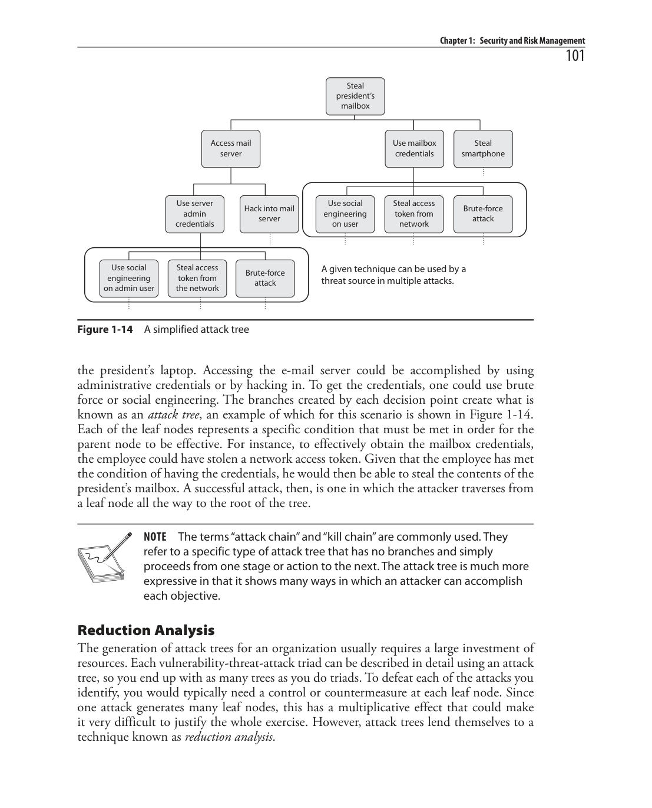
Figure 1-14A simplified attack tree
the president’s laptop. Accessing the e-mail server could be accomplished by using administrative credentials or by hacking in. To get the credentials, one could use brute force or social engineering. The branches created by each decision point create what is known as anattack tree, an example of which for this scenario is shown in Figure 1-14. Each of the leaf nodes represents a specific condition that must be met in order for the parent node to be effective. For instance, to effectively obtain the mailbox credentials, the employee could have stolen a network access token. Given that the employee has met the condition of having the credentials, he would then be able to steal the contents of the president’s mailbox. A successful attack, then, is one in which the attacker traverses from a leaf node all the way to the root of the tree.
The terms “attack chain” and “kill chain” are commonly used. They refer to a specific type of attack tree that has no branches and simply proceeds from one stage or action to the next. The attack tree is much more expressive in that it shows many ways in which an attacker can accomplish each objective.
Reduction Analysis
The generation of attack trees for an organization usually requires a large investment of resources. Each vulnerability-threat-attack triad can be described in detail using an attack tree, so you end up with as many trees as you do triads. To defeat each of the attacks you identify, you would typically need a control or countermeasure at each leaf node. Since one attack generates many leaf nodes, this has a multiplicative effect that could make it very difficult to justify the whole exercise. However, attack trees lend themselves to a technique known asreduction analysis.
There are two aspects of reduction analysis in the context of threat modeling: one aspect is to reduce the number of attacks we have to consider, and the other is to reduce the threat posed by the attacks. The first aspect is evidenced by the commonalities in the example shown in Figure 1-14. To satisfy the conditions for logging into the mail server or the user’s mailbox, an attacker can use the exact same three techniques. This means we can reduce the number of conditions we need to mitigate by finding these commonalities. When you consider that these three sample conditions apply to a variety of other attacks, you realize that we can very quickly cull the number of conditions to a manageable number. The second aspect of reduction analysis is the identification of ways to mitigate or negate the attacks we’ve identified. This is where the use of attack trees can really benefit us. Recall that each tree has only one root but many leaves and internal nodes. The closer you are to the root when you implement a mitigation technique, the more leaf conditions you will defeat with that one control. This allows you to easily identify the most effective techniques to protect your entire organization. These techniques are typically called controlsorcountermeasures.
Risk Assessment and Analysis
Arisk assessment, which is really a tool for risk management, is a method of identifying vulnerabilities and threats and assessing the possible impacts to determine where to implement security controls. After a risk assessment is carried out, the results are analyzed. Risk analysis is used to ensure that security is cost effective, relevant, timely, and responsive to threats. Security can be quite complex, even for well-versed security professionals, and it is easy to apply too much security, not enough security, or the wrong security controls and to spend too much money in the process without attaining the necessary objectives. Risk analysis helps companies prioritize their risks and shows management the amount of resources that should be applied to protecting against those risks in a sensible manner. A risk analysis has four main goals:
Identify assets and their value to the organization.
- Identify vulnerabilities and threats.
- Quantify the probability and business impact of these potential threats.
- Provide an economic balance between the impact of the threat and the cost of the
- countermeasure.
Risk analysis provides acost/benefit comparison, which compares the annualized cost of controls to the potential cost of loss. A control, in most cases, should not be implemented unless the annualized cost of loss exceeds the annualized cost of the control itself. This means that if a facility is worth $100,000, it does not make sense to spend $150,000 trying to protect it. It is important to figure out what you aresupposedto be doing before you dig right in and start working. Anyone who has worked on a project without a properly defined
scope can attest to the truth of this statement. Before an assessment and analysis isstarted, the team must carry outproject sizingto understand what assets and threats should be evaluated. Most assessments are focused on physical security, technology security, or personnel security. Trying to assess all of them at the same time can be quite an undertaking. One of the risk analysis team’s tasks is to create a report that details the asset valuations. Senior management should review and accept the list and make them the scope of the risk management project. If management determines at this early stage that some assets are not important, the risk assessment team should not spend additional time or resources evaluating those assets. During discussions with management, everyone involved must have a firm understanding of the value of the security AIC triad—availability, integrity, and confidentiality—and how it directly relates to business needs. Management should outline the scope of the assessment, which most likely will be dictated by organizational compliance requirements as well as budgetary constraints. Many projects have run out of funds, and consequently stopped, because proper project sizing was not conducted at the onset of the project. Don’t let this happen to you. A risk analysis helps integrate the security program objectives with the company’s business objectives and requirements. The more the business and security objectives are in alignment, the more successful the two will be. The analysis also helps the company draft a proper budget for a security program and its constituent security components. Once a company knows how much its assets are worth and the possible threats they are exposed to, it can make intelligent decisions about how much money to spend protecting those assets. A risk analysis must be supported and directed by senior management if it is to be successful. Management must define the purpose and scope of the analysis, appoint a team to carry out the assessment, and allocate the necessary time and funds to conduct the analysis. It is essential for senior management to review the outcome of the risk assessment and analysis and to act on its findings. After all, what good is it to go through all the trouble of a risk assessment andnotreact to its findings? Unfortunately, this does happen all too often.
Risk Analysis Team
Each organization has different departments, and each department has its own functionality, resources, tasks, and quirks. For the most effective risk analysis, an organization must build a risk analysis team that includes individuals from many or all departments to ensure that all of the threats are identified and addressed. The team members may be part of management, application programmers, IT staff, systems integrators, and operational managers—indeed, any key personnel from key areas of the organization. This mix is necessary because if the risk analysis team comprises only individuals from the IT department, it may not understand, for example, the types of threats the accounting department faces with data integrity issues, or how the company as a whole would be affected if the accounting department’s data files were wiped out by an accidental or intentional act. Or, as another example, the IT staff may not understand all the risks the employees in the warehouse would face if a natural disaster were to hit, or what it would
mean to their productivity and how it would affect the organization overall. If the risk analysis team is unable to include members from various departments, it should, at the very least, make sure to interview people in each department so it fully understands and can quantify all threats. The risk analysis team must also include people who understand the processes that are part of their individual departments, meaning individuals who are at the right levels of each department. This is a difficult task, since managers tend to delegate any sort of risk analysis task to lower levels within the department. However, the people who work at these lower levels may not have adequate knowledge and understanding of the processes that the risk analysis team may need to deal with.
Asking the Right Questions
When looking at risk, it’s good to keep several questions in mind. Raising these questions helps ensure that the risk analysis team and senior management know what is important. Team members must ask the following:
What event could occur (threat event)?
- What could be the potential impact (risk)?
- How often could it happen (frequency)?
- What level of confidence do we have in the answers to the first three
- questions (certainty)?
A lot of this information is gathered through internal surveys, interviews, or workshops. Viewing threats with these questions in mind helps the team focus on the tasks at hand and assists in making the decisions more accurate and relevant.
The Value of Information and Assets
The value placed on information is relative to the parties involved, what work was required to develop it, how much it costs to maintain, what damage would result if it were lost or destroyed, what enemies would pay for it, and what liability penalties could be endured. If a company does not know the value of the information and the other assets it is trying to protect, it does not know how much money and time it should spend on protecting them. If the calculated value of your company’s secret formula isx, then the total cost of protecting it should be some value less thanx. The value of the information supports security measure decisions. The previous examples refer to assessing the value ofinformationand protecting it, but this logic applies toward an organization’s facilities, systems, and resources. The value of the company’s facilities must be assessed, along with all printers, workstations, servers,
peripheral devices, supplies, and employees. You do not know how much is in danger of being lost if you don’t know what you have and what it is worth in the first place.
Costs That Make Up the Value
An asset can have both quantitative and qualitative measurements assigned to it, but these measurements need to be derived. The actual value of an asset is determined by the importance it has to the organization as a whole. The value of an asset should reflect all identifiable costs that would arise if the asset were actually impaired. If a server cost $4,000 to purchase, this value should not be input as the value of the asset in a risk assessment. Rather, the cost of replacing or repairing it, the loss of productivity, and the value of any data that may be corrupted or lost must be accounted for to properly capture the amount the organization would lose if the server were to fail for one reason or another. The following issues should be considered when assigning values to assets:
Cost to acquire or develop the asset
- Cost to maintain and protect the asset
- Value of the asset to owners and users
- Value of the asset to adversaries
- Price others are willing to pay for the asset
- Cost to replace the asset if lost
- Operational and production activities affected if the asset is unavailable
- Liability issues if the asset is compromised
- Usefulness and role of the asset in the organization
- Understanding the value of an asset is the first step to understanding what security mechanisms should be put in place and what funds should go toward protecting it. A very important question is how much it could cost the company tonotprotect the asset. Determining the value of assets may be useful to a company for a variety of reasons, including the following:
To perform effective cost/benefit analyses
- To select specific countermeasures and safeguards
- To determine the level of insurance coverage to purchase
- To understand what exactly is at risk
- To comply with legal and regulatory requirements
- Assets may be tangible (computers, facilities, supplies) or intangible (reputation, data, intellectual property). It is usually harder to quantify the values of intangible assets, which may change over time. How do you put a monetary value on a company’s reputation? This is not always an easy question to answer, but it is important to be able to do so.
Identifying Vulnerabilities and Threats
Earlier, it was stated that the definition of a risk is the probability of a threat agent exploiting a vulnerability to cause harm to an asset and the resulting business impact. Many types of threat agents can take advantage of several types of vulnerabilities, resulting in a variety of specific threats, as outlined in Table 1-5, which represents only a sampling of the risks many organizations should address in their risk management programs. Other types of threats can arise in an environment that are much harder to identify than those listed in Table 1-5. These other threats have to do with application and user errors. If an application uses several complex equations to produce results, the threat can be difficult to discover and isolate if these equations are incorrect or if the application is using inputted data incorrectly. This can result inillogical processingandcascading errors as invalid results are passed on to another process. These types of problems can lie within applications’ code and are very hard to identify. User errors, whether intentional or accidental, are easier to identify by monitoring and auditing user activities. Audits and reviews must be conducted to discover if employees are inputting values incorrectly into programs, misusing technology, or modifying data in an inappropriate manner. Once the vulnerabilities and associated threats are identified, the ramifications of these vulnerabilities being exploited must be investigated. Risks haveloss potential, meaning what the company would lose if a threat agent actually exploited a vulnerability. The loss may be corrupted data, destruction of systems and/or the facility, unauthorized disclosure of confidential information, a reduction in employee productivity, and so on. When performing a risk analysis, the team also must look atdelayed losswhen assessing the damages that can occur. Delayed loss is secondary in nature and takes place well
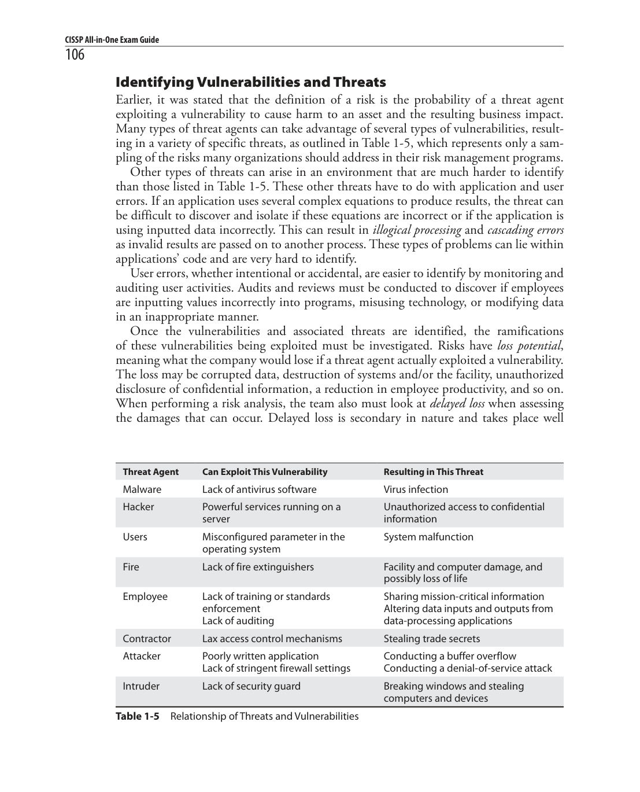
MalwareLack of antivirus softwareVirus infection
after a vulnerability is exploited. Delayed loss may include damage to the company’s reputation, loss of market share, accrued late penalties, civil suits, the delayed collection of funds from customers, resources required to reimage other compromised systems, and so forth. For example, if a company’s web servers are attacked and taken offline, the immediate damage (loss potential) could be data corruption, the man-hours necessary to place the servers back online, and the replacement of any code or components required. The company could lose revenue if it usually accepts orders and payments via its website. If it takes a full day to get the web servers fixed and back online, the company could lose a lot more sales and profits. If it takes a full week to get the web servers fixed and back online, the company could lose enough sales and profits to not be able to pay other bills and expenses. This would be a delayed loss. If the company’s customers lose confidence in it because of this activity, it could lose business for months or years. This is a more extreme case of delayed loss. These types of issues make the process of properly quantifying losses that specific threats could cause more complex, but they must be taken into consideration to ensure reality is represented in this type of analysis.
Methodologies for Risk Assessment
The industry has different standardized methodologies when it comes to carrying out risk assessments. Each of the individual methodologies has the same basic core components (identify vulnerabilities, associate threats, calculate risk values), but each has a specific focus. As a security professional it is your responsibility to know which is the best approach for your organization and its needs. NIST developed a guide for conducting risk assessments, which is published in SP 800-30, Revision 1. It is specific to information systems threats and how they relate to information security risks. It lays out the following steps:
1.Prepare for the assessment. 2.Conduct the assessment: a.Identify threat sources and events. b.Identify vulnerabilities and predisposing conditions. c.Determine likelihood of occurrence. d.Determine magnitude of impact. e.Determine risk. 3.Communicate results. 4.Maintain assessment.
The NIST risk management methodology is mainly focused on computer systems and IT security issues. It does not explicitly cover larger organizational threat types, as in succession planning, environmental issues, or how security risks associate to business
risks. It is a methodology that focuses on the operational components of an enterprise, not necessarily the higher strategic level. A second type of risk assessment methodology is calledFRAP, which stands for Facilitated Risk Analysis Process. The crux of this qualitative methodology is to focus only on the systems that really need assessing, to reduce costs and time obligations. It stresses prescreening activities so that the risk assessment steps are only carried out on the item(s) that needs it the most. FRAP is intended to be used to analyze one system, application, or business process at a time. Data is gathered and threats to business operations are prioritized based upon their criticality. The risk assessment team documents the controls that need to be put into place to reduce the identified risks along with action plans for control implementation efforts. This methodology does not support the idea of calculating exploitation probability numbers or annual loss expectancy values. The criticalities of the risks are determined by the team members’ experience. The author of this methodology (Thomas Peltier) believes that trying to use mathematical formulas for the calculation of risk is too confusing and time consuming. The goal is to keep the scope of the assessment small and the assessment processes simple to allow for efficiency and cost effectiveness. AnothermethodologycalledOCTAVE(OperationallyCriticalThreat,Asset, and Vulnerability Evaluation) was created by Carnegie Mellon University’s Software Engineering Institute. It is a methodology that is intended to be used in situations where people manage and direct the risk evaluation for information security within their company. This places the people who work inside the organization in the power positions as being able to make the decisions regarding what is the best approach for evaluating the security of their organization. This relies on the idea that the people working in these environments best understand what is needed and what kind of risks they are facing. The individuals who make up the risk assessment team go through rounds of facilitated workshops. The facilitator helps the team members understand the risk methodology and how to apply it to the vulnerabilities and threats identified within their specific business units. It stresses a self-directed team approach. The scope of an OCTAVE assessment is usually very wide compared to the more focused approach of FRAP. Where FRAP would be used to assess a system or application, OCTAVE would be used to assess all systems, applications, and business processes within the organization. While NIST, FRAP, and OCTAVE methodologies focus on IT security threats and information security risks,AS/NZS 4360takes a much broader approach to risk management. This Australian and New Zealand methodology can be used to understand a company’s financial, capital, human safety, and business decisions risks. Although it can be used to analyze security risks, it was not created specifically for this purpose. This risk methodology is more focused on the health of a company from a business point of view, not security. If we need a risk methodology that is to be integrated into our security program, we can use one that was previously mentioned within the “ISO/IEC 27000 Series” section earlier in the chapter. As a reminder,ISO/IEC 27005is an international standard for how risk management should be carried out in the framework of an information security management system (ISMS). So where the NIST risk methodology is mainly focused
on IT and operations, this methodology deals with ITandthe softer security issues (documentation, personnel security, training, etc.). This methodology is to be integrated into an organizational security program that addresses all of the security threats an organization could be faced with. Failure Modes and Effect Analysis(FMEA)is a method for determining functions, identifying functional failures, and assessing the causes of failure and their failure effects through a structured process. FMEA is commonly used in product development and operational environments. The goal is to identify where something is most likely going to break and either fix the flaws that could cause this issue or implement controls to reduce the impact of the break. For example, you might choose to carry out an FMEA on your organization’s network to identify single points of failure. These single points of failure represent vulnerabilities that could directly affect the productivity of the network as a whole. You would use this structured approach to identify these issues (vulnerabilities), assess their criticality (risk), and identify the necessary controls that should be put into place (reduce risk). The FMEA methodology uses failure modes (how something can break or fail) and effects analysis (impact of that break or failure). The application of this process to a chronic failure enables the determination of where exactly the failure is most likely to occur. Think of it as being able to look into the future and locate areas that have the potential for failure and then applying corrective measures to them before they do become actual liabilities. By following a specific order of steps, the best results can be maximized for an FMEA:
1.Start with a block diagram of a system or control. 2.Consider what happens if each block of the diagram fails. 3.Draw up a table in which failures are paired with their effects and an evaluation of the effects. 4.Correct the design of the system, and adjust the table until the system is not known to have unacceptable problems. 5.Have several engineers review the Failure Modes and Effect Analysis.
Table 1-6 is an example of how an FMEA can be carried out and documented. Although most companies will not have the resources to do this level of detailed work for every system and control, it can be carried out on critical functions and systems that can drastically affect the company. FMEA was first developed for systems engineering. Its purpose is to examine the potential failures in products and the processes involved with them. This approach proved to be successful and has been more recently adapted for use in evaluating risk management priorities and mitigating known threat vulnerabilities. FMEA is used in assurance risk management because of the level of detail, variables, and complexity that continues to rise as corporations understand risk at more granular levels. This methodical way of identifying potential pitfalls is coming into play more as the need for risk awareness—down to the tactical and operational levels—continues to expand.
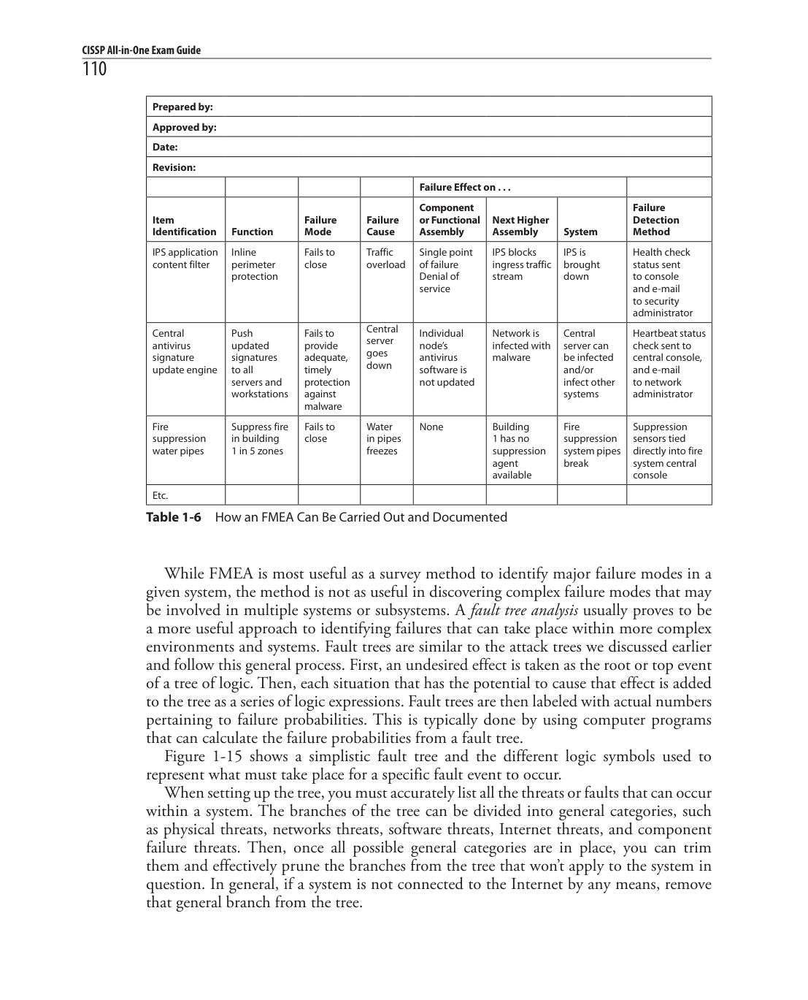
Table 1-6How an FMEA Can Be Carried Out and Documented
While FMEA is most useful as a survey method to identify major failure modes in a given system, the method is not as useful in discovering complex failure modes that may be involved in multiple systems or subsystems. Afault tree analysisusually proves to be a more useful approach to identifying failures that can take place within more complex environments and systems. Fault trees are similar to the attack trees we discussed earlier and follow this general process. First, an undesired effect is taken as the root or top event of a tree of logic. Then, each situation that has the potential to cause that effect is added to the tree as a series of logic expressions. Fault trees are then labeled with actual numbers pertaining to failure probabilities. This is typically done by using computer programs that can calculate the failure probabilities from a fault tree. Figure 1-15 shows a simplistic fault tree and the different logic symbols used to represent what must take place for a specific fault event to occur. When setting up the tree, you must accurately list all the threats or faults that can occur within a system. The branches of the tree can be divided into general categories, such as physical threats, networks threats, software threats, Internet threats, and component failure threats. Then, once all possible general categories are in place, you can trim them and effectively prune the branches from the tree that won’t apply to the system in question. In general, if a system is not connected to the Internet by any means, remove that general branch from the tree.
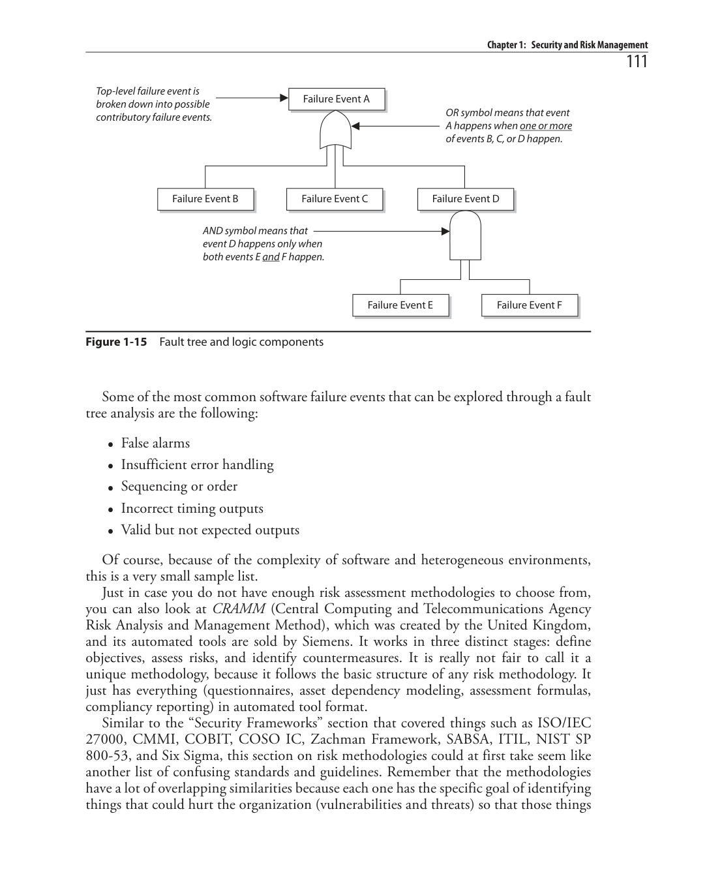
Figure 1-15Fault tree and logic components
Some of the most common software failure events that can be explored through a fault tree analysis are the following:
False alarms
- Insufficient error handling
- Sequencing or order
- Incorrect timing outputs
- Valid but not expected outputs
- Of course, because of the complexity of software and heterogeneous environments, this is a very small sample list. Just in case you do not have enough risk assessment methodologies to choose from, you can also look atCRAMM(Central Computing and Telecommunications Agency Risk Analysis and Management Method), which was created by the United Kingdom, and its automated tools are sold by Siemens. It works in three distinct stages: define objectives, assess risks, and identify countermeasures. It is really not fair to call it a unique methodology, because it follows the basic structure of any risk methodology. It just has everything (questionnaires, asset dependency modeling, assessment formulas, compliancy reporting) in automated tool format. Similar to the “Security Frameworks” section that covered things such as ISO/IEC 27000, CMMI, COBIT, COSO IC, Zachman Framework, SABSA, ITIL, NIST SP 800-53, and Six Sigma, this section on risk methodologies could at first take seem like another list of confusing standards and guidelines. Remember that the methodologies have a lot of overlapping similarities because each one has the specific goal of identifying things that could hurt the organization (vulnerabilities and threats) so that those things
can be addressed (risk reduced). What make these methodologies different from each other are their unique approaches and focuses. If you need to deploy an organizationwide risk management program and integrate it into your security program, you should follow the ISO/IEC 27005 or OCTAVE methods. If you need to focus just on IT security risks during your assessment, you can follow NIST SP 800-30. If you have a limited budget and need to carry out a focused assessment on an individual system or process, you can follow the Facilitated Risk Analysis Process. If you really want to dig into the details of how a security flaw within a specific system could cause negative ramifications, you could use Failure Modes and Effect Analysis or fault tree analysis. If you need to understand your company’s business risks, then you can follow the AS/NZS 4360 approach. So up to this point, we have accomplished the following items:
Developed a risk management policy
- Developed a risk management team
- Identified company assets to be assessed
- Calculated the value of each asset
- Identified the vulnerabilities and threats that can affect the identified assets
- Chose a risk assessment methodology that best fits our needs
- The next thing we need to figure out is if our risk analysis approach should be quantitative or qualitative in nature, which we will cover in the following section.
A risk assessment is used to gather data. A risk analysis examines the gathered data to produce results that can be acted upon.
Risk Analysis Approaches
The two approaches to risk analysis are quantitative and qualitative. Aquantitative risk analysisis used to assign monetary and numeric values to all elements of the risk analysis process. Each element within the analysis (asset value, threat frequency, severity of vulnerability, impact damage, safeguard costs, safeguard effectiveness, uncertainty, and probability items) is quantified and entered into equations to determine total and residual risks. It is more of a scientific or mathematical approach to risk analysis compared to qualitative. Aqualitative risk analysisuses a “softer” approach to the data elements of a risk analysis. It does not quantify that data, which means that it does not assign numeric values to the data so that it can be used in equations. As an example, the results of a quantitative risk analysis could be that the organization is at risk of losing $100,000 if a buffer overflow were exploited on a web server, $25,000 if a database were compromised, and $10,000 if a file server were compromised. A qualitative risk analysis would not present these findings in monetary values, but would assign ratings to the risks, as in Red, Yellow, and Green.
A quantitative analysis uses risk calculations that attempt to predict the level of monetary losses and the probability for each type of threat. Qualitative analysis does not use calculations. Instead, it is more opinion and scenario based and uses a rating system to relay the risk criticality levels. Quantitative and qualitative approaches have their own pros and cons, and each applies more appropriately to some situations than others. Company management and the risk analysis team, and the tools they decide to use, will determine which approach is best. In the following sections we will dig into the depths of quantitative analysis and then revisit the qualitative approach. We will then compare and contrast their attributes.
Automated Risk Analysis Methods
Collecting all the necessary data that needs to be plugged into risk analysis equations and properly interpreting the results can be overwhelming if done manually. Several automated risk analysis tools on the market can make this task much less painful and, hopefully, more accurate. The gathered data can be reused, greatly reducing the time required to perform subsequent analyses. The risk analysis team can also print reports and comprehensive graphs to present to management.
Remember that vulnerability assessments are different from risk assessments. A vulnerability assessment just finds the vulnerabilities (the holes). A risk assessment calculates the probability of the vulnerabilities being exploited and the associated business impact. The objective of these tools is to reduce the manual effort of these tasks, perform calculations quickly, estimate future expected losses, and determine the effectiveness and benefits of the security countermeasures chosen. Most automatic risk analysis products port information into a database and run several types of scenarios with different parameters to give a panoramic view of what the outcome will be if different threats come to bear. For example, after such a tool has all the necessary information inputted, it can be rerun several times with different parameters to compute the potential outcome if a large fire were to take place; the potential losses if a virus were to damage 40 percent of the data on the main file server; how much the company would lose if an attacker were to steal all the customer credit card information held in three databases; and so on. Running through the different risk possibilities gives a company a more detailed understanding of which risks are more critical than others, and thus which ones to address first.
Steps of a Quantitative Risk Analysis
Recapping the previous sections in this chapter, we have already carried out our risk assessment, which is the process of gathering data for a risk analysis. We have identified the assets that are to be assessed, associated a value to each asset, and identified the vulnerabilities and threats that could affect these assets. Now we need to carry out the risk analysis portion, which means that we need to figure out how to interpret all the data that was gathered during the assessment.
If we choose to carry out a quantitative analysis, then we are going to use mathematical equations for our data interpretation process. The most common equations used for this purpose are thesingle loss expectancy (SLE)and theannual loss expectancy (ALE). The SLE is a dollar amount that is assigned to a single event that represents the company’s potential loss amount if a specific threat were to take place. The equation is laid out as follows:
Asset Value × Exposure Factor (EF) = SLE
Theexposure factor(EF)represents the percentage of loss a realized threat could have on a certain asset. For example, if a data warehouse has the asset value of $150,000, it can be estimated that if a fire were to occur, 25 percent of the warehouse would be damaged, in which case the SLE would be $37,500:
Asset Value ($150,000) × Exposure Factor (25%) = $37,500
This tells us that the company could potentially lose $37,500 if a fire were to take place. But we need to know what our annual potential loss is, since we develop and use our security budgets on an annual basis. This is where the ALE equation comes into play. The ALE equation is as follows:
SLE × Annualized Rate of Occurrence (ARO) = ALE
Theannualized rate of occurrence(ARO)is the value that represents the estimated frequency of a specific threat taking place within a 12-month timeframe. The range can be from 0.0 (never) to 1.0 (once a year) to greater than 1 (several times a year) and anywhere in between. For example, if the probability of a fire taking place and damaging our data warehouse is once every 10 years, the ARO value is 0.1. So, if a fire taking place within a company’s data warehouse facility can cause $37,500 in damages, and the frequency (or ARO) of a fire taking place has an ARO value of 0.1 (indicating once in 10 years), then the ALE value is $3,750 ($37,500 × 0.1 = $3,750). The ALE value tells the company that if it wants to put in controls to protect the asset (warehouse) from this threat (fire), it can sensibly spend $3,750 or less per year to provide the necessary level of protection. Knowing the real possibility of a threat and how much damage, in monetary terms, the threat can cause is important in determining how much should be spent to try and protect against that threat in the first place. It would not make good business sense for the company to spend more than $3,750 per year to protect itself from this threat. Now that we have all these numbers, what do we do with them? Let’s look at the example in Table 1-7, which shows the outcome of a quantitative risk analysis. With this data, the company can make intelligent decisions on what threats must be addressed first because of the severity of the threat, the likelihood of it happening, and how much could be lost if the threat were realized. The company now also knows how much money it should spend to protect against each threat. This will result in good business decisions, instead of just buying protection here and there without a
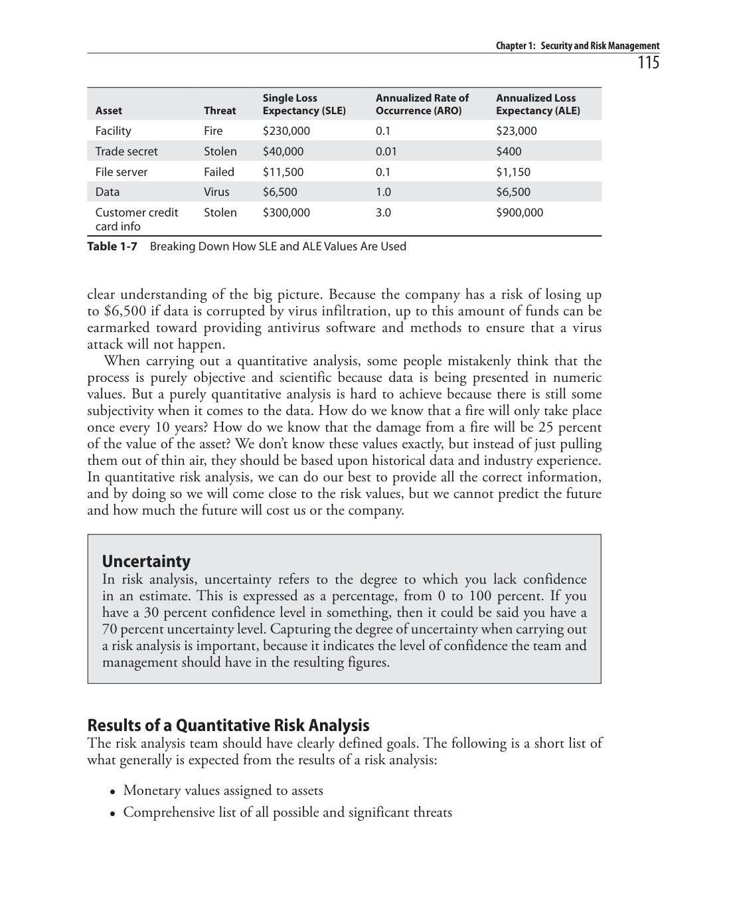
FacilityFire$230,0000.1$23,000
clear understanding of the big picture. Because the company has a risk of losing up to $6,500 if data is corrupted by virus infiltration, up to this amount of funds can be earmarked toward providing antivirus software and methods to ensure that a virus attack will not happen. When carrying out a quantitative analysis, some people mistakenly think that the process is purely objective and scientific because data is being presented in numeric values. But a purely quantitative analysis is hard to achieve because there is still some subjectivity when it comes to the data. How do we know that a fire will only take place once every 10 years? How do we know that the damage from a fire will be 25 percent of the value of the asset? We don’t know these values exactly, but instead of just pulling them out of thin air, they should be based upon historical data and industry experience. In quantitative risk analysis, we can do our best to provide all the correct information, and by doing so we will come close to the risk values, but we cannot predict the future and how much the future will cost us or the company.
Uncertainty
In risk analysis, uncertainty refers to the degree to which you lack confidence in an estimate. This is expressed as a percentage, from 0 to 100 percent. If you have a 30 percent confidence level in something, then it could be said you have a 70 percent uncertainty level. Capturing the degree of uncertainty when carrying out a risk analysis is important, because it indicates the level of confidence the team and management should have in the resulting figures.
Results of a Quantitative Risk Analysis
The risk analysis team should have clearly defined goals. The following is a short list of what generally is expected from the results of a risk analysis:
Monetary values assigned to assets
- Comprehensive list of all possible and significant threats
- Probability of the occurrence rate of each threat
- Loss potential the company can endure per threat in a 12-month time span
- Recommended controls
- Although this list looks short, there is usually an incredible amount of detail under each bullet item. This report will be presented to senior management, which will be concerned with possible monetary losses and the necessary costs to mitigate these risks. Although the reports should be as detailed as possible, there should be executive abstracts so senior management can quickly understand the overall findings of the analysis.
Qualitative Risk Analysis
Another method of risk analysis isqualitative, which does not assign numbers and monetary values to components and losses. Instead, qualitative methods walk through different scenarios of risk possibilities and rank the seriousness of the threats and the validity of the different possible countermeasures based on opinions. (A wide-sweeping analysis can include hundreds of scenarios.) Qualitative analysis techniques include judgment, best practices, intuition, and experience. Examples of qualitative techniques to gather data are Delphi, brainstorming, storyboarding, focus groups, surveys, questionnaires, checklists, one-on-one meetings, and interviews. The risk analysis team will determine the best technique for the threats that need to be assessed, as well as the culture of the company and individuals involved with the analysis. The team that is performing the risk analysis gathers personnel who have experience and education on the threats being evaluated. When this group is presented with a scenario that describes threats and loss potential, each member responds with their gut feeling and experience on the likelihood of the threat and the extent of damage that may result. This group explores a scenario of each identified vulnerability and how it would be exploited. The “expert” in the group, who is most familiar with this type of threat, should review the scenario to ensure it reflects how an actual threat would be carried out. Safeguards that would diminish the damage of this threat are then evaluated, and the scenario is played out for each safeguard. The exposure possibility and loss possibility can be ranked as high, medium, or low on a scale of 1 to 5 or 1 to 10. A common qualitative risk matrix is shown in Figure 1-16. Once the selected personnel rank the possibility of a threat happening, the loss potential, and the advantages of each safeguard, this information is compiled into a report and presented to management to help it make better decisions on how best to implement safeguards into the environment. The benefits of this type of analysis are that communication must happen among team members to rank the risks, evaluate the safeguard strengths, and identify weaknesses, and the people who know these subjects the best provide their opinions to management. Let’s look at asimpleexample of a qualitative risk analysis. The risk analysis team presents a scenario explaining the threat of a hacker accessing confidential information held on the five file servers within the company. The risk analysis team then distributes the scenario in a written format to a team of five people (the IT manager, database administrator, application programmer, system operator,
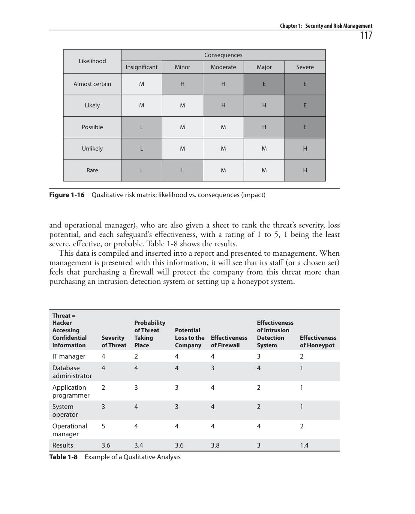
Figure 1-16Qualitative risk matrix: likelihood vs. consequences (impact)
and operational manager), who are also given a sheet to rank the threat’s severity, loss potential, and each safeguard’s effectiveness, with a rating of 1 to 5, 1 being the least severe, effective, or probable. Table 1-8 shows the results. This data is compiled and inserted into a report and presented to management. When management is presented with this information, it will see that its staff (or a chosen set) feels that purchasing a firewall will protect the company from this threat more than purchasing an intrusion detection system or setting up a honeypot system.
This is the result of looking at only one threat, and management will view the severity, probability, and loss potential of each threat so it knows which threats cause the greatest risk and should be addressed first.
The Delphi Technique
The Delphi technique is a group decision method used to ensure that each member gives an honest opinion of what he or she thinks the result of a particular threat will be. This avoids a group of individuals feeling pressured to go along with others’ thought processes and enables them to participate in an independent and anonymous way. Each member of the group provides his or her opinion of a certain threat and turns it in to the team that is performing the analysis. The results are compiled and distributed to the group members, who then write down their comments anonymously and return them to the analysis group. The comments are compiled and redistributed for more comments until a consensus is formed. This method is used to obtain an agreement on cost, loss values, and probabilities of occurrence without individuals having to agree verbally.
Quantitative vs. Qualitative
Each method has its advantages and disadvantages, some of which are outlined in Table1-9 for purposes of comparison. The risk analysis team, management, risk analysis tools, and culture of the company will dictate which approach—quantitative or qualitative—should be used. The goal of
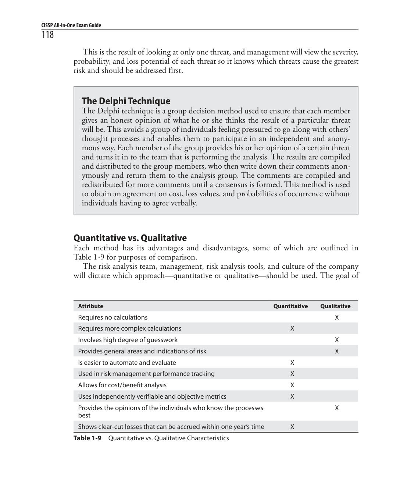
Requires no calculationsX
either method is to estimate a company’s real risk and to rank the severity of the threats so the correct countermeasures can be put into place within a practical budget. Table 1-9 refers to some of the positive aspects of the quantitative and qualitative approaches. However, not everything is always easy. In deciding to use either a quantitative or qualitative approach, the following points might need to be considered.
Quantitative Cons:
Calculations can be complex. Can management understand how these values
- were derived?
Without automated tools, this process is extremely laborious.
- More preliminary work is needed to gather detailed information about the
- environment.
Standards are not available. Each vendor has its own way of interpreting the
- processes and their results.
Qualitative Cons:
The assessments and results are subjective and opinion based.
- Eliminates the opportunity to create a dollar value for cost/benefit discussions.
- Hard to develop a security budget from the results because monetary values are
- not used.
Standards are not available. Each vendor has its own way of interpreting the
- processes and their results.
Since a purely quantitative assessment is close to impossible and a purely qualitative process does not provide enough statistical data for financial decisions, these two risk analysis approaches can be used in a hybrid approach. Quantitative evaluation can be used for tangible assets (monetary values), and a qualitative assessment can be used for intangible assets (priority values).
Protection Mechanisms
The next step is to identify the current security mechanisms and evaluate their effectiveness. This section addresses identifying and choosing the right countermeasures for computer systems. It gives the best attributes to look for and the different cost scenarios to investigate when comparing different types of countermeasures. The end product of the analysis of choices should demonstrate why the selected control is the most advantageous to the company.
Control Selection
A security control must make good business sense, meaning it is cost effective (its benefit outweighs its cost). This requires another type of analysis: acost/benefit analysis. A commonly used cost/benefit calculation for a given safeguard (control) is
(ALE before implementing safeguard) – (ALE after implementing safeguard) – (annual cost of safeguard) = value of safeguard to the company
For example, if the ALE of the threat of a hacker bringing down a web server is $12,000 prior to implementing the suggested safeguard, and the ALE is $3,000 after implementing the safeguard, while the annual cost of maintenance and operation of the safeguard is $650, then the value of this safeguard to the company is $8,350 each year. The cost of a countermeasure is more than just the amount filled out on the purchase order. The following items should be considered and evaluated when deriving the full cost of a countermeasure:
Product costs
- Design/planning costs
- Implementation costs
- Environment modifications
- Compatibility with other countermeasures
- Maintenance requirements
- Testing requirements
- Repair, replacement, or update costs
- Operating and support costs
- Effects on productivity
- Subscription costs
- Extra man-hours for monitoring and responding to alerts
- Many companies have gone through the pain of purchasing new security products without understanding that they will need the staff to maintain those products. Although tools automate tasks, many companies were not even carrying out these tasks before, so they do not save on man-hours, but many times require more hours. For example, Company A decides that to protect many of its resources, purchasing an IDS is warranted. So, the company pays $5,500 for an IDS. Is that the total cost? Nope. This software should be tested in an environment that is segmented from the production environment to uncover any unexpected activity. After this testing is complete and the security group feels it is safe to insert the IDS into its production environment, the security group must install the monitoring management software, install the sensors, and properly direct the communication paths from the sensors to the management console. The security group may also need to reconfigure the routers to redirect traffic flow, and it definitely needs to
ensure that users cannot access the IDS management console. Finally, the security group should configure a database to hold all attack signatures and then run simulations. Costs associated with an IDS alert response should most definitely be considered. Now that Company A has an IDS in place, security administrators may need additional alerting equipment such as smartphones. And then there are the time costs associated with a response to an IDS event. Anyone who has worked in an IT group knows that some adverse reaction almost always takes place in this type of scenario. Network performance can take an unacceptable hit after installing a product if it is an inline or proactive product. Users may no longer be able to access the Unix server for some mysterious reason. The IDS vendor may not have explained that two more service patches are necessary for the whole thing to work correctly. Staff time will need to be allocated for training and to respond to all of the alerts (true or false) the new IDS sends out. So, for example, the cost of this countermeasure could be $23,500 for the product and licenses; $2,500 for training; $3,400 for testing; $2,600 for the loss in user productivity once the product is introduced into production; and $4,000 in labor for router reconfiguration, product installation, troubleshooting, and installation of the two service patches. The real cost of this countermeasure is $36,000. If our total potential loss was calculated at $9,000, we went over budget by 300 percent when applying this countermeasure for the identified risk. Some of these costs may be hard or impossible to identify before they are incurred, but an experienced risk analyst would account for many of these possibilities.
Functionality and Effectiveness of CountermeasuresThe risk analysis team must evaluate the safeguard’s functionality and effectiveness. When selecting a safeguard, some attributes are more favorable than others. Table 1-10 lists and describes attributes that should be considered before purchasing and committing to a security protection mechanism.
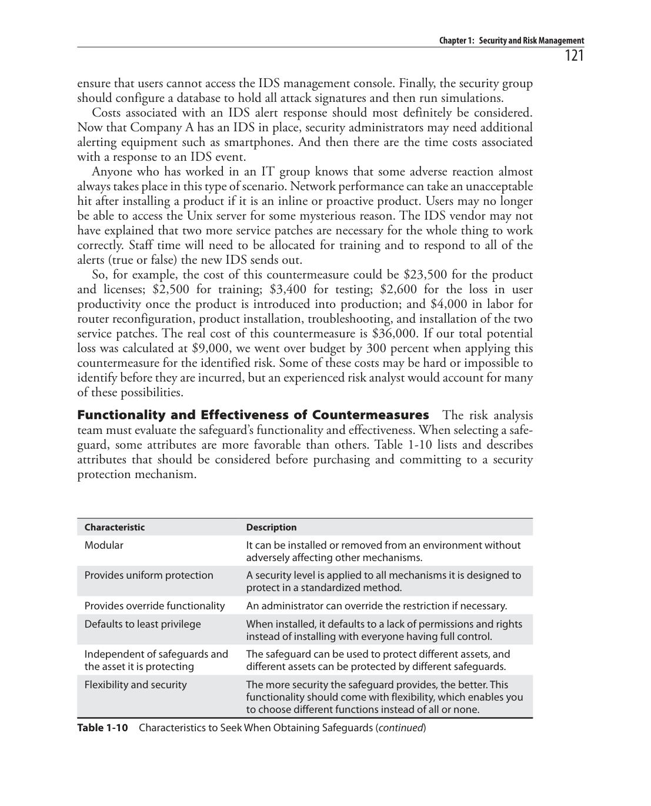
ModularIt can be installed or removed from an environment without
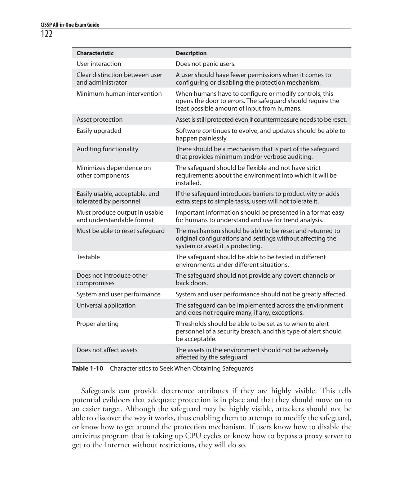
User interactionDoes not panic users.
Safeguards can provide deterrence attributes if they are highly visible. This tells potential evildoers that adequate protection is in place and that they should move on to an easier target. Although the safeguard may be highly visible, attackers should not be able to discover the way it works, thus enabling them to attempt to modify the safeguard, or know how to get around the protection mechanism. If users know how to disable the antivirus program that is taking up CPU cycles or know how to bypass a proxy server to get to the Internet without restrictions, they will do so.
Putting It Together
To perform a risk analysis, a company first decides what assets must be protected and to what extent. It also indicates the amount of money that can go toward protecting specific assets. Next, it must evaluate the functionality of the available safeguards and determine which ones would be most beneficial for the environment. Finally, the company needs to appraise and compare the costs of the safeguards. These steps and the resulting information enable management to make the most intelligent and informed decisions about selecting and purchasing countermeasures.
Total Risk vs. Residual Risk
The reason a company implements countermeasures is to reduce its overall risk to an acceptable level. As stated earlier, no system or environment is 100 percent secure, which means there is always some risk left over to deal with. This is calledresidual risk.
We Are Never Done
Only by reassessing the risks on a periodic basis can a statement of safeguard performance be trusted. If the risk has not changed and the safeguards implemented are functioning in good order, then it can be said that the risk is being properly mitigated. Regular risk management monitoring will support the information security risk ratings. Vulnerability analysis and continued asset identification and valuation are also important tasks of risk management monitoring and performance. The cycle of continued risk analysis is a very important part of determining whether the safeguard controls that have been put in place are appropriate and necessary to safeguard the assets and environment.
Residual risk is different fromtotal risk, which is the risk a company faces if it chooses not to implement any type of safeguard. A company may choose to take on total risk if the cost/benefit analysis results indicate this is the best course of action. For example, if there is a small likelihood that a company’s web servers can be compromised and the necessary safeguards to provide a higher level of protection cost more than the potential loss in the first place, the company will choose not to implement the safeguard, choosing to deal with the total risk. There is an important difference between total risk and residual risk and which type of risk a company is willing to accept. The following are conceptual formulas:
threats × vulnerability × asset value = total risk (threats × vulnerability × asset value) × controls gap = residual risk
You may also see these concepts illustrated as the following:
total risk – countermeasures = residual risk
The previous formulas are not constructs you can actually plug numbers into. They are instead used to illustrate the relation of the different items that make up risk in a conceptual manner. This means no multiplication or mathematical functions actually take place. It is a means of understanding what items are involved when defining either total or residual risk. During a risk assessment, the threats and vulnerabilities are identified. The possibility of a vulnerability being exploited is multiplied by the value of the assets being assessed, which results in the total risk. Once the controls gap (protection the control cannot provide) is factored in, the result is the residual risk. Implementing countermeasures is a way of mitigating risks. Because no company can remove all threats, there will always be some residual risk. The question is what level of risk the company is willing to accept.
Handling Risk
Once a company knows the amount of total and residual risk it is faced with, it must decide how to handle it. Risk can be dealt with in four basic ways: transfer it, avoid it, reduce it, or accept it. Many types of insurance are available to companies to protect their assets. If a company decides the total risk is too high to gamble with, it can purchase insurance, which would transfer the riskto the insurance company. If a company decides to terminate the activity that is introducing the risk, this is known asrisk avoidance. For example, if a company allows employees to use instant messaging (IM), there are many risks surrounding this technology. The company could decide not to allow any IM activity by users because there is not a strong enough business need for its continued use. Discontinuing this service is an example of risk avoidance. Another approach isrisk mitigation, where the risk is reduced to a level considered acceptable enough to continue conducting business. The implementation of firewalls, training, and intrusion/detection protection systems or other control types represent types of risk mitigation efforts. The last approach is toaccept the risk, which means the company understands the level of risk it is faced with, as well as the potential cost of damage, and decides to just live with it and not implement the countermeasure. Many companies will accept risk when the cost/benefit ratio indicates that the cost of the countermeasure outweighs the potential loss value. A crucial issue with risk acceptance is understanding why this is the best approach for a specific situation. Unfortunately, today many people in organizations are accepting risk and not understanding fully what they are accepting. This usually has to do with the relative newness of risk management in the security field and the lack of education and experience in those personnel who make risk decisions. When business managers are charged with the responsibility of dealing with risk in their department, most of the time they will accept whatever risk is put in front of them because their real goals pertain to
getting a project finished and out the door. They don’t want to be bogged down by this silly and irritating security stuff. Risk acceptance should be based on several factors. For example, is the potential loss lower than the countermeasure? Can the organization deal with the “pain” that will come with accepting this risk? This second consideration is not purely a cost decision, but may entail non cost issues surrounding the decision. For example, if we accept this risk, we must add three more steps in our production process. Does that make sense for us? Or if we accept this risk, more security incidents may arise from it, and are we prepared to handle those? The individual or group accepting risk must also understand the potential visibility of this decision. Let’s say a company has determined that it does not need to protect customers’ first names, but it does have to protect other items like Social Security numbers, account numbers, and so on. So these current activities are in compliance with the regulations and laws, but what if your customers find out you are not properly protecting their names and they associate such things with identity fraud because of their lack of education on the matter? The company may not be able to handle this potential reputation hit, even if it is doing all it is supposed to be doing. Perceptions of a company’s customer base are not always rooted in fact, but the possibility that customers will move their business to another company is a potential fact your company must comprehend. Figure 1-17 shows how a risk management program can be set up, which ties together all the concepts covered in this section.
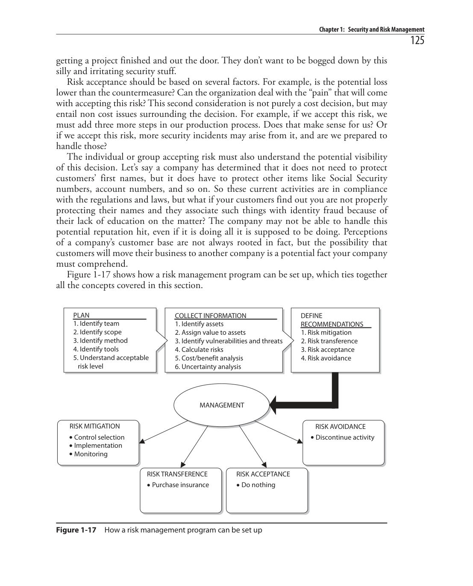
Figure 1-17How a risk management program can be set up
Outsourcing
More organizations are outsourcing business functions to allow them to focus on their core business functions. Companies use hosting companies to maintain websites and e-mail servers, service providers for various telecommunication connections, disaster recovery companies for co-location capabilities, cloud computing providers for infrastructure or application services, developers for software creation, and security companies to carry out vulnerability management. It is important to realize that while you can outsource functionality, you cannot outsource risk. When your company is using these third-party companies for these various services, your company can still be ultimately responsible if something like a data breach takes place. Let’s look at some things an organization should do to reduce its risk when it comes to outsourcing.
Review the service provider’s security program
- Conduct onsite inspection and interviews
- Review contracts to ensure security and protection levels are agreed upon
- Ensure service level agreements are in place
- Review internal and external audit reports and third-party reviews
- Review references and communicate with former and existing customers
- Review Better Business Bureau reports
- Ensure they have a business continuity plan (BCP) in place
- Implement a nondisclosure agreement (NDA)
- Understand provider’s legal and regulatory requirements
- Require a Statement on Auditing Standards (SAS) 70 audit report
SAS 70 is an internal controls audit carried out by a third-party auditing organization.
Outsourcing is prevalent within organizations today but is commonly forgotten about when it comes to security and compliance requirements. It may be economical to outsource certain functionalities, but if this allows security breaches to take place, it can turn out to be a very costly decision.
Risk Management Frameworks
We have covered a lot of material dealing with risk management in general and risk assessments in particular. By now, you may be asking yourself, “How does this all fit together into an actionable process?” This is where frameworks come to the rescue. The Oxford English Dictionarydefinesframeworkas a basic structure underlying a system, concept, or text. By combining this with our earlier definition of risk management, we
can define arisk management framework (RMF)as a structured process that allows an organization to identify and assess risk, reduce it to an acceptable level, and ensure that it remains at that level. In essence, an RMF is a structured approach to risk management. As you might imagine, there is no shortage of RMFs out there. What is important to you as a security professional is to ensure your organization has an RMF that works for you. That being said, there are some frameworks that have enjoyed widespread success and acceptance (see sidebar). You should at least be aware of these, and ideally adopt (and perhaps modify) one of them to fit your particular needs.
Commonly Accepted Risk Management Frameworks
NIST RMF (SP 800-37r1)U.S. federal government agencies are required
- to implement the provisions of this document. It takes a systems life-cycle approach to risk management and focuses on certification and accreditation of information systems. Many public and corporate organizations have adopted it directly, or with some modifications.
ISO 31000:2009This international standard takes a very unique tack
- on risk management by focusing on uncertainty that leads to unanticipated effects. In essence, this standard acknowledges that there are things outside our control and that these can have negative (e.g., financial loss) or positive (e.g., business opportunity) consequences. Unlike the NIST RMF, this framework is not focused on information systems, but can be applied more broadly to an organization.
ISACA Risk ITThis framework, developed by ISACA in collaboration with
- a working group of academic and corporate risk professionals, aims at bridging the gap between generic frameworks such as ISO 31000 and IT-centric ones such as NIST’s. Unsurprisingly, it is very well integrated with COBIT, which was also developed by ISACA, as discussed earlier in this chapter.
COSO Enterprise Risk Management—Integrated FrameworkOriginally
- published in 2004, this framework is currently undergoing a full review. It is a generic (i.e., not IT-centric) framework used by management and therefore takes a decidedly top-down approach. This framework can be thought of as being a superset of the COSO Internal Control—Integrated Framework we discussed earlier in this chapter.
In this section, we will focus our discussion on the NIST risk management framework, SP 800-37, Revision 1, “Guide for Applying the Risk Management Framework to Federal Information Systems,” since it incorporates the most important components that you should know as a security professional. It is important to keep in mind, however, that this framework is geared toward federal government entities and may have to be modified to
fit your own needs. The NIST RMF outlines the following six-step process of applying the RMF, each of which will be addressed in turn in the following sections:
1.Categorize information system. 2.Select security controls. 3.Implement security controls. 4.Assess security controls. 5.Authorize information system. 6.Monitor security controls.
Categorize Information System
The first step is to identify and categorize the information system. What does this mean? First, you have to identify what you have in terms of systems, subsystems, and boundaries. For example, if you have a customer relationship management (CRM) information system, you need to inventory its components (e.g., software, hardware), any subsystems it may include (e.g., bulk e-mailer, customer analytics), and its boundaries (e.g., interface with the corporate mail system). You also need to know how this system fits into your organization’s business process, how sensitive it is, and who owns it and the data within it. Other questions you may ask are
How is the information system integrated into the enterprise architecture?
- What types of information are processed, stored, and transmitted by the system?
- Are there regulatory or legal requirements applicable to the information system?
- How is the system interconnected to others?
- What is the criticality of this information system to the business?
- Clearly, there are many other questions you would want to ask as you categorize the system, so this list is not meant to be all-inclusive. You could use this as a starting point, but you really should have your own list of questions that you use consistently across all of your organization’s information systems. Doing so ensures that you don’t forget any important details, or that if you do, it only happens once (presuming you then add it to your list, of course). At the end of this step, you should have all the information you need in order to determine what countermeasures you can apply to manage your risk.
Select Security Controls
Recall that we already defined a security control or countermeasure as a mechanism that is put in place to mitigate (reduce) a potential risk. It then makes sense to assess our risk exposure before we select security controls for our information systems. In this step, there is an inherent assumption that you have already performed a risk assessment and have identified a number ofcommon controlsacross your organization. An example of this are so-called “gold master” images that are applied to all workstations and profiles that
are installed on mobile devices. These common controls ensure that the entire enterprise has a common baseline. As you consider a new system, you have to determine if there are any risks that are specific to it or are introduced into your overall architecture by the introduction of this system. This means that you will likely conduct another risk assessment that looks at both this new system and its effects on the larger ecosystem. Having done this, you compare the results of this assessment with the common controls in your organization and determine if you need to modify any of these (i.e., createhybrid controls) or develop brand-new ones (i.e., createsystem-specific controls) in order to maintain the security baseline. Finally, you need to address how these new controls (if any) integrate into your continuous monitoring strategy that tells you whether or not your security is maintained over time.
Implement Security Controls
There are two key tasks in this step: implementation and documentation. The first part is very straightforward. For example, if you determined in the previous step that you need to add a rule to your intrusion prevention system to mitigate a risk, you implement that rule. Simple. The part with which many of us struggle is the documentation of this change. The documentation is important for two obvious reasons. First, it allows everyone to understand what controls exist, where, and why. Have you ever inherited a system that is configured in a seemingly nonsensical way? You try to understand why certain parameters or rules exist but hesitate to change them because the system might fail. Likely, this was the result of either improper documentation or (even worse) a successful attack. The second reason why documentation is important is that it allows us to fully integrate the controls into the overall assessment and monitoring plan. Failing to do this invites having controls that quietly become obsolete and ineffective over time and result in undocumented risks.
Assess Security Controls
The security controls we implement are useful to our overall risk management effort only insofar as we can assess them. It is absolutely essential to our organizations to have a comprehensive plan that assesses all security controls (common, hybrid, and systemspecific) with regard to the risks they are meant to address. This plan must be reviewed and approved by the appropriate official(s), and it must be exercised. To execute an assessment plan, you will, ideally, identify an assessor who is both competent and independent from the team that implemented the controls. This person must act as an honest broker that not only assesses the effectiveness of the controls, but also ensures the documentation is appropriate for the task. For this reason, it is important to include all necessary assessment materials in the plan. The assessment will determine whether or not the controls are effective. If they are, then the results are documented in the report so that they are available as references for the next assessment. If the controls are not effective, then the report documents the results, the remediation actions that were taken to address the shortcomings, and the outcome of the reassessment. Finally, the appropriate security plans are updated to include the findings and recommendations of the assessment.
Authorize Information System
As we already discussed, no system is ever 100 percent risk-free. At this stage in the RMF, we present the results of both our risk and controls assessments to the appropriate decision-maker in order to get approval to connect our information system into our broader architecture and operate it. This person (or group) determines whether the risk exposure is acceptable to the organization. This normally requires a review of a plan of action that addresses how the organization will deal with the remaining weaknesses and deficiencies in the information system. In many organizations this authorization is given for a set period of time, which is usually tied to the milestones in the plan of action.
Monitor Security Controls
These milestones we just mentioned are a key component of the monitoring or continuous improvement stage of the RMF. At a minimum, we must periodically look at all our controls and determine whether they are still effective. Has the threat changed its tactics, techniques, and procedures (TTPs)? Have new vulnerabilities been discovered? Has an undocumented/unapproved change to our configuration altered our risk equations? These are only some of the issues that we address through ongoing monitoring and continuous improvement.
Business Continuity and Disaster Recovery
Though we strive to drive down the risks of negative effects in our organizations, we can be sure that sooner or later an event will slip through and cause negative impacts. Ideally, the losses are contained and won’t affect the major business efforts. However, as security professionals we need to have plans in place for when the unthinkable happens. Under those extreme (and sometimes unpredictable) conditions, we need to ensure that our organizations continue to operate at some minimum acceptable threshold capacity and quickly bounce back to full productivity. The goal ofdisaster recoveryis to minimize the effects of a disaster or disruption. It means taking the necessary steps to ensure that the resources, personnel, and business processes are able to resume operation in a timely manner. This is different fromcontinuity planning, which provides methods and procedures for dealing with longer-term outages and disasters. The goal of adisaster recovery plan (DRP)is to handle the disaster and its ramifications right after the disaster hits; the disaster recovery plan is usually very information technology (IT) focused. A disaster recovery plan is carried out when everything is still in emergency mode and everyone is scrambling to get all critical systems back online. Abusiness continuity plan (BCP)takes a broader approach to the problem. It can include getting critical systems to another environment while repair of the original facilities is under way, getting the right people to the right places during this time, and performing business in a different mode until regular conditions are back in place. It also involves dealing with customers, partners, and shareholders through different channels until everything returns to normal. So, disaster recovery deals with, “Oh my goodness, the sky is falling,” and continuity
planning deals with, “Okay, the sky fell. Now, how do we stay in business until someone can put the sky back where it belongs?”
Whiledisasterrecoveryandbusinesscontinuityplanningaredirectedatthe development of plans,business continuity management (BCM)is the holistic management process that should cover both of them. BCM provides a framework for integrating resilience with the capability for effective responses in a manner that protects the interests of an organization’s key stakeholders. The main objective of BCM is to allow the organization to continue to perform business operations under various conditions.
Business Continuity Management
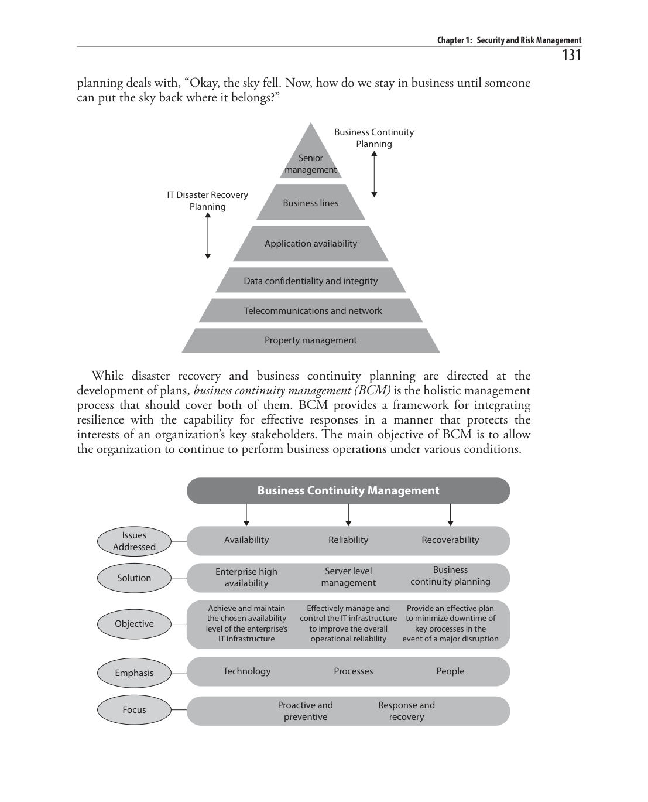
Diagram (p. 165)
Certain characteristics run through many of the chapters in this book: availability, integrity, and confidentiality. Here, we point out that integrity and confidentiality must be considered not only in everyday procedures, but also in those procedures undertaken immediately after a disaster or disruption. For instance, it may not be appropriate to leave a server that holds confidential information in one building while everyone else moves to another building. Equipment that provides secure VPN connections may be destroyed and the team might respond by focusing on enabling remote access functionality while forgetting about the needs of encryption. In most situations the company is purely focused on getting back up and running, thus focusing on functionality. If security is not integrated and implemented properly, the effects of the physical disaster can be amplified as hackers come in and steal sensitive information. Many times a company is much more vulnerableaftera disaster hits, because the security services used to protect it may be unavailable or operating at a reduced capacity. Therefore, it is important that if the business has secret stuff, it stayssecret. Availability is one of the main themes behind business continuity planning, in that it ensures that the resources required to keep the business going will continue to be available to the people and systems that rely upon them. This may mean backups need to be done religiously and that redundancy needs to be factored into the architecture of the systems, networks, and operations. If communication lines are disabled or if a service is rendered unusable for any significant period of time, there must be a quick and tested way of establishing alternative communications and services. We will be diving into the many ways organizations can implement availability solutions for continuity and recovery purposes throughout this section. When looking at business continuity planning, some companies focus mainly on backing up data and providing redundant hardware. Although these items are extremely important, they are just small pieces of the company’s overall operations pie. Hardware and computers need people to configure and operate them, and data is usually not useful unless it is accessible by other systems and possibly outside entities. Thus, a larger picture of how the various processes within a business work together needs to be understood. Planning must include getting the right people to the right places, documenting the necessary configurations, establishing alternative communications channels (voice and data), providing power, and making sure all dependencies are properly understood and taken into account. It is also important to understand how automated tasks can be carried out manually, if necessary, and how business processes can be safely altered to keep the operation of the company going. This may be critical in ensuring the company survives the event with the least impact to its operations. Without this type of vision and planning, when a disaster hits, a company could have its backup data and redundant servers physically available at the alternative facility, but the people responsible for activating them may be standing around in a daze, not knowing where to start or how to perform in such a different environment.
Business Continuity Planning
Preplanned procedures allow an organization to
Provide an immediate and appropriate response to emergency situations
- Protect lives and ensure safety
- Reduce business impact
- Resume critical business functions
- Work with outside vendors and partners during the recovery period
- Reduce confusion during a crisis
- Ensure survivability of the business
- Get “up and running” quickly after a disaster
Standards and Best Practices
Although no specific scientific equation must be followed to create continuity plans, certain best practices have proven themselves over time. The National Institute of Standards and Technology is responsible for developing best practices and standards as they pertain to U.S. government and military environments. It is common for NIST to document the requirements for these types of environments, and then everyone else in the industry uses NIST’s documents as guidelines. So these are “musts” for U.S. government organizations and “good to have” for other, nongovernment entities. NIST outlines the following steps in SP 800-34, Revision 1, “Continuity Planning Guide for Federal Information Systems”:
1.Develop the continuity planning policy statement.Write a policy that provides the guidance necessary to develop a BCP and that assigns authority to the necessary roles to carry out these tasks. 2.Conduct the business impact analysis (BIA).Identify critical functions and systems and allow the organization to prioritize them based on necessity. Identify vulnerabilities and threats, and calculate risks. 3.Identify preventive controls.Once threats are recognized, identify and implement controls and countermeasures to reduce the organization’s risk level in an economical manner. 4.Create contingency strategies.Formulate methods to ensure systems and critical functions can be brought online quickly. 5.Develop an information system contingency plan.Write procedures and guidelines for how the organization can still stay functional in a crippled state.
6.Ensure plan testing, training, and exercises.Test the plan to identify deficiencies in the BCP, and conduct training to properly prepare individuals on their expectedtasks. 7.Ensure plan maintenance.Put in place steps to ensure the BCP is a living document that is updated regularly.
Although the NIST SP 800-34 document deals specifically with IT contingency plans, these steps are similar when creating enterprise-wide BCPs and BCM programs.
Since BCM is so critical, it is actually addressed by other standards-based organizations, listed here:
ISO/IEC 27031:2011Guidelines for information and communications technology readiness for business continuity. This ISO/IEC standard is a component of the overall ISO/IEC 27000 series.
ISO 22301:2012International standard for business continuity management systems. The specification document against which organizations will seek certification. This standard replaced BS 25999-2.
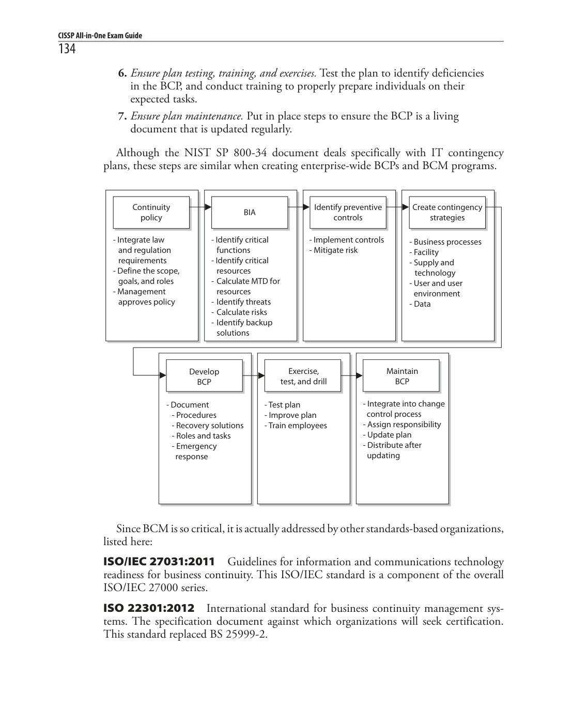
Diagram (p. 168)
Business Continuity Institute’s Good Practice Guidelines (GPG)BCM best practices, which are broken down into the following management and technical practices.
Management Practices:
Policy and Program Management
- Embedding BCM in the Organization’s Culture
- Technical Practices:
Understanding the Organization
- Determining BCM Strategy
- Developing and Implementing a BCM Response
- Exercising, Maintaining, and Reviewing
- DRIInternationalInstitute’sProfessionalPracticesforBusiness Best practices and framework to allow for BCM processes, ContinuityPlanners which are broken down into the following sections:
Program Initiation and Management
- Risk Evaluation and Control
- Business Impact Analysis
- Business Continuity Strategies
- Emergency Response and Operations
- Plan Implementation and Documentation
- Awareness and Training Programs
- Business Continuity Plan Exercise, Audit, and Maintenance
- Crisis Communications
- Coordination with External Agencies
- Why are there so many sets of best practices and which is the best for your organization? If your organization is part of the U.S. government or a government contracting company, then you need to comply with the NIST standards. If your organization is in Europe or your company does business with other companies in Europe, then you might need to follow the BSI’s list of standard requirements. While we are not listing all of them here, there are other country-based BCM standards that your company might need to comply with if it is residing in or does business in one of those specific countries. If your organization needs to get ISO certified, then ISO/IEC 27031 and ISO 22301 are
the standards to follow. While the first of these is focused on IT, the second is broader in scope and addresses the needs of the entire organization. So some of these best practices/standards have a specific focus (DRP, BCP, government, technology), some are still evolving, and some directly compete against each other because BCM is a big and growing industry. There is a lot of overlap between them all because they all have one main focus of keeping the company in business after something bad happens. Your company’s legal and regulatory requirements commonly point toward one of these best practice standards, so find out these specifics before hitching your wagon to one specific set of practices. For example, if your company is a government contracting company that works with the U.S. government, then you follow NIST because that is the “checklist” your auditors will most likely follow and grade you against. If your company does business internationally, then following the ISO list of requirements would probably be the best bet.
Making BCM Part of the Enterprise Security Program
As we already explained, every company should have security policies, procedures, standards, and guidelines. People who are new to information security commonly think that this is one pile of documentation that addresses all issues pertaining to security, but it is more complicated than that—of course.
Understanding the Organization First
A company has no real hope of rebuilding itself and its processes after a disaster if it does not have a good understanding of how its organization works in the first place. This notion might seem absurd at first. You might think, “Well, of course a company knows how it works.” But you would be surprised at how difficult it is to fully understand an organization down to the level of detail required to rebuild it. Each individual may know and understand his or her little world within the company, but hardly anyone at any company can fully explain how each and every business process takes place. The Zachman Business Enterprise Framework, introduced earlier in this chapter, is one of the most comprehensive approaches to understanding a company’s architecture and all the pieces and parts that make it up. This framework breaks down the core portions of a corporate enterprise to illustrate the various requirements of every business process. It looks at the data, function, network, people, time, and motivation components of the enterprise’s infrastructure and how they are tied to the roles within the company. The beauty of this framework is that it dissects business processes down to the atomic level and shows the necessary interdependencies that exist, all of which must be working correctly for effective and efficient processes to be carried out. It would be very beneficial for a BCP team to use this type of framework to understand the core components of an organization, because the team’s responsibility is to make sure the organization can be rebuilt if need be.
An enterprise security program is made up of many different disciplines. The Common Body of Knowledge (CBK) for the CISSP exam did not just fall out of the sky one day, and it was not just made up by some lonely guys sitting in a room. The CBK is broken down into the eight high-level disciplines of any enterprise security program (Security and Risk Management, Asset Security, Security Engineering, Communication and Network Security, Identity and Access Management, Security Assessment and Testing, Security Operations, and Software Development Security). These top-tier disciplines are then broken down into supporting subcomponents. What this means is that every company actually needs to haveat leasteight sets of policies, standards, guidelines, and procedures—one per top-tier discipline. We will go more in depth into what should be encapsulated in a BCP policy in a later section, but for now let’s understand why it has to be integrated into the security program as a whole. Business continuity should be a part of the security program and business decisions, as opposed to being an entity that stands off in a corner by itself. The BCM team will be responsible for putting Humpty Dumpty back together again, so it better understand all the pieces and parts that make up Humpty Dumptybeforeit goes falling off a wall. Business continuity planning ought to be fully integrated into the organization as a regular management process, just like auditing or strategic planning or other “normal” processes. Instead of being considered an outsider, BCP should be “part of the team.” Further, final responsibility for BCP should belong not to the BCP team or its leader, but to a high-level executive manager, preferably a member of the executive board. This will reinforce the image and reality of continuity planning as a function seen as vital to the organizational chiefs. By analyzing and planning for potential disruptions to the organization, the BCP team can assist such other business disciplines in their own efforts to effectively plan for and respond effectively and with resilience to emergencies. Given that the ability to respond depends on operations and management personnel throughout the organization, such capability should be developed organization-wide. It should extend throughout every location of the organization and up the employee ranks to top-tier management. As such, the BCP program needs to be a living entity. As a company goes through changes, so should the program, thereby ensuring it stays current, usable, and effective. When properly integrated with change management processes, the program stands a much better chance of being continually updated and improved upon. Business continuity is a foundational piece of an effective security program and is critical to ensuring relevance in time of need. A very important question to ask when first developing a BCP iswhyit is being developed. This may seem silly and the answer may at first appear obvious, but that is not always the case. You might think that the reason to have these plans is to deal with an unexpected disaster and to get people back to their tasks as quickly and as safely as possible, but the full story is often a bit different. Why are most companies in business? To make money and be profitable. If these are usually the main goals of businesses, then any BCP needs to be developed to help achieve and, more importantly, maintain these goals. The main reason to develop these plans in the first place is to reduce the risk of
financial loss by improving the company’s ability to recover and restore operations. This encompasses the goals of mitigating the effects of the disaster. Not all organizations are businesses that exist to make profits. Government agencies, military units, nonprofit organizations, and the like exist to provide some type of protection or service to a nation or society. While a company must create its BCP to ensure that revenue continues to come in so it can stay in business, other types of organizations must create their BCPs to make sure they can still carry out their critical tasks. Although the focus and business drivers of the organizations and companies may differ, their BCPs often will have similar constructs—which is to get their critical processes up and running.
Protecting what is most important to a company is rather difficult if what is most important is not first identified. Senior management is usually involved with this step because it has a point of view that extends beyond each functional manager’s focus area of responsibility. The company’s BCP should define the company’s critical mission and business functions. The functions must have priorities set upon them to indicate which is most crucial to a company’s survival. As stated previously, for many companies, financial operations are most critical. As an example, an automotive company would be affected far more seriously if its credit and loan services were unavailable for a day than if, say, an assembly line went down for a day, since credit and loan services are where it generates the biggest revenues. For other organizations, customer service might be the most critical area, to ensure that order processing is not negatively affected. For example, if a company makes heart pacemakers and its physician services department is unavailable at a time when an operating room surgeon needs to contact it because of a complication, the results could be disastrous for the patient. The surgeon and the company would likely be sued, and the company would likely never be able to sell another pacemaker to that surgeon, her colleagues, or perhaps even the patient’s health maintenance organization (HMO) ever again. It would be very difficult to rebuild reputation and sales after something like that happened. Advanced planning for emergencies covers issues that were thought of and foreseen. Many other problems may arise that are not covered in the plan; thus, flexibility in the plan is crucial. The plan is a systematic way of providing a checklist of actions that should take place right after a disaster. These actions have been thought through to help the people involved be more efficient and effective in dealing with traumatic situations. The most critical part of establishing and maintaining a current BCP is management support. Management must be convinced of the necessity of such a plan. Therefore, a business case must be made to obtain this support. The business case may include current vulnerabilities, regulatory and legal obligations, the current status of recovery plans, and recommendations. Management is mostly concerned with cost/benefit issues, so preliminary numbers need to be gathered and potential losses estimated. A cost/benefit analysis should
include shareholder, stakeholder, regulatory, and legislative impacts, as well as those on products, services, and personnel. The decision of how a company should recover is commonly a business decision and should always be treated as such.
BCP Project Components
Before everyone runs off in 2,000 different directions at one time, let’s understand what needs to be done in the project initiation phase. This is the phase in which the company really needs to figure out what it is doing and why. Once management’s support is solidified, abusiness continuity coordinatormust be identified. This person will be the leader for the BCP team and will oversee the development, implementation, and testing of the business continuity and disaster recovery plans. It is best if this person has good social skills, is somewhat of a politician, and has a cape, because he will need to coordinate a lot of different departments and busy individuals who have their own agendas. This person needs to have direct access to management and have the credibility and authority to carry out leadership tasks. A leader needs a team, so aBCP committeeneeds to be put together. Management and the coordinator should work together to appoint specific, qualified people to be on this committee. The team must comprise people who are familiar with the different departments within the company, because each department is unique in its functionality and has distinctive risks and threats. The best plan is developed when all issues and threats are brought to the table and discussed. This cannot be done effectively with a few people who are familiar with only a couple of departments. Representatives from each department must be involved with not only the planning stages, but also the testing and implementation stages. The committee should be made up of representatives fromat leastthe following departments:
Business units
- Senior management
- IT department
- Security department
- Communications department
- Legal department
- If the BCP coordinator is a good management leader, she will understand that it is best to make these team members feel a sense of ownership pertaining to their tasks and roles. The people who develop the BCP should also be the ones who execute it. (If you knew that in a time of crisis you would be expected to carry out some critical tasks, you might pay more attention during the planning and testing phases.) This may entail making it very clear what the roles and responsibilities of team members are during a crisis and recovery, so that existing managers do not feel that their decision making is being overridden. The project must have proper authorization from the top.
The team must then work with the management staff to develop the ultimate goals of the plan, identify the critical parts of the business that must be dealt with first during a disaster, and ascertain the priorities of departments and tasks. Management needs to help direct the team on the scope of the project and the specific objectives.
While the term “BCP” actually applies to a plan and “BCM” applies to the overall management of continuity, these terms are commonly used interchangeably. The BCP effort has to result in a sustainable, long-term program that serves its purpose—assisting the organization in the event of a disaster. The effort must be well thought out and methodically executed. It must not be perceived as a mere “public relations” effort to make it simply appear that the organization is concerned about disaster response. The initiation process for the BCP program might include the following: Setting up a budget and staff for the program before the BCP process begins.
- Dedicated personnel and dedicated hours are essential for executing something as labor intensive as a BCP.
Assigning duties and responsibilities to the BCP coordinator and to
- representatives from all of the functional units of the organization.
Senior management kick-off of the BCP program with a formal announcement
- or, better still, an organization-wide meeting to demonstrate high-level support.
Awareness-raising activities to let employees know about the BCP program and
- to build internal support for it.
Establishment of skills training for the support of the BCP effort.
- The start of data collection from throughout the organization to aid in crafting
- various continuity options.
Putting into effect “quick wins” and gathering of “low-hanging fruit” to show
- tangible evidence of improvement in the organization’s readiness, as well as improving readiness.
After the successful execution of a BCP program, the organization should have an adequate level of response to an emergency. A desktop exercise that walks through the incident management steps that have been established should offer a scorecard of where the organization stands. From that point, the team can hold regular progress reviews to check the accuracy of readiness levels and program costs and to see if program milestones are being met. The BCP management team then can adjust the plan to any changes in meeting cost or schedule. To assist in this, the team should choose a project management tool or method to track progress or its lack.
Scope of the Project
At first glance, it might seem as though the scope and objectives are quite clear—protect the company. But it is not that simple. The high-level organizational requirements that the BCP should address, and the resources allocated for them, must be evaluated. You want to understand the focus and direction of a business before starting on risk assessment or continuity planning. This would include the organization’s plans for growth, reorganizing, or downsizing. Other major events in an organization to consider are changes in personnel levels; relocation of facilities; new suppliers; and introduction of new products, technologies, or processes. Obtaining hard numbers or estimates for any of these areas will make things smoother for the BCP team. Of course, due to the sensitivity of some information, some of this data may not be made available to the BCP team. In such cases, the team should realize that the lack of full information may make some of its findings less than fully accurate. Knowing how the overall organization is going to change will aid in drawing up the right contingency plans in the event of emergencies. Also, if the team identifies organizational requirements at the start and is in accord with top management on the identification and definition of such requirements, then it will be much easier to align the policy to the requirements. Many questions must be asked. For instance, is the team supposed to develop a BCP for just one facility or for more than one facility? Is the plan supposed to cover just large potential threats (hurricanes, tornadoes, floods) or deal with smaller issues as well (loss of a communications line, power failure, Internet connection failure)? Should the plan address possible terrorist attacks and other manmade threats? What is the threat profile of the company? If the scope of the project is not properly defined, how do you know when you are done? Then there’s resources—what personnel, time allocation, and funds is management willing to commit to the BCP program overall?
Most companies outline the scope of their BCP to encompass only the larger threats. The smaller threats are then covered by independent departmental contingency plans.
A frequent objection to a BCP program is that it is unlimited in its scope when it is applied to all the functions of an organization in one fell swoop. An alternative is to break up the program into manageable pieces and to place some aspects of the organization outside the scope of the BCP. Since the scope fundamentally affects what the plan will cover, the BCP team should consider the scope from the start of the project. Deciding whether and how to place a component of an organization outside the BCP scope can be tricky. In some cases, a product, service, or organizational component may remain within the scope, but at a reduced level of funding and activity. At other times, executives will have to decide whether to place a component outside the scope after an incident takes place—when the costs of reestablishing the component may outweigh the benefits. Senior executives, not BCP managers and planners, should make these kinds of decisions.
Enterprise-Wide BCP
The agreed-upon scope of the BCP will indicate if one or more facilities will be included in the plan. Most BCPs are developed to cover the enterprise as a whole, instead of dealing with only portions of the organization. In larger organizations, it can be helpful for each department to have its own specific contingency plan that will address its specific needs during recovery. These individual plans need to be compatible with the enterprise-wide BCP.
BCP Policy
TheBCP policysupplies the framework for and governance of designing and building the BCP effort. The policy helps the organization understand the importance of BCP by outlining the BCP’s purpose. It provides an overview of the principles of the organization and those behind BCP, and the context for how the BCP team will proceed. The contents of a policy include its scope, mission statement, principles, guidelines, and standards. The policy should draw on any existing policies if they are relevant. Note that a policy does not exist in a vacuum, but within a specific organization. Thus, in drawing up a policy, the team should examine the overall objectives and functions, including any business objectives, of the organization. The policy also should draw on standard “good practices” of similar organizations and professional standards bodies. The BCP team produces and revises the policy, although top-tier management is actually responsible for it. A policy should be revamped as needed when the operating environment in which the organization operates changes significantly, such as a major expansion in operations or a change in location. The process of drawing up a policy includes these steps:
1.Identify and document the components of the policy. 2.Identify and define policies of the organization that the BCP might affect. 3.Identify pertinent legislation, laws, regulations, and standards. 4.Identify “good industry practice” guidelines by consulting with industry experts. 5.Perform a gap analysis. Find out where the organization currently is in terms of continuity planning, and spell out where it wants to be at the end of the BCP process. 6.Compose a draft of the new policy. 7.Have different departments within the organization review the draft. 8.Incorporate the feedback from the departments into a revised draft. 9.Get the approval of top management on the new policy. 10.Publish a final draft, and distribute and publicize it throughout the organization.
Project Management
Sound project management processes, practices, and procedures are important for any organizational effort, and doubly so for BCP. Following accepted project management principles will help ensure effective management of the BCP process once it gets underway. BCP projects commonly run out of funds and resources before they are fully completed. This typically occurs for one or more of the following reasons: the scope of the project is much larger than the team estimated; the BCP team members are expected to still carry out their current daily tasks along with new BCP tasks; or some other project shifts in importance and requires the attention of the BCP team members. When technical people hear “risk management” they commonly think of security threats and technical solutions. Understanding therisk of a projectmust also be understood and properly planned for. If the scope of a project and the individual objectives that make up the scope are not properly defined, a lot of time and money can be easily wasted. The individual objectives of a project must be analyzed to ensure that each is actually attainable. A part of scope analysis that may prove useful is a SWOT analysis. SWOT stands forStrengths/Weaknesses/Opportunities/Threats, and its basic tenants are as follows:
StrengthsCharacteristics of the project team that give it an advantage
- over others
WeaknessesCharacteristics that place the team at a disadvantage
- relative to others
OpportunitiesElements that could contribute to the project’s success
- ThreatsElements that could contribute to the project’s failure
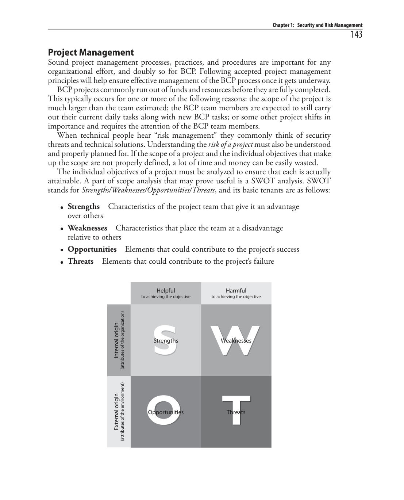
Diagram (p. 177)
A SWOT analysis can be carried out to ensure that the defined objectives within the scope can be accomplished and issues identified that could impede upon the necessary success and productivity required of the project as a whole. The BCP coordinator would need to implement some good old-fashioned project management skills, as listed in Table 1-11. A project plan should be developed that has the following components:
Objective-to-task mapping
- Resource-to-task mapping
- Workflows
- Milestones
- Deliverables
- Budget estimates
- Success factors
- Deadlines
- Once the project plan is completed, it should be presented to management for written approval before any further steps are taken. It is important to ensure that no assumptions are included in the plan. It is also important that the coordinator obtain permission to use the necessary resources to move forward.
Any early planning or policy documents should include a Definition of Terms, or Terms of Reference, namely a document that clearly defines the terminology used in the document. Clearly defining terms will avoid a great deal of confusion down the line by different groups, who might otherwise have varying definitions and assumptions about the common terms used in the continuity planning. Such a document should be treated as a formal deliverable and published early on in the process.
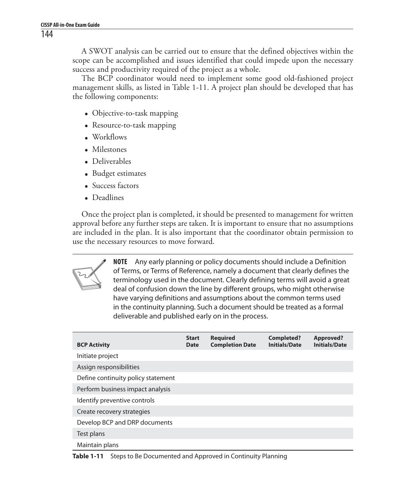
Initiate project
Business Continuity Planning Requirements
A major requirement for anything that has such far-reaching ramifications as business continuity planning is management support, as mentioned previously. It is critical that management understand what the real threats are to the company, the consequences of those threats, and the potential loss values for each threat. Without this understanding, management may only give lip service to continuity planning, and in some cases, that is worse than not having any plans at all because of the false sense of security it creates. Without management support, the necessary resources, funds, and time will not be devoted, which could result in bad plans that, again, may instill a false sense of security. Failure of these plans usually means a failure in management understanding, vision, and due-care responsibilities. Executives may be held responsible and liable under various laws and regulations. They could be sued by stockholders and customers if they do not practice due diligence and due care.Due diligencecan be defined as doing everything within one’s power to prevent a bad thing from happening. Examples of this would be setting appropriate policies, researching the threats and incorporating them into a risk management plan, and ensuring audits happen at the right times.Due care, on the other hand, means taking the precautions that a reasonable and competent person would take in the same situation. For example, someone who ignores a security warning and clicks through to a malicious website would fail to exercise due care.
Due diligence is normally associated with leaders, laws, and regulations. Due care is normally applicable to everyone and could be used to show negligence. Executives must fulfill all of their responsibilities when it comes to disaster recovery and business continuity items. Organizations that work within specific industries have strict regulatory rules and laws that they must abide by, and these should be researched and integrated into the BCP program from the beginning. For example, banking and investment organizations must ensure that even if a disaster occurs, their customers’ confidential information will not be disclosed to unauthorized individuals or be altered or vulnerable in any way. Disaster recovery, continuity development, and continuity planning work best in a top-down approach, not a bottom-up approach. This means that management, not the staff, should be driving the project. Many companies are running so fast to try to keep up with a dynamic and changing business world that they may not see the immediate benefit of spending time and resources on disaster recovery issues. Those individuals whodosee the value in these efforts may have a hard time convincing top management if management does not see a potential profit margin or increase in market share as a result. But if a disaster does hit and they did put in the effort to properly prepare, the result can literally be priceless. Today’s business world requires two important characteristics: the drive to produce a great product or service and get it to the market, and the insight and wisdom to know that unexpected trouble can easily find its way to your doorstep.
It is important that management set the overall goals of continuity planning, and it should help set the priorities of what should be dealt with first. Once management sets the goals and priorities, other staff members who are responsible for developing the different components of the BCP program can fill in the rest. However, management’s support does not stop there. It needs to make sure the plans and procedures developed are actually implemented. Management must make sure the plans stay updated and represent the real priorities—not simply those perceived—of a company, which change over time.
Business Impact Analysis (BIA)
Business continuity planning deals with uncertainty and chance. What is important to note here is that even though you cannot predict whether or when a disaster will happen, that doesn’t mean you can’t plan for it. Just because we are not planning for an earthquake to hit us tomorrow morning at 10a.m.doesn’t mean we can’t plan the activities required to successfully survive when an earthquake (or a similar disaster) does hit. The point of making these plans is to try to think of all the possible disasters that could take place, estimate the potential damage and loss, categorize and prioritize the potential disasters, and develop viable alternatives in case those events do actually happen. Abusiness impact analysis (BIA)is considered afunctional analysis, in which a team collects data through interviews and documentary sources; documents business functions, activities, and transactions; develops a hierarchy of business functions; and finally applies a classification scheme to indicate each individual function’s criticality level. But how do we determine a classification scheme based on criticality levels? The BCP committee must identify the threats to the company and map them to the following characteristics:
Maximum tolerable downtime and disruption for activities
- Operational disruption and productivity
- Financial considerations
- Regulatory responsibilities
- Reputation
- The committee will not truly understand all business processes, the steps that must take place, or the resources and supplies these processes require. So the committee must gather this information from the people who do know—department managers and specific employees throughout the organization. The committee starts by identifying the people who will be part of the BIA data-gathering sessions. The committee needs to identify how it will collect the data from the selected employees, be it through surveys, interviews, or workshops. Next, the team needs to collect the information by actually conducting surveys, interviews, and workshops. Data points obtained as part of the information gathering will be used later during analysis. It is important that the team members ask about how different tasks—whether processes, transactions, or services, along with any relevant dependencies—get accomplished within the organization. Process flow diagrams should be built, which will be used throughout the BIA and plan development stages.
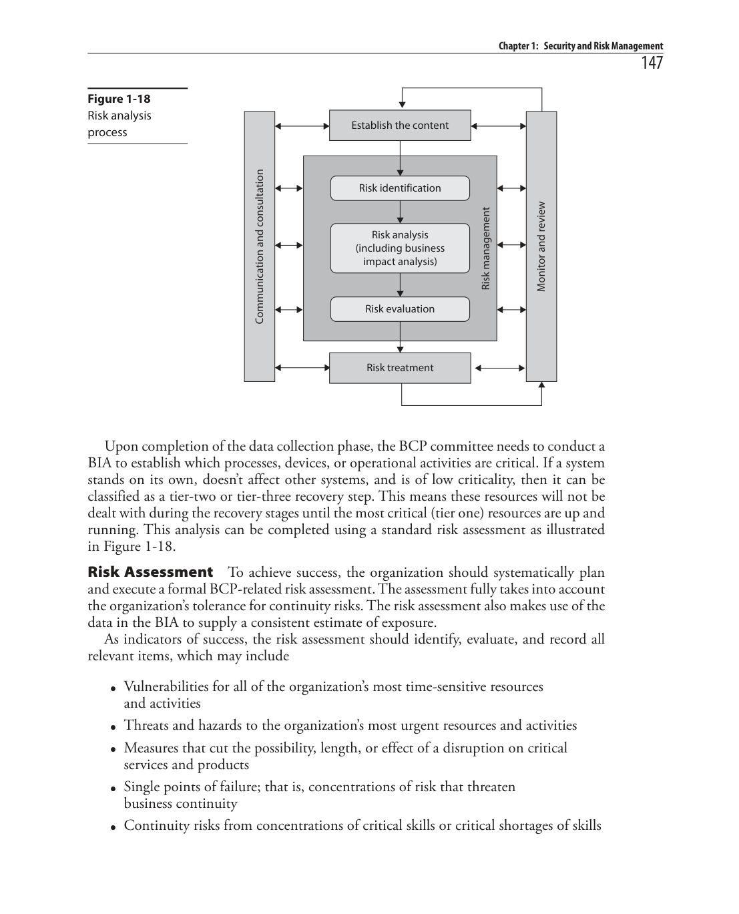
Figure 1-18
Upon completion of the data collection phase, the BCP committee needs to conduct a BIA to establish which processes, devices, or operational activities are critical. If a system stands on its own, doesn’t affect other systems, and is of low criticality, then it can be classified as a tier-two or tier-three recovery step. This means these resources will not be dealt with during the recovery stages until the most critical (tier one) resources are up and running. This analysis can be completed using a standard risk assessment as illustrated in Figure 1-18.
Risk AssessmentTo achieve success, the organization should systematically plan and execute a formal BCP-related risk assessment. The assessment fully takes into account the organization’s tolerance for continuity risks. The risk assessment also makes use of the data in the BIA to supply a consistent estimate of exposure. As indicators of success, the risk assessment should identify, evaluate, and record all relevant items, which may include
Vulnerabilities for all of the organization’s most time-sensitive resources
- andactivities
Threats and hazards to the organization’s most urgent resources and activities
- Measures that cut the possibility, length, or effect of a disruption on critical
- services and products
Single points of failure; that is, concentrations of risk that threaten
- businesscontinuity
Continuity risks from concentrations of critical skills or critical shortages of skills
- Continuity risks due to outsourced vendors and suppliers
- Continuity risks that the BCP program has accepted, that are handled elsewhere,
- or that the BCP program does not address
Risk Assessment Evaluation and ProcessIn a BCP setting, a risk assessment looks at the impact and likelihood of various threats that could trigger a business disruption. The tools, techniques, and methods of risk assessment include determining threats, assessing probabilities, tabulating threats, and analyzing costs and benefits. The end goals of a risk assessment include
Identifying and documenting single points of failure
- Making a prioritized list of threats to the particular business processes of the
- organization
Putting together information for developing a management strategy for risk
- control and for developing action plans for addressing risks
Documenting acceptance of identified risks, or documenting acknowledgment of
- risks that will not be addressed
The risk assessment is assumed to take the form of the equation: Risk = Threat × Impact × Probability. However, the BIA adds the dimension of time to this equation. In other words, risk mitigation measures should be geared toward those things that might most rapidly disrupt critical business processes and commercial activities. The main parts of a risk assessment are
Review the existing strategies for risk management
- Construct a numerical scoring system for probabilities and impacts
- Make use of a numerical score to gauge the effect of the threat
- Estimate the probability of each threat
- Weigh each threat through the scoring system
- Calculate the risk by combining the scores of likelihood and impact of
- each threat
Get the organization’s sponsor to sign off on these risk priorities
- Weigh appropriate measures
- Make sure that planned measures that alleviate risk do not heighten other risks
- Present the assessment’s findings to executive management
- Threats can be manmade, natural, or technical. A manmade threat may be an arsonist, a terrorist, or a simple mistake that can have serious outcomes. Natural threats may be tornadoes, floods, hurricanes, or earthquakes. Technical threats may be data corruption, loss of power, device failure, or loss of a data communications line. It is important to identify all possible threats and estimate the probability of them happening. Some issues may not immediately come to mind when developing these
plans, such as an employee strike, vandals, disgruntled employees, or hackers, but they do need to be identified. These issues are often best addressed in a group with scenario-based exercises. This ensures that if a threat becomes reality, the plan includes the ramifications onallbusiness tasks, departments, and critical operations. The more issues that are thought of and planned for, the better prepared a company will be if and when these events take place. The BCP committee needs to step through scenarios in which the following problemsresult:
Equipment malfunction or unavailable equipment
- Unavailable utilities (HVAC, power, communications lines)
- Facility becomes unavailable
- Critical personnel become unavailable
- Vendor and service providers become unavailable
- Software and/or data corruption
- The specific scenarios and damage types can vary from organization to organization.
BIA Steps
The more detailed and granular steps of a BIA are outlined here:
1.Select individuals to interview for data gathering. 2.Create data-gathering techniques (surveys, questionnaires, qualitative and quantitative approaches). 3.Identify the company’s critical business functions. 4.Identify the resources these functions depend upon. 5.Calculate how long these functions can survive without these resources. 6.Identify vulnerabilities and threats to these functions. 7.Calculate the risk for each different business function. 8.Document findings and report them to management.
We cover each of these steps in this chapter.
Assigning Values to AssetsQualitative and quantitative impact information should be gathered and then properly analyzed and interpreted. The goal is to see exactly how a business will be affected by different threats. The effects can be economical, operational, or both. Upon completion of the data analysis, it should be reviewed with the most knowledgeable people within the company to ensure that the findings
are appropriate and that it describes the real risks and impacts the organization faces. This will help flush out any additional data points not originally obtained and will give a fuller understanding of all the possible business impacts. Loss criteria must be applied to the individual threats that were identified. The criteria may include the following:
Loss in reputation and public confidence
- Loss of competitive advantages
- Increase in operational expenses
- Violations of contract agreements
- Violations of legal and regulatory requirements
- Delayed-income costs
- Loss in revenue
- Loss in productivity
- These costs can be direct or indirect and must be properly accounted for. For instance, if the BCP team is looking at the threat of a terrorist bombing, it is important to identify which business function most likely would be targeted, how all business functions could be affected, and how each bulleted item in the loss criteria would be directly or indirectly involved. The timeliness of the recovery can be critical for business processes and the company’s survival. For example, it may be acceptable to have the customer-support functionality out of commission for two days, whereas five days may leave the company in financial ruin. After identifying the critical functions, it is necessary to find out exactly what is required for these individual business processes to take place. The resources that are required for the identified business processes are not necessarily just computer systems, but may include personnel, procedures, tasks, supplies, and vendor support. It must be understood that if one or more of these support mechanisms is not available, the critical function may be doomed. The team must determine what type of effect unavailable resources and systems will have on these critical functions. The BIA identifies which of the company’s critical systems are needed for survival and estimates the outage time that can be tolerated by the company as a result of various unfortunate events. The outage time that can be endured by a company is referred to as themaximum tolerable downtime (MTD)ormaximum period time of disruption (MPTD), which is illustrated in Figure 1-19. The following are some MTD estimates that an organization may use. Note that these are sample estimates that will vary from organization to organization and from business unit to business unit:
Nonessential30 days
- Normal7 days
- Important72 hours
- Urgent24 hours
- CriticalMinutes to hours
- Each business function and asset should be placed in one of these categories, depending upon how long the company can survive without it. These estimates will help the company determine what backup solutions are necessary to ensure the availability of these resources. The shorter the MTD, the higher priority of recovery for the function in question. Thus, the items classified as Urgent should be addressed before those classified as Normal. For example, if being without a T1 communication line for three hours would cost the company $130,000, the T1 line could be consideredCritical and thus the company should put in a backup T1 line from a different carrier. If a server going down and being unavailable for ten days will only cost the company $250 in revenue, this would fall into the Normal category, and thus the company may not need to have a fully redundant server waiting to be swapped out. Instead, the company may choose to count on its vendor’s service level agreement (SLA), which may promise to have it back online in eight days. Sometimes the MTD will depend in large measure on the type of business in question. For instance, a call center—a vital link to current and prospective clients—will have a short MTD, perhaps measured in minutes instead of weeks. A common solution is to split up the calls through multiple call centers placed in differing locales. If one call center is knocked out of service, the other one can temporarily pick up the load. Manufacturing can be handled in various ways. Examples include subcontracting the making of products to an outside vendor, manufacturing at multiple sites, and warehousing an extra supply of products to fill gaps in supply in case of disruptions to normal manufacturing. The BCP team must try to think of all possible events that might occur that could turn out to be detrimental to a company. The BCP team also must understand it cannot possibly contemplate all events, and thus protection may not be available for every scenario introduced. Being properly prepared specifically for a flood, earthquake,
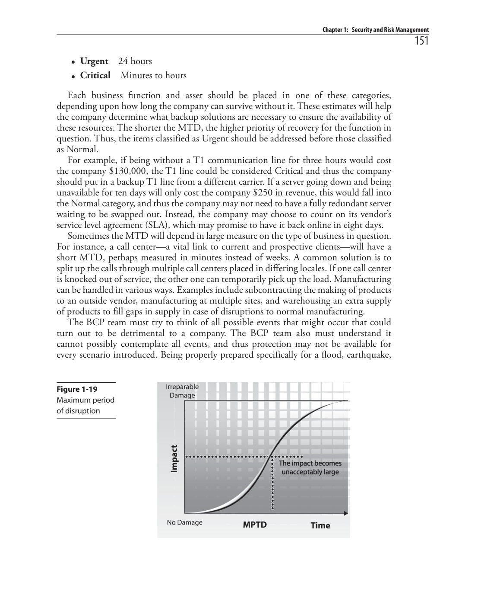
Figure 1-19
terrorist attack, or lightning strike is not as important as being properly prepared to respond toanythingthat damages or disrupts critical business functions. All of the previously mentioned disasters could cause these results, but so could a meteor strike, a tornado, or a wing falling off a plane passing overhead. So the moral of the story is to be prepared for the loss of any or all business resources, instead of focusing on the events that could cause the loss.
A BIA is performed at the beginning of business continuity planning to identify the areas that would suffer the greatest financial or operational loss in the event of a disaster or disruption. It identifies the company’s critical systems needed for survival and estimates the outage time that can be tolerated by the company as a result of a disaster or disruption.
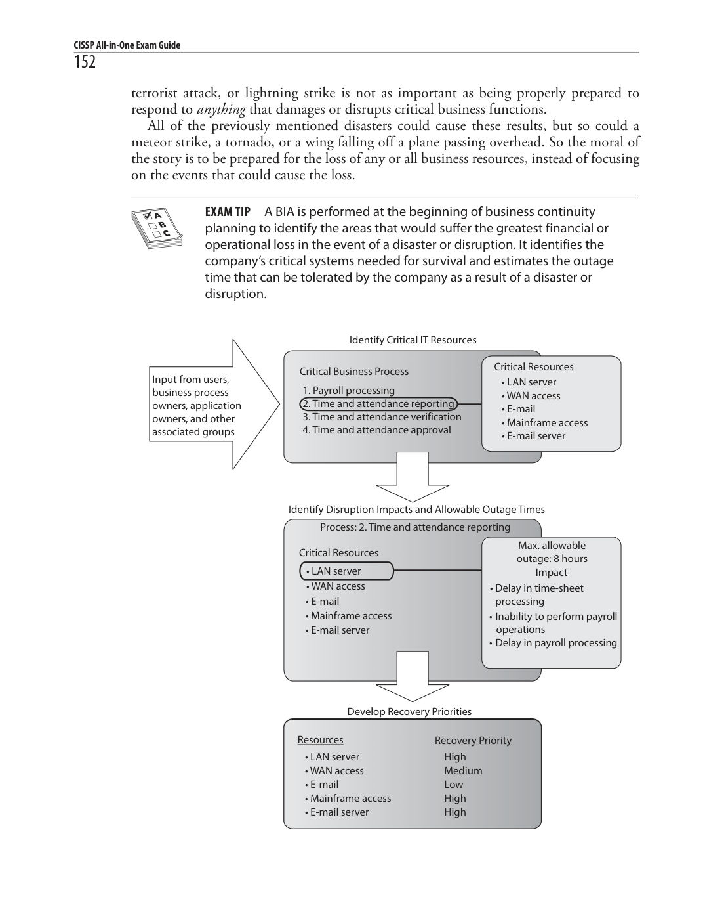
Diagram (p. 186)
Interdependencies
It is important to look at a company as a complex animal instead of a static twodimensional entity. It comprises many types of equipment, people, tasks, departments, communications mechanisms, and interfaces to the outer world. The biggest challenge of true continuity planning is understanding all of these intricacies and their interrelationships. A team may develop plans to back up and restore data, implement redundant data-processing equipment, educate employees on how to carry out automated tasks manually, and obtain redundant power supplies. But if all of these components don’t know how to work together in a different, disruptive environment to get the products out the door, it might all be a waste of time. The BCP team should carry out and address in the resulting plan the following interrelation and interdependency tasks:
Define essential business functions and supporting departments.
- Identify interdependencies between these functions and departments.
- Discover all possible disruptions that could affect the mechanisms necessary to
- allow these departments to function together. Identify and document potential threats that could disrupt interdepartmental
- communication. Gather quantitative and qualitative information pertaining to those threats.
- Provide alternative methods of restoring functionality and communication.
- Provide a brief statement of rationale for each threat and corresponding
- information.
The main goal of business continuity is to resume normal business as quickly as possible, spending the least amount of money and resources. The overall business interruption and resumption plan should cover all organizational elements, identify critical services and functions, provide alternatives for emergency operations, and integrate each departmental plan. This can be accomplished by in-house appointed employees, outside consultants, or a combination of both. A combination can bring many benefits to the company, because the consultants are experts in this field and know the necessary steps, questions to ask, and issues to look for and offer general, reasonable advice, whereas in-house employees know their company intimately and have a full understanding of how certain threats can affect operations. It is good to cover all the necessary ground, and many times a combination of consultants and employees provides just the right recipe. Up until now, we have established management’s responsibilities as the following:
Committing fully to the BCP
- Setting policy and goals
- Making available the necessary funds and resources
- Taking responsibility for the outcome of the development of the BCP
- Appointing a team for the process
- The BCP team’s responsibilities are as follows:
Identifying regulatory and legal requirements that must be met
- Identifying all possible vulnerabilities and threats
- Estimating the possibilities of these threats and the loss potential
- Performing a BIA
- Outlining which departments, systems, and processes must be up and running
- before any others
Identifying interdependencies among departments and processes
- Developing procedures and steps in resuming business after a disaster
- Several software tools are available for developing a BCP that simplify this complex process. Automation of these procedures can quicken the pace of the project and allow easier gathering of the massive amount of information entailed. This information, along with other data explained in previous sections, should be presented to senior management. Management usually wants information stated in monetary, quantitative terms, not in subjective, qualitative terms. It is one thing to know that if a tornado were to hit, the result would bereally bad, but it is another to know that if a tornado were to hit and affect 65 percent of the facility, the company could be at risk of losing computing capabilities for up to 72 hours, power supply for up to 24 hours, and a full stop of operations for 76 hours, which would equate to a loss of $125,000 each day.
Personnel Security
Many facets of the responsibilities of personnel fall under management’s umbrella, and several facets have a direct correlation to the overall security of the environment. Although society has evolved to be extremely dependent upon technology in the workplace, people are still the key ingredient to a successful company. But in security circles, people are often the weakest link. Either accidentally through mistakes or lack of training, or intentionally through fraud and malicious intent, personnel cause more serious and hard-to-detect security issues than hacker attacks, outside espionage, or equipment failure. Although the future actions of individuals cannot be predicted, it is possible to minimize the risks by implementing preventive measures. These include hiring the most qualified individuals, performing background checks, using detailed job descriptions, providing necessary training, enforcing strict access controls, and terminating individuals in a way that protects all parties involved. Several items can be put into place to reduce the possibilities of fraud, sabotage, misuse of information, theft, and other security compromises.Separation of dutiesmakes sure that one individual cannot complete a critical task by herself. In the movies, when a submarine captain needs to launch a nuclear torpedo to blow up the enemy and save civilization as we know it, the launch usually requires three codes to be entered into the launching mechanism by three different senior crewmembers. This is an example of separation of duties, and it ensures that the captain cannot complete such an important and terrifying task all by himself.
Separation of duties is a preventative administrative control put into place to reduce the potential of fraud. For example, an employee cannot complete a critical financial transaction by herself. She will need to have her supervisor’s written approval before the transaction can be completed. In an organization that practices separation of duties, collusion must take place for fraud to be committed.Collusionmeans that at least two people are working together to cause some type of destruction or fraud. In our example, the employee and her supervisor must be participating in the fraudulent activity to make it happen. Two variations of separation of duties aresplit knowledgeanddual control. In both cases, two or more individuals are authorized and required to perform a duty or task. In the case of split knowledge, no one person knows or has all the details to perform a task. For example, two managers might be required to open a bank vault, with each only knowing part of the combination. In the case of dual control, two individuals are again authorized to perform a task, but both must be available and active in their participation to complete the task or mission. For example, two officers must perform an identical keyturn in a nuclear missile submarine, each out of reach of the other, to launch a missile. The control here is that no one person has the capability of launching a missile, because they cannot reach to turn both keys at the same time. Rotation of duties(rotation of assignments) is an administrative detective control that can be put into place to uncover fraudulent activities. No one person should stay in one position for a long time because they may end up having too much control over a segment of the business. Such total control could result in fraud or the misuse of resources. Employees should be moved into different roles with the idea that they may be able to detect suspicious activity carried out by the previous employee carrying out that position. This type of control is commonly implemented in financial institutions. Employees in sensitive areas should be forced to take their vacations, which is known as amandatory vacation. While they are on vacation, other individuals fill their positions and thus can usually detect any fraudulent errors or activities. Two of the many ways to detect fraud or inappropriate activities would be the discovery of activity on someone’s user account while they’re supposed to be away on vacation, or if a specific problem stopped while someone was away and not active on the network. These anomalies are worthy of investigation. Employees who carry out fraudulent activities commonly do not take vacations because they do not want anyone to figure out what they are doing behind the scenes. This is why they must be forced to be away from the organization for a period of time, usually two weeks.
Hiring Practices
Depending on the position to be filled, a level of screening should be done by human resources to ensure the company hires the right individual for the right job. Skills should be tested and evaluated, and the caliber and character of the individual should be examined. Joe might be the best programmer in the state, but if someone looks into his past and finds out he served prison time because he continually flashes old ladies in parks, the hiring manager might not be so eager to bring Joe into the organization. Nondisclosure agreements(NDAs)must be developed and signed by new employees to protect the company and its sensitive information. Any conflicts of interest must
be addressed, and there should be different agreements and precautions taken with temporary and contract employees. References should be checked, military records reviewed, education verified, and, if necessary, a drug test should be administered. Many times, important personal behaviors can be concealed, and that is why hiring practices now include scenario questions, personality tests, and observations of the individual, instead of just looking at a person’s work history. When a person is hired, he is bringing his skills and whatever other baggage he carries. A company can reduce its heartache pertaining to personnel by first conducting useful and careful hiring practices. The goal is to hire the “right person” and not just hire a person for “right now.” Employees represent an investment on the part of the organization, and by taking the time and hiring the right people for the jobs, the organization will be able to maximize their investment and achieve a better return. A more detailed background check can reveal some interesting information. Things like unexplained gaps in employment history, the validity and actual status of professional certifications, criminal records, driving records, job titles that have been misrepresented, credit histories, unfriendly terminations, appearances on suspected terrorist watch lists, and even real reasons for having left previous jobs can all be determined through the use of background checks. This has real benefit to the employer and the organization because it serves as the first line of defense for the organization against being attacked from within. Any negative information that can be found in these areas could be indicators of potential problems that the potential employee could create for the company at a later date. Take the credit report for instance. On the surface, this may seem to be something the organization doesn’t need to know about, but if the report indicates the potential employee has a poor credit standing and a history of financial problems, it could mean you don’t want to place them in charge of the organization’s accounting, or even the petty cash. Ultimately, the goal here is to achieve several different things at the same time by using a background check. You’re trying to mitigate risk, lower hiring costs, and also lower the turnover rate for employees. All this is being done at the same time you are trying to protect your existing customers and employees from someone gaining employment in your organization who could potentially conduct malicious and dishonest actions that could harm you, your employees, and your customers as well as the general public. In many cases, it is also harder to go back and conduct background checks after the individual has been hired and is working. This is because there will need to be a specific cause or reason for conducting this kind of investigation. If any employee moves to a position of greater security sensitivity or potential risk, a follow-up investigation should be considered. Possible background check criteria could include
A Social Security number trace
- A county/state criminal check
- A federal criminal check
- A sexual offender registry check
- Employment verification
- Education verification
- Professional reference verification
- An immigration check
- Professional license/certification verification
- Credit report
- Drug screening
Termination
Because terminations can happen for a variety of reasons, and terminated people have different reactions, companies should have a specific set of procedures to follow with every termination. For example:
The employee must leave the facility immediately under the supervision of a
- manager or security guard.
The employee must surrender any identification badges or keys, be asked to
- complete an exit interview, and return company supplies.
That user’s accounts and passwords should be disabled or changed immediately.
- These actions may seem harsh when they actually take place, but too many companies have been hurt by vengeful employees who have lashed out at the company when their positions were revoked for one reason or another. If an employee is disgruntled in any way or the termination is unfriendly, that employee’s accounts should be disabled right away, and all passwords on all systems changed.
Practical Tips on Terminations
Without previous arrangement, an employee cannot be compelled to complete an exit interview, despite the huge value to the company of conducting such interviews. Neither can an employee be compelled to return company property, as a practical matter, if he or she simply chooses not to. The best way to motivate departing employees to comply is to ensure that any severance package they may be eligible for is contingent upon completion of these tasks, and that means having them agree to such conditions up front, as part of their employment agreement.
Security-Awareness Training
For an organization to achieve the desired results of its security program, it must communicate the what, how, and why of security to its employees. Security-awareness training should be comprehensive, tailored for specific groups, and organization-wide. It should repeat the most important messages in different formats; be kept up to date; be entertaining, positive, and humorous; be simple to understand; and—most important—be supported by senior management. Management must allocate the resources for this activity and enforce its attendance within the organization.
The goal is for each employee to understand the importance of security to the company as a whole and to each individual. Expected responsibilities and acceptable behaviors must be clarified, and noncompliance repercussions, which could range from a warning to dismissal, must be explained before being invoked. Security-awareness training is performed to modify employees’ behavior and attitude toward security. This can best be achieved through a formalized process of security-awareness training. Because security is a topic that can span many different aspects of an organization, it can be difficult to communicate the correct information to the right individuals. By using a formalized process for security-awareness training, you can establish a method that will provide you with the best results for making sure security requirements are presented to the right people in an organization. This way you can make sure everyone understands what is outlined in the organization’s security program, why it is important, and how it fits into the individual’s role in the organization. The higher levels of training typically are more general and deal with broader concepts and goals, and as the training moves down to specific jobs and tasks, it becomes more situation specific as it directly applies to certain positions within the company. A security-awareness program is typically created for at least three types of audiences: management, staff, and technical employees. Each type of awareness training must be geared toward the individual audience to ensure each group understands its particular responsibilities, liabilities, and expectations. If technical security training were given to senior management, their eyes would glaze over as soon as protocols and firewalls were mentioned. On the flip side, if legal ramifications, company liability issues pertaining to protecting data, and shareholders’ expectations were discussed with the IT group, they would quickly turn to their smartphone and start tweeting, browsing the Internet, or texting their friends. Members of management would benefit the most from a short, focused securityawareness orientation that discusses corporate assets and financial gains and losses pertaining to security. They need to know how stock prices can be negatively affected by compromises, understand possible threats and their outcomes, and know why security must be integrated into the environment the same way as other business processes. Because members of management must lead the rest of the company in support of security, they must gain the right mindset about its importance. Middle management would benefit from a more detailed explanation of the policies, procedures, standards, and guidelines and how they map to the individual departments for which each middle manager is responsible. Middle managers should be taught why their support for their specific departments is critical and what their level of responsibility is for ensuring that employees practice safe computing activities. They should also be shown how the consequences of noncompliance by individuals who report to them can affect the company as a whole and how they, as managers, may have to answer for such indiscretions. The technical departments must receive a different presentation that aligns more to their daily tasks. They should receive a more in-depth training to discuss technical configurations, incident handling, and how to recognize different types of security compromises.
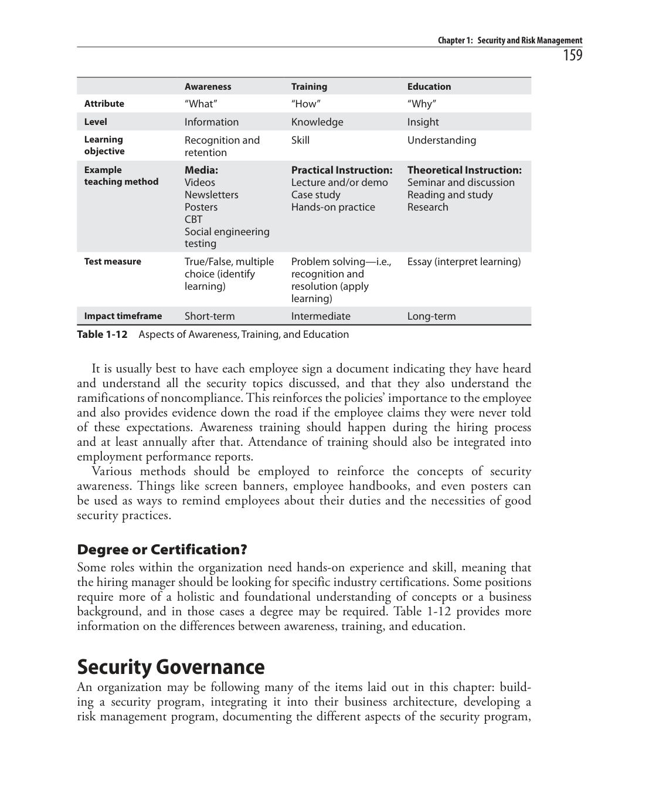
“What”“How”“Why”
It is usually best to have each employee sign a document indicating they have heard and understand all the security topics discussed, and that they also understand the ramifications of noncompliance. This reinforces the policies’ importance to the employee and also provides evidence down the road if the employee claims they were never told of these expectations. Awareness training should happen during the hiring process and at least annually after that. Attendance of training should also be integrated into employment performance reports. Variousmethodsshouldbeemployedtoreinforcetheconceptsofsecurity awareness. Things like screen banners, employee handbooks, and even posters can be used as ways to remind employees about their duties and the necessities of good security practices.
Degree or Certification?
Some roles within the organization need hands-on experience and skill, meaning that the hiring manager should be looking for specific industry certifications. Some positions require more of a holistic and foundational understanding of concepts or a business background, and in those cases a degree may be required. Table 1-12 provides more information on the differences between awareness, training, and education.
Security Governance
An organization may be following many of the items laid out in this chapter: building a security program, integrating it into their business architecture, developing a risk management program, documenting the different aspects of the security program,
performing data protection, and training its staff. But how does the organization know that it is doing everything correctly, and doing so on an ongoing basis? This is where security governance comes into play.Security governanceis a framework that allows for the security goals of an organization to be set and expressed by senior management, communicated throughout the different levels of the organization. It grants power to the entities needed to implement and enforce security, and provides a way to verify the performance of these necessary security activities. Not only does senior management need to set the direction of security; it also needs a way to be able to view and understand how their directives are being met or not being met. If a board of directors and CEO demand that security be integrated properly at all levels of the organization, how do they know it is really happening? Oversight mechanisms must be developed and integrated so that the people who are ultimately responsible for an organization are constantly and consistently updated on the overall health and security posture of the organization. This happens through properly defined communication channels, standardized reporting methods, and performance-based metrics. Let’s compare two companies. Company A has an effective security governance program in place and Company B does not. Now, to the untrained eye it would seem as though Companies A and B are equal in their security practices because they both have security policies, procedures, and standards in place, the same security technology controls (firewalls, IDSs, identity management, and so on), defined security roles, and security-awareness training. You may think, “Man, these two companies are on the ball and quite evolved in their security programs.” But if you look closer, you will see some critical differences (listed in Table 1-13). Does the organization you work for look like Company A or Company B? Most organizations today have many of the pieces and parts to a security program (policies, standards, firewalls, security team, IDS, and so on), but management may not be truly involved, and security has not permeated throughout the organization. Some organizations rely just on technology and isolate all security responsibilities within the IT group. If security were just a technology issue, then this security team could properly install, configure, and maintain the products, and the company would get a gold star and pass the audit with flying colors. But that is not how the world of information security works today. It is much more than just technological solutions. Security must be utilized throughout the organization, and having several points of responsibility and accountability is critical. Security governance is a coherent system of integrated processes that helps to ensure consistent oversight, accountability, and compliance. It is a structure that we should put in place to make sure that our efforts are streamlined and effective and that nothing is being missed.
Metrics
We really can’t just build a security program, call it good, and go home. We need a way to assess the effectiveness of our work, identify deficiencies, and prioritize the things that still need work. We need a way to facilitate decision making, performance improvement, and accountability through collection, analysis, and reporting of the necessary information. As the saying goes, “You can’t manage something you can’t measure.” In security there are many items that need to be measured so that performance is properly
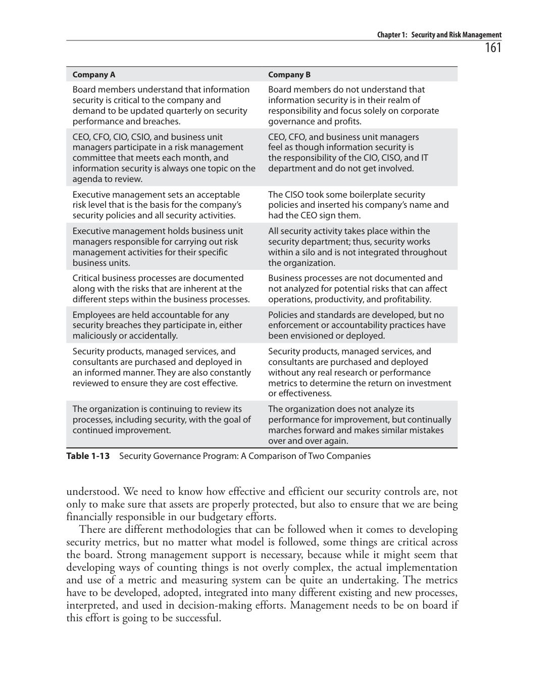
Board members understand that informationBoard members do not understand that
understood. We need to know how effective and efficient our security controls are, not only to make sure that assets are properly protected, but also to ensure that we are being financially responsible in our budgetary efforts. There are different methodologies that can be followed when it comes to developing security metrics, but no matter what model is followed, some things are critical across the board. Strong management support is necessary, because while it might seem that developing ways of counting things is not overly complex, the actual implementation and use of a metric and measuring system can be quite an undertaking. The metrics have to be developed, adopted, integrated into many different existing and new processes, interpreted, and used in decision-making efforts. Management needs to be on board if this effort is going to be successful.
Another requirement is that there has to be established policies, procedures, and standards to measure against. How can you measure policy compliance when there are no policies in place? A full security program needs to be developed and matured before attempting to measure its pieces and parts. Measurement activities need to provide quantifiable performance-based data that is repeatable, reliable, and produces results that are meaningful. Measurement will need to happen on a continuous basis, so the data collection methods must be repeatable. The same type of data must be continuously gathered and compared so that improvement or a drop in efficacy can be identified. The data collection may come from parsing system logs, incident response reports, audit findings, surveys, or risk assessments. The measurement results must also be meaningful for the intended audience. An executive will want data portrayed in a method that allows him to understand the health of the security program quickly and in terms he is used to. This can be a heat map, graph, pie chart, or scorecard. A balanced scorecard, shown in Figure 1-20, is a traditional strategic tool used for performance measurement in the business world. The goal is to present the most relevant information quickly and easily. Measurements are compared with set target values so that if performance deviates from expectations, that deviation can be conveyed in a simplistic and straightforwardmanner. If the audience for the measurement values are not executives, but instead security administrators, then the results are presented in a manner that is easiest for them to understand and use.
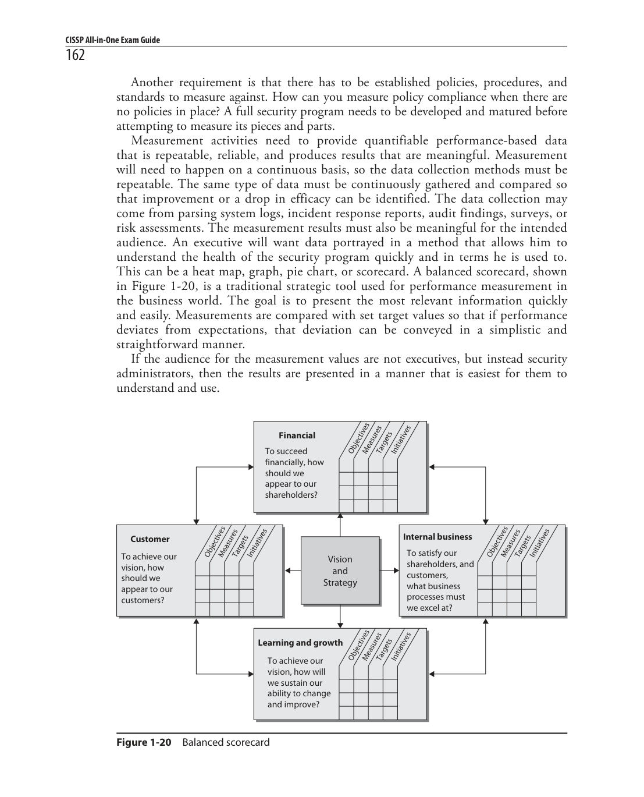
Figure 1-20Balanced scorecard
It is not uncommon to see scorecards, pie charts, graphics, and dashboard results that do not map to what is really going on in the environment. Unless real data is gathered and thecorrectdata is gathered, the resulting pie chart can illustrate a totally different story than what is really taking place. Some people spend more time making the colors in the graph look eye-pleasing than perfecting the raw data-gathering techniques. This can lead to a false sense of security and ultimately to breaches. There are industry best practices that can be used to guide the development of a security metric and measurement system. The international standard isISO/IEC 27004:2009, which is used to assess the effectiveness of an ISMS and the controls that make up the security program as outlined in ISO/IEC 27001. So ISO/IEC 27001 tells you how to build a security program and then ISO/IEC 27004 tells you how to measure it. The NIST SP 800-55, Revision 1also covers performance measuring for information security, but has a U.S. government slant. The ISO standard and NIST approaches to metric development are similar, but have some differences. The ISO standard breaks individual metrics down into base measures, derived measures, and then indicator values. The NIST approach is illustrated in Figure 1-21, which breaks metrics down into implementation, effectiveness/efficiency, and impact values. If your organization has the goal of becoming ISO/IEC 27000 certified, then you should follow ISO/IEC 27004:2009. If your organization is governmental or a
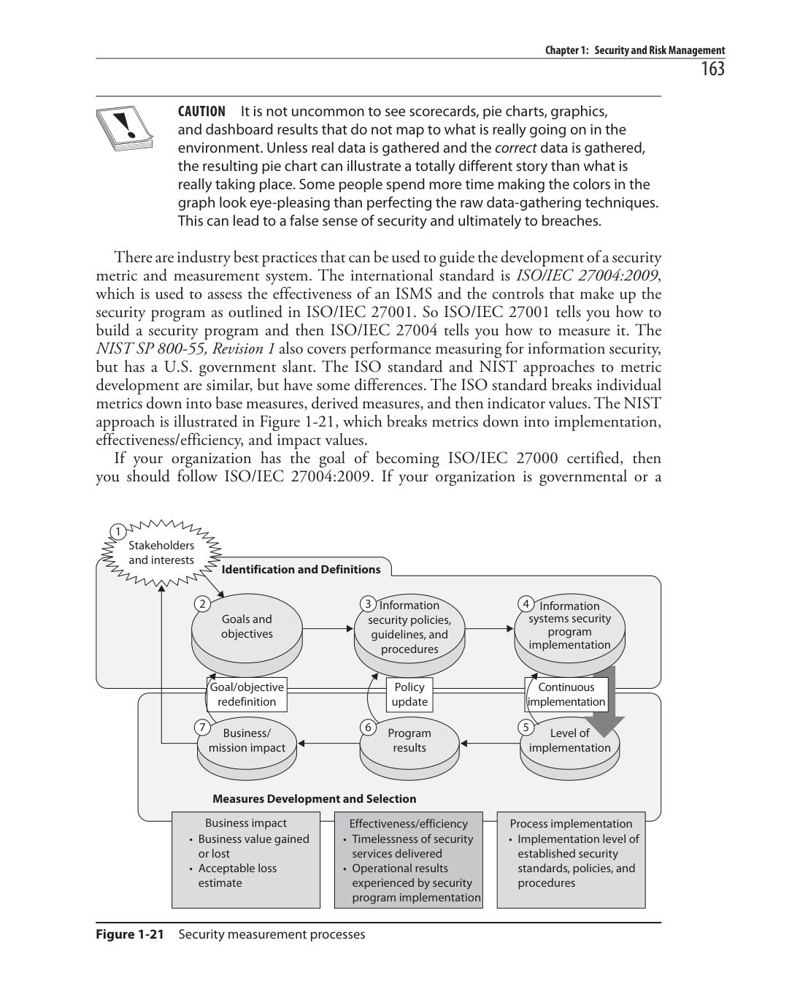
Figure 1-21Security measurement processes
government contracting company, then following the NIST standard would make more sense. What is important is consistency. For metrics to be used in a successful manner, they have to be standardized and have a direct relationship to each other. For example, if an organization used a rating system of 1–10 to measure incident response processes and a rating system of High, Medium, and Low to measure malware infection protection mechanisms, these metrics could not be integrated easily. An organization needs to establish the metric value types it will use and implement them in a standardized method across the enterprise. Measurement processes need to be thought through at a detailed level before attempting implementation. Table 1-14 illustrates a metric template that can be used to track incident response performance levels.
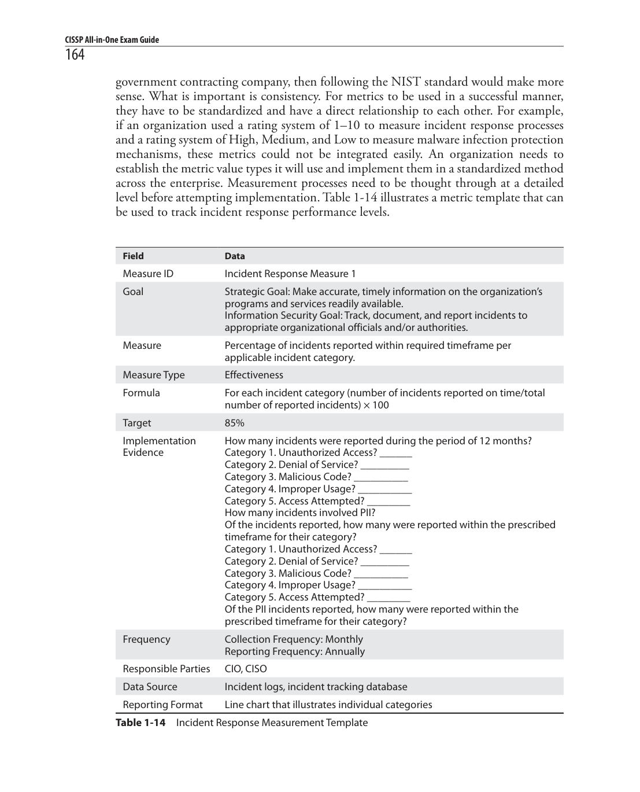
Measure IDIncident Response Measure 1
The types of metrics that are developed need to map to the maturity level of the security program. In the beginning, simplistic items are measured (i.e., number of completed policies), and as the program matures the metrics mature and can increase in complexity (i.e., number of vulnerabilities mitigated). The use of metrics allows an organization to truly understand the health of its security program because each activity and initiative can be measured in a quantifiable manner. The metrics are used in governing activities because this allows for the best strategic decisions to be made. The use of metrics also allows the organization to implement and follow the capability maturity model described earlier. A maturity model is used to carry out incremental improvements, and the metric results indicate what needs to be improved and to what levels. Metrics can also be used in process improvement models, as in Six Sigma and the measurements of service-level targets for ITIL. We need to know not only what to do (implement controls, build a security program), but also how well we did it and how to continuously improve.
Ethics
Ethics are based on many different issues and foundations. They can be relative to different situations and interpreted differently from individual to individual. Therefore, they are often a topic of debate. However, some ethics are less controversial than others, and these types of ethics are easier to expect of all people. (ISC)requires all certified system security professionals to commit to fully supporting its Code of Ethics. If a CISSP intentionally or knowingly violates this Code of Ethics, he or she may be subject to a peer review panel, which will decide whether the certification should be revoked. The full set of (ISC)Code of Ethics for the CISSP is listed on the (ISC)site at www .isc2.org. The following list is an overview, but each CISSP candidate should read the full version and understand the Code of Ethics before attempting this exam:
Protect society, the common good, necessary public trust and confidence, and the
- infrastructure.
Act honorably, honestly, justly, responsibly, and legally.
- Provide diligent and competent service to principals.
- Advance and protect the profession.
- An interesting relationship exists between law and ethics. Most often, laws are based on ethics and are put in place to ensure that others act in an ethical way. However, laws do not apply to everything—that is when ethics should kick in. Some things may not be illegal, but that does not necessarily mean they are ethical. Corporations should have a guide developed on computer and business ethics. This can be part of an employee handbook, used in orientation, posted, and made a part of training sessions. Certain common ethical fallacies are used by many in the computing world to justify unethical acts. They exist because people look at issues differently and interpret (or
misinterpret) rules and laws that have been put into place. The following are examples of these ethical fallacies:
Hackers only want to learn and improve their skills. Many of them are not
- making a profit off of their deeds; therefore, their activities should not be seen as illegal or unethical.
The First Amendment protects and provides the right for U.S. citizens to write
- viruses.
Information should be shared freely and openly; therefore, sharing confidential
- information and trade secrets should be legal and ethical.
Hacking does not actually hurt anyone.
The Computer Ethics Institute
TheComputer Ethics Instituteis a nonprofit organization that works to help advance technology by ethical means. The Computer Ethics Institute has developed its own Ten Commandments of Computer Ethics:
1.Thou shalt not use a computer to harm other people. 2.Thou shalt not interfere with other people’s computer work. 3.Thou shalt not snoop around in other people’s computer files. 4.Thou shalt not use a computer to steal. 5.Thou shalt not use a computer to bear false witness. 6.Thou shalt not copy or use proprietary software for which you have not paid. 7.Thou shalt not use other people’s computer resources without authorization or proper compensation. 8.Thou shalt not appropriate other people’s intellectual output. 9.Thou shalt think about the social consequences of the program you are writing or the system you are designing. 10.Thou shalt always use a computer in ways that ensure consideration and respect for your fellow humans.
The Internet Architecture Board
TheInternet Architecture Board (IAB)is the coordinating committee for Internet design, engineering, and management. It is responsible for the architectural oversight of the Internet Engineering Task Force (IETF) activities, Internet Standards Process oversight and appeal, and editor of Requests for Comments (RFCs). Figure 1-22 illustrates the IAB’s place in the hierarchy of entities that help ensure the structure and standardization of the Internet. Otherwise, the Internet would be an unusable big bowl of spaghetti and we would all still be writing letters and buying stamps.
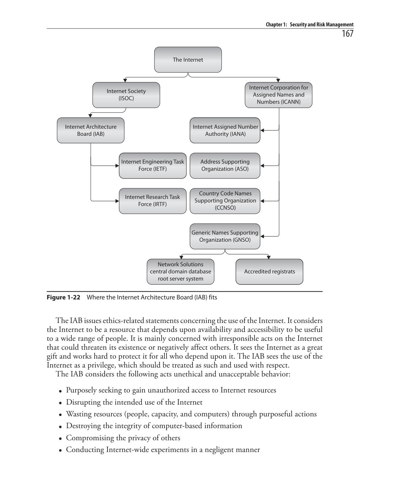
Figure 1-22Where the Internet Architecture Board (IAB) fits
The IAB issues ethics-related statements concerning the use of the Internet. It considers the Internet to be a resource that depends upon availability and accessibility to be useful to a wide range of people. It is mainly concerned with irresponsible acts on the Internet that could threaten its existence or negatively affect others. It sees the Internet as a great gift and works hard to protect it for all who depend upon it. The IAB sees the use of the Internet as a privilege, which should be treated as such and used with respect. The IAB considers the following acts unethical and unacceptable behavior:
Purposely seeking to gain unauthorized access to Internet resources
- Disrupting the intended use of the Internet
- Wasting resources (people, capacity, and computers) through purposeful actions
- Destroying the integrity of computer-based information
- Compromising the privacy of others
- Conducting Internet-wide experiments in a negligent manner
- The IAB vows to work with federal agencies to take whatever actions are necessary to protect the Internet. This could be through new technologies, methods, or procedures that are intended to make the Internet more resistant to disruption. A balance exists between enhancing protection and reducing functionality. One of the Internet’s main purposes is to enable information to flow freely and not be prohibited; thus, the IAB must be logical and flexible in its approaches and in the restrictions it attempts to implement. The Internet is everyone’s tool, so everyone should work together to protect it.
RFC 1087 is called “Ethics and the Internet.”This RFC outlines the concepts pertaining to what the IAB considers unethical and unacceptable behavior.
Corporate Ethics Programs
More regulations are requiring organizations to have an ethical statement and potentially an ethical program in place. The ethical program is to serve as the “tone at the top,” which means that the executives need to ensure not only that their employees are acting ethically, but also that they themselves are following their own rules. The main goal is to ensure that the motto “succeed by any means necessary” is not the spoken or unspoken culture of a work environment. Certain structures can be put into place that provide a breeding ground for unethical behavior. If the CEO gets more in salary based on stock prices, then she may find ways to artificially inflate stock prices, which can directly hurt the investors and shareholders of the company. If managers can only be promoted based on the amount of sales they bring in, these numbers may be fudged and not represent reality. If an employee can only get a bonus if a low budget is maintained, he might be willing to take shortcuts that could hurt company customer service or product development. Although ethics seem like things that float around in the ether and make us feel good to talk about, they have to be actually implemented in the real corporate world through proper business processes and management styles.
Summary
This chapter (and its corresponding domain) is one of the longest in the book, and with good reason. It lays down the foundation on which the rest of the CISSP body of knowledge is built. Information systems security boils down to ensuring the availability, integrity, and confidentiality of our information in an environment rich in influencers. These include organizational goals, assets, laws, regulations, privacy, threats, and people. Each of these was discussed in some detail in the preceding sections. Along the way, wealso covered tangible ways in which we can link security to each of the influencers. Wediscussed a variety of frameworks that enable our organizations to provide governance and management of business, IT, and security issues. In many cases, these frameworks are driven by legal or regulatory requirements. In other cases, they represent best practices for security. As CISSPs we must be knowledgeable of all these as we are trusted to be able to apply the right solution to any security problem.
We also took a very detailed look at the way in which we manage risk to our information systems. We know that no system is truly secure, so our job is to find the most likely and the most dangerous threat actions so that we can address them first. The process of quantifying losses and their probabilities of occurring is at the heart of risk assessments. Armed with that information, we are able to make good decisions in terms of controls, processes, and costs. Our approach is not solely focused on the human adversary, but also on any source of loss to our organizations. Most importantly, we use this information to devise ways in which to ensure we can continue business operations in the face of any reasonable threat. Figure 1-23 illustrates many of the elements that go into a complete security program.
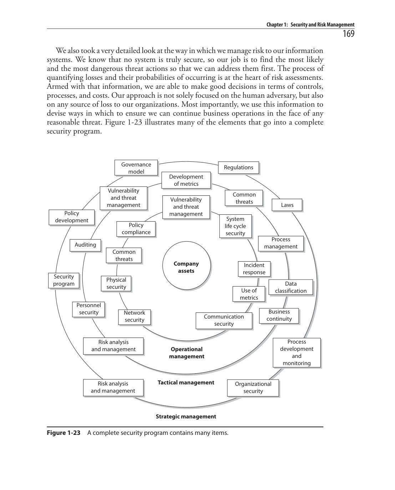
Figure 1-23A complete security program contains many items.